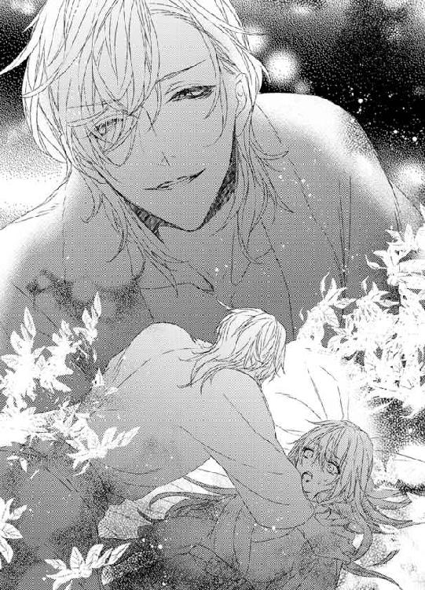

| 買われたメイドは奔放貴族に甘く乱される【SS付】【イラスト付】 (ロイヤルキス文庫) | |
| 森本あき | |
| 株式会社ジュリアンパブリッシング (2016) | |
この物語はフィクションであり、実在の人物・団体・事件等とは、いっさい関係ありません。
イラスト・旭炬
いつか、わたしにも王子様が。
そんなおとぎ話を信じるほど、わたしはバカじゃないわ。
暑いわね、本当に。
サマーは、ふう、と息を吐いた。海からの照り返しが、じりじりとサマーの肌を焼いている。もともと、夏は焼けてたけれど、このままだとかなり黒くなってしまいそうだ。
プライベートビーチでのお仕事と聞いたときに、ラッキーと思った。いままではダイナーのウェイトレスとか、酒場の裏方仕事で店の掃除をしたり、お酒のボトルを運んだりとか、ホテルの部屋掃除とか、体力勝負の肉体労働、かつ、お給金もそんなによくないことばかりやってきた。それに比べると、プライベートビーチなんて華やかだし、楽そうだ。暇なときには海で泳いでいいとまで言われた。
二十年近く生きてきて、ようやく、このわたしにも楽に稼げる仕事が舞い込んできたんだわ。
なんて浮かれていた自分を、思い切り殴りたい。
会員制のプライベートビーチに集まるのは、各国から集まったよりすぐりの金持ちばかり。いままでのどんな客よりわがままだ。
レモン入りの水を持ってきて、と命令され、持っていったら、水はスパークリングに決まってるでしょ、と突き返され、日が当たるからビーチパラソルの角度を変えて、あまりにも日が当たらないから逆にして、サンオイルを塗ってちょうだい、ああ、そうそう、マッサージもお願いね、うちの子供を見ていて、ちょっと泳いでくるから。
よくもまあ、そんなにつぎからつぎへと注文が出てくるものね、と感心すらする。サマーのように、自分のことは自分ですること、としつけられてきた身には、まったく理解できない。
ビーチパラソルぐらい、自分でどうにかしなさいよっ！ わたしを呼んでる間に、角度ぐらい変えられるでしょーっ！
サマーが割り当てられている区画には、六つのビーチパラソルが置いてある。ビーチパラソルの両側にはビーチチェアが一つずつついているので、最大で十二人がサマーの担当となる。もし、だれも来ない場合は休んでいていい。あまりにも暇なら泳いでもかまわないし、海が荒れたり、サメが近くにいるという警報が出た場合は、プライベートビーチは閉鎖される。月にいくら、というお給金制度なので、その間は何もしないのにお金がもらえることになる。
そんなの、楽勝と思うじゃない？ そのうえ、お給金はこれまでとはおおちがいの額なんだから、すっごくいいお仕事だと喜ぶじゃない？
なんなの、この詐欺！ 朝十時から夕方六時まで、休む暇もなく動き回らなきゃならないんですけど！ なんで、みんな、こんなにプライベートビーチに来るのよ！ そして、この辺の海は穏やかなことで有名で、サメなんてこれまで来たことないって言うじゃない！ 海が遊泳禁止になることなんてありえないって、働き始めてから知るなんて！
プライベートビーチに備えられているビーチパラソルは三十個。なのに、会員は二百家族（入会は家族単位のようだ）を超えている。その時点で、すでに供給がおいついていない。
結果として、三十個あるビーチパラソルは午前十一時には全部埋まってしまう。そのあとから来た人たちは断らなきゃならない。空いたら教えてくれ、と、連絡先を書いていくので、何組かいなくなっても、すぐにまたつぎがやってくる。仕事を始めて一週間たったが、暇なときなんて一瞬たりともなかった。
十二人しかめんどう見なくていいなんて余裕よね、もしかしたら、だれもいなくてずっと暇だわ、ってなるかもしれないし、とうきうきだったあの時間を返してほしい。
サマーは初日こそ、花柄のかわいいワンピースの下に水着を着ていた。いつもは後ろで三つ編みにしている髪の毛もほどいて、海風でふわふわ揺れるのもすてき、とうきうきしていた。海で泳ぐことを楽しみにしてたのに、そんな機会はこれからも訪れそうにない。
いまは、風を通して汗をすばやく吸収してくれる麻、もしくは綿のシンプルなワンピースにしている。腕の途中から日焼けをするのもいやなのでノースリーブ。あとはスカートが膝たけぐらいの短いもの。髪はほつれないように、きつめに三つ編みにしている。それだと、動き回っても髪の毛が邪魔にならない。
スカートが短いのは、少しでも布面積が減るようにだ。そうじゃないと、毎日の洗濯が大変。その手のワンピースは三着しか持っていないので、たまるのを待って洗濯機で洗うことができない。帰ったら汗でびっしょりになったワンピースを脱いで、下着とともに手洗いをする。疲れているのにかならず洗濯をしなきゃならないから、洗う面積は少ないほうがいい。長くてふんわりしたワンピースを皺にならないように気をつけながら洗う元気なんてない。
色も全部、白っぽいもの。黒は雰囲気が暗くなるのでやめてください、と雇い主に注意されたけど、それが真意じゃないことは、いまはもうよくわかっている。
黒は太陽光を吸収するのだ。毎日三十度以上と気温そのものが高い上に、海辺だと反射光にもさらされる。忙しくて、ちょっとお水を飲むのを忘れたりすると、体中の水分がどんどんなくなっていく。
その結果、これまで何人も日射病で倒れてきたのだろう。
雇い主が心配しているのは、サマーたちが日射病で倒れることじゃない。一人減ると労働力が足りなくなって、プライベートビーチの会員へのきちんとしたサービスができなくなり、文句を言われたり会費を返せと迫られたりするのが困るだけだ。
だから、黒は禁止。倒れるのも禁止。よぶんに雇ってムダなお給金は払いたくないから、休暇も与えない。日射病予防のためにお水だけはふんだんに用意してあって、それを自由に飲ませてくれるけど、そんなことで、なんて親切な！ なんて感激しない。
はいはい、飲めばいいのね。それで日射病になるのを防いで、労働時間中、足を止めることなくお金持ちの人たちを満足させればいいんでしょ。
ああ、もう、考えれば考えるほど、いやになってくる。避暑地（っていうか、ここも暑いから避暑地って言葉自体おかしいと思わない？ ただ、目の前がきれいな海で、金持ちの別荘がたくさん建てられてて、庶民は入れないプライベートビーチがあるってだけよね？ 避暑じゃないわよ...なんて、そんなどうでもいいことにまで文句を言いたくなってくるから、わたし、疲れてるんだわ）が閑散となるのは、プライベートビーチが閉鎖される九月半ば。それまでの三ヶ月近く、サマーはここで働かなければならない。
まだ仕事をし出して一週間ちょっとだというのに、すでにどこかに逃げてしまいたくなっている。
もう、何回でも言うわ。何回でも叫ばせて。
なんで、わたし、こんな仕事を引き受けちゃったのよーっ！
金持ち客相手に、サマーです、と名乗ったときの、おや、ここで働くにはぴったりだね、という、これまで何度言われてきたかわからないくだらない返しに、そうですね、と笑顔で答えなきゃならないわたしの気持ちを考えて！ 暑い、汗かきすぎて気持ち悪い、そんなささいなこと自分でやってよ、ちょっと、スカートの中をのぞこうとするなんてどれだけ飢えてんのよ、なんてことを心の中で思いながら笑うのって、結構、大変なのよ！
「暑いわね」
仕事仲間の一人が、ぼそり、とつぶやきながら、冷蔵庫を開けた。そこには、ずらり、とお酒やジュースが並んでいる。
もちろん、サマーたちが飲めるわけではない。ゲストの要望に答えるためだ。サマーたちのお水は、日陰に置いてある。常温のほうが体にはいいんだ、なんて言い訳をしていたけれど、ただ単によぶんな電気代を払いたくないだけだろう。
まあ、日陰に置いてくれるだけマシだけどね。
直射日光が当たる場所に保管されていたら、お水よりもお湯に近くなる。日陰は結構涼しいので、お水もある程度は飲みやすい温度に保たれていた。
「ホント、暑いわね」
サマーは小さく答えた。しゃべっていると注意されるけど、八時間も客の文句ばかり聞いているとうんざりする。普通にちょっとした会話ぐらいしたい。本当なら、仕事が終わったあと五人で集まってグチ大会でも開きたいところだけど、まだみんなと親しくなってないし、街の中心部にある教会から六時の鐘の音が聞こえてくると、一気にどっと疲れが出てどこかに寄る気力もなくなるし、明日もまた朝から仕事だと思うと、一刻も早く帰って疲労をとるために眠りたくなる。
結果、ほかの四人の女の子たちとは、暑いわね、ぐらいしか会話をしていない。そもそも、それを会話と呼べるのかどうかも疑問だ。
女の子はシャンパンのボトルを取り出した。だけど、まだ冷蔵庫は閉めない。彼女なりの反抗なのだろう。おかげで、サマーもかなり涼しい。
サマー以外の女の子たちも、みんな、お化粧もせずに涼しげなワンピースで髪をひとつにまとめている。年齢は、たぶん、サマーが一番上なんじゃないだろうか。募集要項には、十八歳以上と記してあった。ほかの子たちは肌艶からして、十八歳っぽい。サマーが応募したとき、面接官が、年齢がねえ、とつぶやいていたのを思い出した。
あと、全員、髪が金色で美人だ。わざわざ、そういうタイプを選んだんだろう。
サマーは年齢で引っかかっても、見た目でパスしたのかもしれない。
とはいえ、サマーはそんなに美人ではない。目はくりくりとしていて、目の色は青で、鼻筋は通っているし、唇も何もつけなくても赤く色づいているけれど。
問題なのは、そばかす。冬の間は身をひそめているそれが、夏になって日光を浴びると、目の下から鼻の周囲にかけて、ぶわーっ、と広がる。サマーは自分では、そのそばかすをチャーミングだと自負しているが、他人に言わせると、やぼったい印象が強くなるらしい。
まあ、でも、モデルとか女優みたいに顔でお金をもらっているわけではないし、お化粧品なんて買うお金ももったいなくて使わないから、対策を立てるつもりもない。
残っているのは金髪だ。たしかに、この国では純粋なブロンドヘアは少ない。街を歩いていても、黒や茶色のほうが圧倒的に多い。イギリスの統治下にあり、みんな、英語をしゃべりはするけれど、東洋の血が混じっている人たちばかりだったりする。イギリスに統治されるまでは東洋人が国民の半分以上を占めていたんだから、それも当然だ。
サマーはたぶん、東洋系ではなく、アングロサクソンだと思う。ブロンドに青い目、そして日に焼けてもまだほかの人たちよりは色が白い。
たぶん、と表現があいまいになるのは、ちゃんとした理由がある。
「呼んでるわよ」
シャンパンをグラスに注ぎ終えた仕事仲間が、サマーの担当区域を指さした。一度に三人も手を挙げていて、うんざりする。
これなら、去年とおなじく、昼はホテルの清掃、夜はダイナーでウェイトレスをやればよかった。ダイナーにサマーを気に入って、しょっちゅう、ちょっかい出してくる男がいたから、いやになって辞めたんだけど。
ここのゲストみたいに、堂々とスカートの中をのぞきこんだり、うっかりよろけたふりでおっぱいを思い切り揉んだりしない分、あの人のほうがマシだった。好意を寄せてくれたのは本当なんだし。
でも、そのふたつをあわせたよりも、はるかに高いお給金をもらえるんだもの。こっちを選ぶのはしょうがないわよね。
お給金が高い、イコール、仕事が大変。
そこに頭がいかなかったのは、相手がお金持ちだと油断していたから。
だって、たくさん、お金を持っているんだもの！ 使用人とかにも結構な給料を払ってそうじゃない？
プライベートビーチの会費はかなりの高額だと聞いている。それだけのお金を取っているから、お世話係にもそれなりのお給金を払って、税金対策をしているのかしらね、なんて、気楽に考えていた。
そんなわけがなかった。お給金が高いのは、仕事が大変だから。よく考えたら、お給金が高額、かつ、仕事が楽だったら、毎年、募集する必要がない。去年やった人たちが、仕事を他人に回すわけがないのだ。
今年のお世話係も、みんな、新人ばかり。初日に集められて、雇い主から話を聞いているときは、全員が目をきらきらさせていた。
サマーだって、例外じゃない。
なのに、たった一週間で、女の子たちの目は、どんより、と曇っている。ほんの五分ほどでも立ち止まっていられたらラッキーなぐらい、こき使われる。
サマーも呼ばれているから、そっちに向かわなければならないのに。冷蔵庫の冷気から離れたくない。
「サマー！」
いらついたような女性の声がした。毎日のようにやってくる常連の客だ。
こういうときに覚えやすい名前は不利よねえ、とサマーはこっそり内心でため息をつく。
きっと、これも後ろのほうで自分専用のビーチパラソルを立てて、ビーチチェアに寝転がり、冷たいビールをひっきりなしに飲んでいる雇い主には聞こえているだろう。
また怒られるわけね、わたしは。
サマーは、ふう、と息をつくと、冷蔵庫のそばから離れた。
くだらない用件をすべてサマーに押しつけようとするゲストたちに、心の中で舌を出しながら。
「疲れた...」
サマーはこのままベッドに寝転がりたくなる誘惑を、どうにか跳ねのけた。プライベートビーチからサマーが住んでいるこの教会まで、自転車で三十分近くかかる。仕事で疲れ切っているのに、さらに自転車をこがなきゃいけないなんてめまいがするけど、車なんて高いものは、当然、持ってない。運転すらできない。
教会の前からプライベートビーチの近くまで乗り合いバスが通っているが、三ヶ月分の運賃を考えたら、それを使う選択はなかった。
とにかく、サマーはお金がほしい。お給金もすべて貯めておきたい。
だから、朝は早めに起きて、教会できちんとごはんを食べて、自転車に乗って仕事場へと向かう。朝はまだいい。さわやなかな風を浴びながら、海沿いの道路を走ると気分がすっきりする。
問題は帰り道。金持ち客のわがままをさんざん聞いて、お水をがぶがぶ飲んで昼食を食べないため空腹になったのをごまかし（自分でランチを持ち込むのはありだけど、お金を使いたくないのでサマーは持参していない）、砂浜の上を走りまわっているせいか、舗装された道よりもはるかに足は疲れるし、これから帰ってやらなきゃいけないことを考えると憂鬱になるし、で、夏のまだまだ明るい夕方に、暗い気持ちで自転車をこいでいる。
教会に戻ると、七時前ぐらい。まずは、シャワーを浴びる。シャワーは一人十分と決まっているから、ゆっくり体の疲れをほぐすなんてできない。髪と体をさっと洗ったらおしまい。
シャワールームについている大きなシンクで洗濯をして、力いっぱい水気をしぼって、ハンガーにかけて、部屋に干す。サマーは十九歳なので、いまは一人部屋だ。小さなベッドと鏡台が置いてあるだけの簡素さだが、一人になれるというのはありがたい。こうやって、洗濯ものだって干せる。
幼いころは十人部屋だった。二段ベッドが五つ置いてあるだけの狭い部屋で、消灯の時間をきっちり守らなければならない。小学校を卒業するまではずっとそこだった。
中学になると四人部屋になり、高校生は二人部屋。そして、高校を終えて、二十歳で出ていくまでの二年間にようやく一人部屋が与えられる。その間に定職を見つけたり、住む部屋を探したりしなきゃならなくて、九時の消灯に間に合わないこともあるだろう、という教会側の配慮だ。
そう、サマーは教会に住んでいるというよりは、おいてもらっているのだ。
サマーは親を知らない。生まれたときに、教会の前に捨てられていた。だから、自分の誕生日も、どの国の血が入っているのかも、まったくわからない。サマーという名前は、親がつけてくれなかったので（この子の名前は○○です、と手紙に書いていく親の方が多い。せめてもの罪滅ぼしなのかもしれない）、夏に捨てられたから、という理由で教会のシスターたちが話し合ってつけた。名字は、当たり前だけれど、ない。サマーは、ただのサマーだ。
この教会には、サマーとおなじように親に捨てられた子たちが何十人も暮らしている。
ヨーロッパのはしっこに位置し、隣はすぐに東洋というこの国は、百年以上、イギリスの統治下にある。とても小さな国で、産業が発達しているわけでも、石油や石炭といったエネルギー資源がとれるわけでも、貴金属が埋まっているわけでもない。言ってしまえば、なんにもない国、だ。
それなのになぜ、イギリスが属国にしてまでめんどうを見ているかというと、ある日、イギリス皇太子が訪れて、海のきれいさに感動したかららしい。
この国は南半分が海に面している。海はとても澄んだエメラルドブルーをしていて、見ているだけでも心が洗われるようだ。
この海を守りたい。
イギリス皇太子は、そう言ったのだとか。そして、この国の国王と話をして、イギリスが統治することになった。
国王としても、渡りに船だったのかもしれない。富を生むものが何もなくて、財政が破たんしそうな時期だったのとのうわさがある。
それ以降、ヨーロッパで一番、海のきれいな海岸として評判が広がり、国民のほぼ全員が英語をしゃべれるようになると、夏の避暑地として世界中から観光客が集まるようになった。六月半ばから九月終わりの三ヶ月ちょっと、観光産業だけで一年分の国家予算を稼ぐと言われている。海岸が見えるところには、ずらり、と宿泊施設が並んでいた。それが夏の間はいっぱいになるのだから、すごいことだ。
たくさんの人が訪れてくれることは、とてもありがたい。子供たちの学校がお休みになる六月になると、人口が一気に増えるのを肌で感じられる。サマーがいままで仕事に困らなかったのは、観光客たちのおかげだ。国家予算とおなじく、夏の三ヶ月でサマーは一年分の生活費を稼ぐ。
とはいえ、教会が住む場所と食事を提供してくれているので、洋服とか勉強道具とか、そういった細々したもののお金だけど。それでも、翌年の六月にはきれいさっぱりなくなっている。
生活するには、お金がかかるものだ。
観光客がたくさん訪れてくれるからといって、いいことばかりが起きるわけじゃない。
避暑地。夏。薄着。浮かれた気分。
それで何が起こるのか、酒場で裏方をしていたサマーにはよくわかる。重いお酒のケースを裏口から運び入れるときに、いったい何組の盛ったカップルを目撃したことか。
壁によりかかって、だれに見られてもいい、みたいな感じで乱れていたり、車の陰で声を殺しながら交わっていたり、何台もの車がホッピングしていたり。
おかげで、十代後半にはすでにセックスに対して冷めていた。サマー自身は処女なのに、目の当たりにしすぎて百戦錬磨な気分になる。
夏場だけ、いや、もしかしたら一夜かぎりのほうが多いかもしれない男女は、そうやって盛りあがった結果、望まない妊娠をすることになる。宗教上、堕ろすこともできず、いらない子供が生まれる。
そういう女性は、たいてい、子供を産むまでこの国を離れない。自国に帰って、知り合いに見られたら困るのだろう。
夏を過ぎると、がらん、とするホテルは、長く滞在をしてくれる彼女たちを歓迎する。彼女たちがこの国で子供を産んで、そのあとどうするか知っていても、口出しをしたりしない。
結局、みんな、自分が一番大事なのだ。
夏のツケを払って、子供を産んだ女性たちは、教会の前に子供を置いていく。たまに、産んで顔を見たら、かわいいわが子！ と感激して、そのまま連れて帰る人もいるらしいが、それはごく少数だ。
父親がだれかもわからない、それも、お酒の勢いとその場の雰囲気で盛り上がっただけでできた子供を、自分のいままでの生活の中に招き入れるのはむずかしいのだろう。
どの女性も、子供がかわいくなくて捨てているわけではないとは思う。だって、どういういきさつでも、おなかを痛めて産んだ子供だ。
ただ、どこからも結構遠くて、観光客にとっては宿泊費や物価が高いこの国に避暑に来るのは、圧倒的に上流階級が多いのだ。親に反対されたら、置いていかざるをえない。自分で働いて子供を育てるなんて、できない人たちなんだから。
サマーも、そうやってできた子供なのだろう。バーや、たまには砂浜で、人目も気にせずセックスしている男女を見ながら、顔も知らない両親も、こんなバカなことをやったのね、と冷めた目で見つめる。
怒りはない。悲しみもない。
親がいたのに途中からいなくなった、とかなら、怒ったり泣いたりできるのかもしれない。
でも、サマーにとっては、親なんて物心ついたときからいなかったから、親の温もりなんて言葉が空虚にしか響かない。サマーを生かしてくれたのは、拾ってくれた教会のシスターたちだ。教会でいろんなルールにしばられながら生活するのも当たり前のこととして受け入れるしかない。
最低限の衣食住は保証してくれるけれど、それ以上を求めたかったら、どんなに幼くても自分で働いて手に入れるしかなかった。二十歳になったらシスターになってずっとここにいるか、それとも教会を出るか決めなさい、とずっと言われてきたし、サマーはシスターになりたくないから、お金を貯めて教会を出ていく。
そのために、この夏は高いお給金をくれるところを選んだのだ。
どれだけきつくても、プライベートビーチの仕事を辞めるつもりはまったくない。いまから仕事を探しても、おなじだけのお給金はもらえないし、契約違反でこっちが訴えられたら負けてしまう。
これから、一日の休みもなく、往復一時間かけてあのビーチに通うとなると憂鬱にもなるけれど、いままで稼いだことのない金額をもらえることを励みにがんばるだけだ。
シャワーを浴びて、さっぱりして、洗濯もして、干し終えた。夕食は食堂にすでに準備してあるので、食べに行けばいい。パンと具だくさんのスープという簡素なものだけれど、おかわり自由なのがありがたい。
でも、早くいかないとなくなっちゃう。
「わかってるけど...眠いのよね...」
朝と夜しか食べないんだから、しっかり食事を取らないと倒れてしまう。さすがに昼食抜きにも限界があるので、リンゴかバナナでも持っていこうかしら。それなら、そんなに高くないし糖分も取れる。
「うん...いいわね...」
サマーはまるで磁石に引き寄せられる金属のように、ベッドに寝転んだ。小さくて硬いベッドだが、疲れた体には心地いい。
「十分だけ...」
サマーは小さくつぶやいた。
少し疲労を取って、夕食を食べに行こう。
まぶしい。
サマーは目の上を手で覆った。
この部屋は小さな窓がひとつしかないのに、そこから差す光が、ちょうどベッドで眠っているサマーの顔を照らすのだ。夏のいまは、だいたい午前九時ごろに陽光にさらされることになる。
教会での朝食は十時までだから、寝過ごすことはなくてありがたい。前日、酒場で夜中三時すぎまで働いて、へとへとになって、そのままベッドに倒れ込んでも、太陽の光にきっちり起こされる。ダッシュで食堂へ行けば、ごはんを食べそこなうこともない。
とはいっても、七時に、ずらり、とパンやゆで卵やハムやチーズが並べられて、早いもの勝ちで補充はされないので、遅くなればなるほど、小さなパンひとつしか残ってない、といった残念な結果になる。コーヒーや紅茶はいつでも飲めるようになっているから、そっちでおなかをふくらませたことはいくらでもある。
何十人もの親から捨てられた子供たちが暮らす集合体。育ち盛りの子だって、たくさんいる。
だから、遅くに行って残ってなくてもしょうがないと割り切っている。サマーだって高校生のときは、早起きしないのが悪いのよ、とばかりに、たくさん食べてたし。
教会はお昼だけ準備してはくれない。学校に通っている年齢の子供たちは給食が出るし、卒業した人たちは、そのぐらい自分でやりなさい、ということだ。
なので、朝食だけは意地でも確保しなければ。だって、あんなに大変な仕事なんだし...。
あれ？
サマーは太陽光をさえぎるために顔の前に置いていた手をどけた。
なんで、朝食の時間になってるの？ たしか、わたし、昨日の夜、十分ぐらいのつもりで横になって...。
「きゃあああああああ！」
サマーは、がばっと飛び起きた。乾いているワンピースを着て、髪を急いでまとめる。時計は九時十五分を指していた。
「なんで、ぐっすり寝てんのよ、わたしのバカーッ！」
昨日の夜はごはんも食べずに眠ってしまったし、下手したら、今日の朝も何も食べられない。こういうときこそ露店で果物を買っていきたいけれど、そこに寄る時間すらない。
とりあえず、食堂に行ってみて、パンのひとつでもくすねてこよう。座って食べる時間なんてないから、自転車に乗りながら口に放り込めばいい。
食堂に行ったら、今日はなんと、ゆで卵もハムもチーズも残っていた。パンも数種類ある。サマーの大好きなイギリス食パンは、焼いてジャムをつけて食べるとすごくおいしい。
ああ、食べたい。おなかはぐーぐー鳴ってるし、遅刻してもいいから食べたい。
だけど、サマーはそんな性格じゃない。どんな仕事だろうと、きちんとこなす。その信用があるから、もうちょっと割りのいい仕事があるよ、と、少しずつお給金のいいところに移ることができたのだ。
...今回の雇い主については、その期待はまったくできないけど。
でも、だれかが見ていてくれるかもしれないし、それ以上に、どんなひどい労働条件であったとしても、いったん引き受けたからにはやりとげたい。一度逃げてしまったら、そのあともずっと、楽なほうを選んでしまう気がする。
水は低きに流れる。
中学生のときに学んだそのことわざが、なぜかサマーの心に残った。だから、低いところへ流されないように、自分できちんと制御したい。
サマーは自転車をこいでいても食べやすい小さな丸パンをふたつ、ワンピースのポケットに入れた。食堂を出て、途中の洗面所で顔を洗って、口をすすぐ。
自転車を置いてあるところまで全速力で走ったら、すぐに汗がこぼれた。午前中だというのに、かなり暑い。本格的な夏がやってきている。
教会の中央に建っている時計塔を見ると、九時二十八分だった。
すっごくギリギリ。でも、絶対に遅刻はしたくない。
「いくわよーっ！」
サマーは気合いを入れた。
大丈夫、私は自転車レースの選手なのよ。
そうやって自己暗示をかけたら、速くなるかもしれない。
とにかくいまは、なんでもやらなきゃ！
「間にあった...」
自転車を降りて、砂浜を駆けおり、お世話係の待機場所に着いたのは十時五分前。あまりに必死にこぎすぎて、パンを食べるのすら忘れていた。丸一日、何も食べていないことになるので、さすがに、これはまずい。この五分で、お水とともに流しこんでしまおう。
お水が置いてある日陰に行って、サマーはワンピースのポケットから丸パンを取り出した。そこで、つんつん、と背中をつつかれる。お世話係のだれかだろう。
なんだろう、とサマーは不審に思う。
仕事が始まるまでは、まったくといっていいほど会話をしない。これからのために、体力も気力も貯めておく。仕事が始まる直前ということは、よっぽど大事な用なのか。でも、サマーもパンを食べておかないと、途中で倒れてしまいそうだ。
「ああ、ごめんね、ちょっとわたしまだ準備が...」
笑顔で振り向くと、お世話係の一人。それもなぜか、どんよりと暗い雰囲気をただよわせている。
いったい、何が起こったの？
サマーは不審よりも、不安になってきた。
「呼んでるわよ」
彼女はサマーの顔も見ずに、ぼそり、とつぶやく。そのまま、立ち去ろうとするのをサマーは慌てて止めた。
「え、だれが？」
だって、だれかに呼びだされる覚えはない。十時までは労働時間じゃないから、自由にしててよかったはず。
「あの人」
彼女はちょうど真ん中のビーチパラソルを指さした。そこには、水着姿の男が一人、寝そべっている。
「まだ十時じゃないわよね？」
サマーは思わず、たしかめてしまった。それからすぐに、ちがうに決まってる、と気づく。十時だったら、すでにガヤガヤと何組かの家族が押し寄せている。
そういえば、この時間には並んでいるはずの会員が、今日は一人も見当たらない。
もしかして...！
サマーはきらきらと目を輝かせた。
どこかでサメが出て、遊泳禁止になったのかしら？ 海を調べてる人だから、彼は水着なんじゃないの？ もしかして、今日はお休み？ サメが原因でプライベートビーチが使えない場合にもお給金がきちんと出るので、それだとかなり助かるんだけど。
彼女はサマーの問いかけには肩をすくめるだけで答えて、その場を離れた。サマーはパンをまたポケットにしまって、うきうきしながら男に近づく。
サメが出たので危険です。今日は帰ってください。
その言葉を胸の中で繰り返しながら。
だって、きっと、似たようなことを言ってくれるはずなんだもの！ そうじゃなきゃ、十時前のプライベートビーチにいるはずがない。
「おはようございます」
サマーは背後から距離を狭めつつ、大きな声であいさつをした。急にそばに行って、男を驚かせるのは失礼だ。
男は顔だけで、サマーを振り向いた。日光がまぶしいのか、サングラスをかけているので、表情はわからない。
男はじろじろとサマーを観察している。
「あの...ご用だとうかがったのですが？」
「ワンピースがやぼったい。髪がくしゃくしゃ。編み込みじゃなくて三つ編みですませている。そばかすがあるのは日焼け止めを塗ってないから。化粧もしてないし、眉毛の手入れも怠っている。三十点かな」
最初は何を言っているのか、わからなかった。途中から、それがサマーへの評価だと気づいて、怒りがこみ上げてくる。
あのね！ わたしの外見がなんの関係があるのよっ！ 遊泳禁止だと宣言してくれる人じゃなかったら、砂につまずいたふりして、思い切り、そのおなかに肘を打ち込んでやりたいところだわ。
言っとくけど、そういうの慣れてるのよ。十代の小娘だからって、バカにしないほうがいいからね。
体格ではかなわない男を撃退する方法は、酒場の先輩女性に教わった。
酒に酔って、その勢いで襲ってくるバカはたくさんいるから、身を守るために覚えておいたほうがいいわ。コツは遠慮をしないこと。とにかく、思い切り体重をかけるの。それで、相手の骨が折れたって知ったことじゃないわ。こっちは、貞操の危機なんだから。
相手が立っているとき、座っているとき、押し倒されそうになったとき、後ろからはがいじめにされたとき、など、いろんなパターンを教えてもらった。おかげで、サマーも何度か危ない場面を乗り越えてきている。
まあ、この人はそういったことはしなさそうだけど。女性の外見に点数をつけていることが気に食わない。
「でも、髪は天性のプラチナブロンドだし、髪質もいいし、そばかすもチャーミングと言えなくもないし、顔立ちはきれいだから化粧すれば化けるし、もとは色白みたいだから、こんがり小麦色になっているのはしばらく外に出さなきゃ戻るし、何よりも、ぼくの好みの田舎っぽさが残っている。よし、きみに決めた」
はあ？ この人、何を言ってるの？
男は、パチン、と指を鳴らした。雇い主が、文字通り、揉み手で駆け寄ってくる。
「はい、なんでしょう、ブランドンさま」
ブランドンさま？ だれ、それ。
というか、この人、呼ばれたぐらいで来る人だったっけ？ なるべく、サマーたちお世話係にやらせて、自分は隠れているタイプなのに。お世話係でどうしようもないときは、チッ、と舌打ちをしながら立ち上がって、慇懃無礼と呼ぶにふさわしい態度で金持ち相手にしゃべっている。
それだけに、このブランドンが特別なことがわかる。
でも、聞いたことないんだけど、そんな名前の人。
「この子にする。きみが払った給金プラス引き取り代金を後から届けさせるから、それでいいよね」
「もちろんでございます」
雇い主は満面の笑みを浮かべた。こんな笑顔、できたんだ。いつも、ぶすっとしながらビーチチェアに寝転がって、ビールを飲んでるだけなのに。
「よし、じゃあ、きみはぼくと一緒においで。名前は？」
え、ちょっと待って。
サマーは顔をしかめた。
わたしが二人を観察している間に、なんだか勝手に話が進んでるんだけど。一緒に来い、ってどういうこと？ 名前すら知らないわたしを、どこに連れてくっていうのよ。
「サマーです」
サマーが答えないでいると、雇い主が告げた。いや、もう元雇い主なのか。
さっきの話から察するに、どうやら、サマーはこの男に売られたらしい。
でも、わたし、おとなしく売られるつもりはないわよ！
「サマーか。夏に遊ぶにはもってこいの名前だね。よろしく、サマー」
なるほどね。そういう意味で、わたしを買いたかったのか。わたしを呼びにきた世話係の子が暗い顔をしていたのは、自分が買ってもらえなかったからだろう。
サマーは、そういった手段でお金を稼ぐことに否定的だけれど、世の中、いろんな考え方がある。容姿に自信がある場合、こういったお金持ちばかりが集まるところで働いて、夏の間だけでも愛人にしてもらい、がっぽりお手当をもらうこともできる。
若くて美人なら、それが一番簡単にお金を稼げるというのは、サマーにも理解できる。ただ、サマーは自分の生い立ち上、絶対にしたくない。
だって、わたしにうっかり子供ができたら、育てられるわけがない。第二のわたしが生まれるだけだわ。親子二代で教会にお世話になるなんて、冗談じゃない。
だから、こんな男に買われるわけにはいかない。よろしくするつもりもない。
だいたい、雇い主にも、わたしを売る権利なんてないはずよ。
あー、もう、これだからお金だけ持ってる、倫理観の欠けた男たちはいやなのよ。
「どうしたの？ きみ、一切、しゃべってないね」
当たり前よ。だって、話すことがないんだもの。
サマーはぶすっとして、男を見下ろした。男は、ふーん、とつぶやいて、サングラスをあげる。
サマーは、はっと息をのんだ。
サマーがいままで見た中でもっとも整った顔立ちが現れたからだ。
少しつり上がった切れ長の目に、おなじカーブを描く眉。その両方が、きれいな薄い茶色だ。鼻筋は高く、小鼻の大きさも絶妙なバランスが取れている。唇は薄めで、血色のよさがわかる鮮やかな赤。髪はくしゃっと波打っていて、猫っ毛気味。そっちもまた茶色い。
面積の小さい水着をつけている男の体は、いやでも目に入ってくる。腹筋は割れてるし、足や手にもきちんと筋肉がついていた。
姿かたちだけなら、満点だ。サマーを三十点と評するのも、わからなくもない
でもね、でもね！
サマーは心の中で叫んだ。
あんたに売られるなんて、ごめんだわ！
「きみは売られたことが不服なんだね」
「そうよ」
サマーは腰に手を当てる。
「だいたい、わたし、売りものなんかじゃないわ」
そう言ったとたん、隣にいた元雇い主が慌てた。
「ちがいます、ちがいます！ この子は売りものです」
「は？」
サマーはビールばかり飲んで動かないでいるから、太ってだらしないその元雇い主をにらみつける。
「わたし、売りものじゃないですよ」
「契約書にサインしただろうが」
太った男は、苦々しい顔でサマーを見返した。
「そりゃ、しましたよ」
しなければ、働かせてもらえない。
「だったら、わかってるだろ。まさか、全部を読まずにサインした、なんてことはないだろうしな」
元雇い主は、にやりと笑う。それは、自分の勝利を確信しているからだ。一転、サマーは勢いがなくなる。
全部って何？ 労働条件とかは見たけど、ほかは似たようなものなんじゃないの？ だって、法律用語がいっぱいで、全部をきちんと把握するなんて弁護士でもついてなきゃ無理だし。
「ちょっと待ってろ」
元雇い主は、ドタドタと太い足を動かして、砂浜を駆ける。
へえ、走ることもできるのね。
そうやって見下しておかないと、自分を保てなさそうだ。だって、さっきからいやな予感にさいなまれている。
それは、たぶん、あの男の言うことが正しいんだろうな、とサマーがわかってしまっているからだ。太い指に契約書の該当部分を挟んで戻ってくるのだろう。
だって、そうじゃないと、わざわざ取りに行くわけがない。
「きみも知ってるんだよね、自分が負けたことを」
ブランドンさま、と呼ばれていた男が、ビーチチェアに寝たまま、サマーを見上げた。どうやら、まだ立ち上がる気はないらしい。
「今日は、まだ、ほかのお客様がいなくてラッキーですね」
男の問いかけには答えずに、サマーは棒読みでそう告げる。いつもは、来なくてもいいのに、とうんざりする客たちだが、今日だけはたくさん押し寄せてほしい。さすがにそうすれば、役立たずの元雇い主も、いますぐサマーに辞めてもらっては困る、と考え直すだろう。仕事が終わればさっさと帰ればいいし、明日からはもうここには来ない。
違約金なんて、いくらでも払ってみせる。これまで避けていた酒場での接客をすれば、あっという間にお金なんて貯まるの。
もしくは、お触りありのパブ。飲み物を運ぶ店員を気に入れば、チップを払って一定の時間、体中を触ることができるパブは、かなりの額を払ってもらえる。もちろん、サマーは店員になる気はない。そういった場所はみんな、表に出てチップをもらおうとするので、裏方が足りないのだ。裏方でもかなりお給金はいいので、前に誘われたときは、どうしようかな、と迷った。
でも、お触りの現場をまったく目に入れないというわけにもいかないし、わたしもこういうところで盛りあがったあとでできた子供なのかも、なんて落ち込んだりしたらいやなので、断ったのだ。
いまは、もちろん、お触り現場なんてバンバン見てやる、という気概だ。お昼は健全な場所しか無理だけど、夜は不健全なところで稼ぎまくってやる。
だって、体を売るなんてありえないもの！
「今日は、ぼくが貸し切った」
男はにっこりと笑った。
...うん、いい男は何してもかっこいいわよね。
でも、そんな笑顔にだまされないわよ。
「貸し切った？」
だって、ここ、会員をたくさん集めることで経営できてるんじゃないの？
「そう。さすがに、うちに逆らうところもないからね。ごめんね、今日はぼくの貸し切りだよ、って、プライベートビーチの看板の上から貼り紙をしてもらったんだ。だから、ほら、みんな、帰っていくだろ」
男が指さした先には、水着でやってきて、あー、と残念そうな表情をしながら帰っていく、何組かの客たち。サマーがお世話係をした人たちの顔もある。
ちょっと！ 帰らないでよ！ わたしを一人にしないで！
あんなに毎日文句を言っていた相手が、こんなに恋しくなるなんて。
そして、サマーはビーチチェアに横たわった男が恐ろしくなる。あのわがままな客たちを貼り紙一枚で撃退できるって、何者なの!?
「ほら、ここだよ」
はあはあ、と荒い息が頬にかかって、サマーは驚きのあまり飛びのいた。
「なっ...！」
思わず殴ろうとして、元雇い主が一枚の紙をサマーに差し出しているのに気づく。
...なんで、こういうときだけ早いのよ。ゆっくりすればいいじゃない。
サマーは不承不承、紙を受け取った。わざわざ真ん中の二行に赤い線が引いてある。読まなくても内容はわかるけど、サマーはじっくり目を通すことにした。
その分、時間が稼げる。
『三ヶ月の契約期間内に、会員からの要望があり、かつ、金額が折り合う場合のみ、世話係を会員のメイドとして譲ることができる』
たった、それだけ。何度も読むほどのことはない。法律的なむずかしい言葉はないし、これが理解できない人はいないだろう。
こんなの知らないわ、だから無効よ。
それは通用しない。サマーにだってわかってる。
メイドが、ただのメイドじゃなくて、いろんな意味を含んでいることも。
だったら、わたしを選んでほしくなかった。ほかの子たちのほうが美人なんだし、今日はこの男がかなりの金額を払って貸し切りにしたから仕事もないし、一人売ったことで大金を手に入れた雇い主は上機嫌でわたしを帰してくれただろう。
だったら、すごくいい一日になったのに。
サマーはあきらめ悪く、契約書を見つめた。逃げ道を見つけないと、ひどいことになる。でも、そんなのがあるわけがない。
「さて、わかったみたいだね」
男はようやく立ち上がった。かなり背が高く、サマーと頭ひとつ分はちがう。
「それでは、ぼくの別荘においで。ね、メイドさん？」
わざと、メイドと呼んだのだ。
サマーの立場をわからせるために。
サマーに言い聞かせるために。
ふざけるんじゃないわよ。
サマーは心の中で、そうつぶやいた。
いまはまだ、この契約書を破棄する方法は見つからないけど、だからって、わたしがおとなしくしてると思わないで。これでも、生まれたときから一人で生き抜いてきたのよ。
プライベートビーチを貸し切りにして、あの太っちょな元雇い主を走らせて、この近くに別荘を持つほど権力やお金があるみたいだけど。
わたしは負けないわ！
だって、生きる知恵はわたしのほうが持ってるはずだもの！
「自己紹介がまだだったね」
歩きながら、男はサマーを振り向いた。その目には、またサングラスがかかっている。日差しがまぶしいからしょうがないんだけど、男の表情がわからなくて、なんだか、いやな感じだ。
「結構です」
サマーは、つん、と顔をそらせた。こっちだけ、感情の動きを悟られたくはない。サマーはいろんなところで仕事をしてきたので、目を見れば、だいたい、そのときの相手の考えや気持ちがわかる。そのおかげで、お客さんの機嫌を損ねるような失敗をしなくてすんでいた。
なので、こうやってサングラスをされると、その奥にある目の表情が読めずに困る。
「あなたのことなんて知りたくないですから」
サマーはぶっきらぼうな口調で告げた。
こいつ、生意気だな。めんどくさいな。
そう思ってくれたら、ありがたい。
変なものを買っちゃったな。でも、もう返品もきかないし、お金も戻ってこないから、その辺に捨てていこう。
そんなふうにあっさりあきらめてくれたら、神に感謝する。教会に拾ってもらい、教会で育ててもらいながら、いままで一度も、神様の存在なんて信じたことはない。だって、もし本当に神様が存在するなら、こんなひどい生い立ちをわたしに負わせるわけがないんだもの。
でも、万が一、このピンチを切り抜けたら、いますぐにでもキリスト教に入信する。洗礼を受けて、洗礼名をもらい、毎週日曜のミサにはかならず出席する。そのときに回ってくる募金箱に、きちんと寄付もする。
こういうときこそ、あなたの出番じゃないの!? がんばりなさいよ、イエス・キリスト！
サマーは天をにらんだ。
生まれたときから親がいなくて、あと半年もすれば教会の庇護もなくなり、たった一人で生きていかなきゃいけないかわいそうな子羊が、今度は金持ちに体目当てに買われようとしてるのよ!? ここで助けたら、一生、あなたのことを慕ってやろうとしてるの！ いまだって、あんた、って言いたいところを、あなた、って丁寧に呼んでるんだから、その気持ちに応えなさいよ！
求めよ、されば、与えられん。
そんなことを言ってたわよね！ 求めてるわよ！ 与えなさいよ！
わたしに逃げ道を教えてよっ！
心の中でそうやって願っても、叶うことがないのはわかっている。これまでだって、苦しいときにはいつも、神様に話しかけていた。
いま、あなたの力を見せてくれたら、この先ずっと信じるから。
そう、心から訴えかけた。
だけど、一度たりとも神様からの返事はない。よく、神父やシスターたちが、自分がキリストに導かれた瞬間、みたいなことを話していて、教会で祈っていたら神様がわたしに降りてきてくださったの、だの、道を歩いていたら何かに導かれるように教会に連れてこられて、だの、ここでは言えないようなひどいことをたくさんしてきたが、そんなわたしの夢の中に神が現れて、おまえは少し道をまちがえてるだけだ、それでも、わたしはおまえを見捨てない、気がすんだらわたしのもとに来ればいい、とおっしゃってくれて、その日から心を入れ替えたんだ、だの、なんの誇大広告？ と疑いたくなるような内容をあくびを噛み殺しながら聞いていたものだ。
でも、いますぐわたしに現れてくれていいのよ！ そしたら、わたしも、彼ら彼女らのように自慢するから！
お金で買われて、貞操の危機に陥ったときに、神様が現れてくれたの。
慈愛の目で、みんなにそう伝えるから！
だから、まずは、サマーの手首をつかんでいるこの男の手を外させて！ 足には自信があるし、自転車を止めた場所までたどりつけば、あとは一目散に逃げればいい。
この男はふわっと軽い感じでしかサマーの手首をつかんでないのに、いったい、なんで、はずせないのだろう。腕を引きぬこうとしても、途中で止まる。何かの技なんだろうけど、男がどうやってサマーを阻止しているのか見抜けない。
おかげで、砂浜からずっと、はたから見るとまるで仲がいいかのように、ずっと手をつないで歩いていることになる。
いや、どうだろう。ちょっとおかしな二人だと思われているかもしれない。
だって、この辺りは高級住宅街。海外のお金持ちが夏用の別荘を建てる中でも、もっとも地価が高いと言われている。少し標高の高いところに土地を買い、別荘を建てると、なんにもさえぎられず、夕日が海に沈んでいき、空の色がどんどん変化するさまを楽しむことができるかららしい。
そんな場所に、ぴっちりしたビキニパンツ（まあ水着だけど）しか身につけてなくてサングラスをかけた男と、化粧もせず、安そうなワンピースを着て、ビーチサンダルでぺたぺた歩いている女はふさわしくない。
高級住宅街の人たちは、地価を落とさないように環境も気にする、と聞いていた。
だったら、いま、外を見て！ それで、わたしたちを目撃して！
あら、おかしい人たちがいるわ。警察を呼ばなきゃ。
そのぐらいの危機管理、しといたほうがいいわよーっ！
さすがに警察が来たら、この男だってサマーの手を離すしかない。その瞬間に、サマーはダッシュで自転車のある場所に向かおう。
だから、早く！ だれでもいいから、警察に通報してよ！ わたしたち、下見をしている泥棒とかに見えなくない？
「着いたよ」
...は？
サマーは、ぽかん、と口を開けた。海から歩いて五分ほどのその邸宅は、この辺りを通ったことがある人ならだれもが知っている。ほかの別荘とはちがって、とにかく広いのだ。
白い鉄柵でぐるりを囲まれていて、中が見えないようにか、二メートルぐらいの高さの木が鉄柵に沿うように内側から植えられている。だったら頑丈な塀とか壁にすればいいのに、と思うけど、鉄柵から緑がのぞくほうが外観としてはきれいだ。あと、グリーンウォールとでも呼ぶんだったか、植物の効果でその周辺は涼しくなる。
どのぐらいの広さかと、鉄柵の周りを歩いてみた人は多いだろう。一周すると、優に一時間はかかる。一年に三ヶ月しか使わない（そして、まったくだれも訪れない年もあるだろうに）別荘としては、破格の大きさだ。
門は、これまた、白い鉄柵ではあるが、ほかの部分とは造りがちがう。周囲の鉄柵は、どんな小さな子供でも入れないようにか、間隔がかなり狭い上に、真ん中に地面と水平な鉄柵もついている。
それに比べて、門はかなり広めに鉄柵の間をとっていて、うさぎや猫、犬にトラといった動物があちこちに象られていた。その遊び心いっぱいの門からは、中も見渡せる。きちんと手入れされた芝生が一面に敷いてあり、その中央には真っ白い石で作られた道がまっすぐに伸びている。途中、二か所ほど階段があって、別荘は少し高めの位置に建てられていた。
別荘も外壁からすべて真っ白。白亜でできている、という話を聞いたことがあるけれど、それが真実なのかはわからない。
白と緑しか使われていないのに、きちんと計算されつくされているのか、まったく質素にも殺風景にも見えない。むしろ、豪華絢爛な感じがする。
門の両脇には、いつも、門衛が一人ずつ立っている。中をのぞくぐらいなら文句は言われないけれど、じっとこっちのことを見ているし、何よりも体格がよくて強面なので、長居はできない。
ここにだれが住んでいるのか、サマーはまったく知らない。当然、近所に住んでいる人たちは知っているだろう。でも、そういった情報はサマーのような下々のものには回ってこないものだ。
それに、真実よりも、あそこには猫をたくさん飼ってる金持ちのおばあさんが住んでるらしいよ、とか、いや、聞いたところによると祖国から亡命してきた要人をかくまっているんだって、とか、某国の王女さまが浮気をしてできた子供を幽閉してるって話だよ、とか、みんなでわいわい言っているほうが楽しい。
だって、自分たちには一生、縁のない場所なんだし。
なんて思っていたのに、急に縁ができてしまった。ここに住んでいるのは、ブランドン家だということを知ってしまった。
実態を知ると、とたんに興味が失せてしまうんだろうな、と思っていた。だって、一家惨殺事件があって、その幽霊が出るからだれも住んでなくて、中に入ってひどい目にあわないように門衛を立ててるんだよ、なんて、夏にぴったりの怪談話とかできなくなっちゃうし。
でも、ちがった。だって、この中がどうなっているのか、サマーは知りたい。
夏の間は、この高級住宅街に足を踏み入れることはない。サマーは朝から晩まで仕事をしているし、教会からは遠いし、いかにも金持ちです、みたいな人たちがたくさん歩いているのがうっとうしいからだ。
ただし、別荘組が帰ったあとのこの辺りは好きだ。何かいやなことがあったわけじゃなくても、気分が沈むときはある。教会の自分の部屋にいることが耐えられなくなると、たいてい、自転車を走らせて、ここまでやってくるのだ。
海を眺めてぼーっとしたり、自分には一生縁がない別荘がずらりと並ぶ様子をじっくり見たり。夏が終わるとほぼだれもいないので、周りに気がねすることはない。
そうやって、二、三時間過ごしていると、もやもやした気持ちも晴れて、まあ、落ち込んでたってしょうがないしね、と強がりじゃなくて、自然に考えられるようになる。
そういうときにも、この一番大きな別荘には門衛さんが二人いて、ぺこり、とおじぎをすると、軽く返礼してくれる。そのやりとりで、あー、家に帰ろう、と思うのが、いつものこと。
これまでもこれからも、サマーとはなんの関係もないけれど、そこにあって当然のものとして存在していくもののはずだったのに。
なんで、わたし、さっき自分を買った男と一緒に門の前に立っているんだろう。
「そんな礼とかどうでもいいから、さっさと開けてよ」
男がビシっと敬礼をしている門衛に声をかけた。門衛二人はさっと敬礼を解いて、おたがいに顔を見合わせる。うん、とうなずいて、手元にある何かを操作し始めた。
ギギギ、と音をさせながら、門が左右に開いた。サマーは自分でも意外なことに、その光景に少し感動する。
この門が開くことがあるんだ！
「やっぱりうるさいな、この音」
男は顔をしかめた。
「あまり外に出ないからいいか、と思ってたけど、金属がこすれる音が好きじゃないから、鳴らないように油差しといて」
「はっ！」
門衛二人が、また敬礼する。
「あと、中に連絡して、バスルームにお湯に張って、そこに例の服も準備しておいて、と伝えてくれる？」
「かしこまりました」
この暑い中、きちんとした服装で立っているだけでも大変なのに、たまにやってきた雇い主に、めんどくさいことを命令されるなんて。
サマーもいろんな仕事をしてきて、いやな上司にも当然のことながら出くわしているので、門衛たちに心から同情する。
心の中で言ってもいいのよ。あなたこそ、水着にサングラスにビーチサンダルなんていう格好で外に出るのはやめてください。せめて、何か上から羽織ってください。わたしたちがおかしな人に仕えてると思われます、ってね。
「じゃあ、行くよ」
男はサマーの手を、ぐいっ、とつかんだ。
あ、そうだ！ このままだと一緒に門の中に入っちゃうんだ。外から眺めて、どういう家なのかな、と疑問に思ってはいたし、できれば近くで見たいな、と願ってもいたけれど。
この男とじゃないのっ！ わたしを大金で買った男となんて、絶対にごめんだわ！
いま逃げなきゃ！ そうじゃなきゃ、もう外に出られなくなる。外側から中に入る方法がないように、内側からだって逃げられるわけがない。門衛は二十四時間体制でいるのは、もうわかってるし。
「いやよ」
サマーは、なるべく声を抑えた。門衛が見ているところで、大声で言い争いたくない。こういうとき、雇い人は、見ないふり、聞かないふり、をしなければならないけど、それはそれで、結構大変なのだ。
できるなら、この男のために門衛をやっている以上の心労なんて負わせたくない。
「え？」
男は、にっこり笑った。
その笑顔が怖い。なんだか、脅されているみたいな気がする。こういう笑顔を浮かべる人は、絶対に信用しちゃだめ。
「いや。入らない」
サマーは首を横に振る。
「わたしは家に戻るわ。ここに来るまで考えたけど、わたしが、あなたが払ったお金と同額を渡せば、自由の身になれるわけでしょ？」
それがどれだけの金額かわからないけど。そして、契約書があるから、そもそも、こんな理屈が通用するわけもない。
だいたい、プライベートビーチからたった五分の道のりで、いいアイディアなんか浮かぶはずがないのだ。そのうちのほとんどを神様を挑発するのに費やしていたのだから、実質、何も考えてないに等しい。
この中に入ったらおしまい。
それだけは十分に理解しているから、門の中に引きずり込まれて、門が閉まる前にどうにかしなければならない。門衛二人が同時になんらかの装置を動かして手動で開閉する仕組みの門は、開いたときと同様、閉まるのにもある程度の時間がかかるだろう。門衛がサマーを気の毒に思ってくれていたら、もうちょっと時間の猶予があるかもしれない。
その間に、どうにか逃れる方法を考えなくちゃ！
「いや、違約金についてはきちんと書いてあるよ」
男は笑みを深めた。
ぞわり。
サマーの背筋が震える。
だから、怖いんだってば、あんたの笑顔！
「ぼくの言葉だけだと信じられないだろうから、契約書を見せてあげるね」
え、契約書？ いったい、どこに...。
「きゃあああああああ！」
サマーは叫びながら、顔をそむけた。男は水着の中から、小さく折りたたんだ紙を取り出したのだ。
ちょっ...この人、何を考えてるのよっ！ そりゃ、水着しか着てないんだから、しまうとしたらそこなんだろうけど。だいたい、いつ、男がその契約書をもらったのか、サマーの記憶にはない。怒りにうち震えているうちに、なぜか、道路を歩かされていた。
やっぱり、感情をコントロールしなきゃだめね。
サマーは反省する。バーで働いているときに、お酒で理性を失った人たちの醜い争いを何度も見てきたというのに。
わたしは成人してもお酒は飲まない。お酒だけじゃなくても、我を忘れるような状況には陥りたくない。いつも冷静に、その場の状況を見極めて動く。
そう決意して、いままではうまくやってきた。なのに、お金に目がくらんだバカな元雇い主のせいで、この五分あまり、自分が自分じゃなくなっている。
ちゃんとしなきゃ。
サマーは大きく深呼吸をした。
いままでのように、感情に流されずに状況判断しなくちゃ。
この男がろくでなしで、女をお金で買うような最低なやつで、顔はいいけど性格は悪そうだということはおいといて。
わたしはいま、何をするべきなの？
「ほら」
男は契約書を広げた。それがどこに入っていたかを考えると、手に取ることすらいやだけど。でも、どこかに抜け道があるとしたら、わたしがサインをした契約書に頼るしかない。じっくり読んで、それを探そう。
サマーは契約書のはしっこを指先だけでつまむと、急いで読み始めた。タイムリミットは、門が閉まるまで。それには、そんなに時間がない。
どうでもいい細かい契約内容は飛ばして、さっき見た、おたがい同意すれば売ってもいいよ、みたいなことが書いてある部分にたどりついた。
まったくもう、字が小さすぎるわよ！ わたしが老眼だったら、あきらめてるところよ！
心の中でぶつぶつ言いながらも、そのつづきを読む。
『ただし、売られた当人が一億ポンドを即金で払えた場合は契約解除とする』
あ、なんだ、契約解除の方法はあるのね。
サマーは一瞬、そう考えた。その条件を認めたくなかったからだろう。
イギリス領のこの国は、通貨もおなじくポンドだ。だから、一億ポンドがどれぐらいの価値なのか、頭で計算せずとも肌身で感じている。
サマーのように正規雇用じゃなくて裏方だと、一年間、朝も夜も休まずにフルで働いて、二万ポンドぐらい。サマーがプライベートビーチの仕事に飛びついたのは、たった三ヶ月で一万ポンドという、破格すぎるお給金だったからだ。
うまい話には裏がある。
昔から伝わっていることわざには、きちんと真実が含まれているのだ。プライベートビーチで金持ち相手だから、お給金も高いのね、と、のんきに考えていられたのは、紹介してくれたのが信頼できる相手だったから。
私はもう年齢制限から外れちゃってるけど、常連さんに、だれかいないか、って言われて。サマーなら条件にあってるし、一日の労働時間も少なくなるからいいと思うの。
春、サマーが働いていたダイナーで、親切に仕事を教えてくれた先輩だ。彼女は裏表がなく、だれにも親切で、周りから好かれていた。サマーも、彼女の勧めなら、と、いつもの警戒心が薄れていたのは否めない。
だって、三ヶ月で一万ポンドって、もっとちがうことをしなきゃもらえるわけがないんだもの。
彼女がサマーをだましたとは思わない。彼女は疑わない人だ。こんないい仕事があるのよ、と本気でサマーに紹介してくれたのだろう。
だから、これは全部、サマーが悪い。楽して稼ごうなんて、まちがっていた。
それは十分理解したから、ここから救ってよ、神様！ そうしたら、今度こそ本当に、心からあなたのことを信じるから！
...こんなときだけ神頼みをしてしまうのは、きっとサマーだけじゃない。
一億ポンドを即金で。
そんなの無理に決まってる。この男だって、それをわかっているはずだ。
なのに、わざわざ書類を水着の中に隠して、土壇場で見せた。すべての希望を打ち砕くのは、あのビーチでもよかったはずなのに。
はっ、とサマーは気づく。
もしかして、わざとなの...？ ビーチでいったん奈落の底に落としておいて、別荘の門の前で、実はあそこは底じゃなくてまだまだおまえは落ちていくんだ、と知らせたかったの？
絶望を浮かべるサマーの顔を、一度だけじゃ飽き足りず、ふたたび見たかったのかもしれない。
むかっ。
サマーの生来の気の強さが頭をもたげた。
冗談じゃないわ。たかが売られたぐらいで、だれがあきらめるものですか。生まれたときから、親の庇護もなく一人で生きてきたの。いや、もちろん、教会のシスターたちがいなければ、わたしは生まれてすぐに死んでただろうし、きちんと衣食住を与えてくれたことには感謝している。
でも、わたしは一人きりだ、という気持ちは消えない。親がいないことで、どうしてもそういうふうに感じてしまう。
あと半年もすれば、本当に一人で生きていくことになる。きっと、こういったピンチが何度も訪れるだろう。
逃げてる場合じゃない。立ち向かわなきゃ。
門の中に入るぐらいで、こんなに怯えてちゃだめ。それは、この男を楽しませるだけだ。
わたしは負けない。
サマーは契約書を男に突き返した。つん、と胸をそらして、顔をあげる。男が、おや、というふうに、サマーを見た。
甘くみないでよ。いままで買った女たちは泣きわめいたかもしれないけど、わたしはちがうわ。冷静に考える頭脳を持っている。
この男は、サマーを追いつめたいのだ。サマーが怖がって、屈服する姿を見たいと思っているにちがいない。
だったら、わたしは堂々としていればいい。
「一億ポンドなんて大金、わたしは持ってないわ」
サマーは男のほうを向いて、にこっと笑った。
笑顔は武器にもなる。
それを知っているのは、あんただけじゃないのよ。わたしだって、武器として使うわ。
怯えてなんかいない。この中に入ることを怖がったりしない。
逃げられないこの別荘の中で、どうにか逃げのびてやる。
「だったら、わたしはメイドをやるしかないのよね」
そう、契約はあくまで、メイドとして、だ。人身売買みたいな契約、できるわけがない。雇い人としてもらいうけるのだから、わたしはメイドの仕事しかしなくていい。
あ、そうだわ。
サマーは指を鳴らしそうになって、やめた。何かを思いついても、男に悟られたくはない。
メイドの業務以外は契約不履行で訴えればいい。そうすればわたしの貞操は傷つかずにすむ。
あとは、もうひとつ。
「お給金は、プライベートビーチとおなじだけもらえるのかしら？」
「冗談」
男は、にっこりと笑う。その笑顔は、もう怖くない。
「こんなにおもしろいおもちゃを手に入れたんだ。十倍払うよ」
「十倍...！」
ってことは、十万ポンド！ それだけあれば、何年かは食べていける。その間にきちんとした仕事を探して、正規雇用で働きたい。
あ、だめだめ。嬉しい顔とか見せちゃ。当然、といった様子でいないと。
「それは、気前がいいわね。ありがたく受け取ることにするわ」
下手には出ない。気弱にもならない。
いつものわたしでいる。
それが、たぶん、一番いい。
「たかが十万ポンドで気前がいいと言われても、ぼくとしては戸惑うよね」
...腹なんか立たないわ。たかが十万ポンドを貯めるのがどれだけ大変か、わからないなんてかわいそうね、と思っててやる。
「まあ、なぜか素直についてくる気になったみたいだし、ぼくも燦々と太陽が照ってる中、ずっと立ちつくしていたくはないから、別荘に戻るということでいいんだね？」
そうか、この男にとって、ここは戻る場所なんだ。
サマーは、そのことがちょっとうらやましい。
こんなに広くて素敵な場所に戻れるなんて。お金持ちって、それだけで得してるわよね。
「ええ、いいわ」
サマーはうなずいた。
腹はくくったから、もうあたふたしない。
外から眺めていたときよりも、実際の敷地内はかなり広かった。別荘に着くまで、優に十五分は歩く。まったく建物が近づいてこないので、あまりの暑さに蜃気楼でも見ているのか、と疑ったぐらいだ。
そして、白亜の別荘は、これまた遠目で見ていたときとちがい、とんでもなく大きい。夏の間、たった三ヶ月のためだけにここまでの別荘を建てる必要があるのか、とちょっとあきれてしまう。
別荘の中に入ると、ひんやりとした空気が流れていた。冷房が効いているのか、それとも、建物の構造なのか。
そういえば、ここまで来る道も涼しかった。きれいに整理された芝生や、門からは見えなかった低木、そして周囲を囲う大きな木が気温を下げる役割を担っているのだろう。
今日は自転車でダッシュしてきて、そのまま炎天下を歩いたので、まだまだ汗はひいていないけど、この中にしばらくいれば落ち着きそうだ。
「おかえりなさいませ」
玄関ホールで待っていた初老の男性が、おだやかに声をかけた。着ている服装からして、執事に思える。
本物の執事なんて初めて見たサマーは、へえ、と感心した。お金持ちの家には、ちゃんとこういう人が存在してるんだ。
「ただいま」
男はサングラスを執事に渡す。執事は、うやうやしくそれを受け取った。サマーはその様子を見て、あぜんとすると同時に吹き出しそうになる。
サマーのイメージでは、執事はご主人さまのコートや帽子を受け取るものなのに。現実は、ほぼ裸同然の男から、サングラスを渡されている。
何かの喜劇みたい。
「外は暑いね」
「夏ですから」
その会話も、執事が生真面目に返すものだから、よけいにおかしく感じてしまう。
「お風呂は？」
「入れてございます」
「例のものは？」
「用意してあります」
「さすがだね」
だめだ、本当におかしい！
サマーはこらえきれずに、小さく吹き出した。男がけげんそうな表情でサマーを見る。
「どうしたの？」
「だって...なんか、まるで、小説で読む、執事とご主人さまのくだらない会話、って感じで...それを真面目にやってるから...」
あーはっはっは、と、とうとうサマーは大声で笑ってしまった。男が、ふーん、と意味深にうなずく。
「なるほど、サマーは今日からお世話になる人を敵に回したいんだね。すごい度胸だよ」
「...え？」
サマーは首をかしげた。
「彼は執事としての誇りを持って、もう何十年もうちに仕えてくれている。それなのに、その役割を笑われたら、いい気はしないだろう。一番敵に回して怖いのは、使用人の中でももっとも権威を持っている人なんだよ。当然、この場合は執事になる。これから先、きみが何かに困ったり、とまどったり、途方に暮れたりしても、ドナルドは見て見ぬふりをするだろうね。あ、ドナルドというのは、彼の名前だよ」
男は執事を指さす。
「いかにもイギリスの執事みたいな名前で、そこも笑うかい？」
「いや...えっと、わたし、バカにしたつもりじゃ...」
サマーは、立て板に水のごとくしゃべる男に圧倒されてしまった。サマーにしてみれば、本当にこんな会話するのね、とおもしろく感じただけで。現実離れしてる自分のおかれた状況もあいまって、笑いが我慢できなかったのだ。
使用人を敵に回すと怖い。
それは、サマーが一番よくわかっている。従業員に横柄な口をきいたり、下に見て命令口調で話しかけてくる人たちは、うわさが回り回って、いろんなお店から出入り禁止になったりしている。困っていてもだれも助けないし、ほかの常連客が、そういえば、あいつ見ないね、と言おうものなら、さりげなく悪口を広めることもある。その結果、社会的な地位を脅かされたりした人も結構いて、だからといって、だれも、申し訳ないな、なんて思わない。逆に、ざまあみろ、だ。
たかが従業員。
そう思っていたら、足元をすくわれる。
...たとえば、いまのサマーみたいに。
「ちがうんです！ 執事の仕事を笑ったわけじゃなくて、いかにも典型的な執事とご主人さまの会話だったから、ああ、本当にこういう光景が繰り広げられてるんだな、って、ちょっとおもしろくなっちゃっただけで...」
どうしよう。言い訳すればするほど、ひどくなってる気がする。
「なーんてね」
男は目を細めた。

「ぼくらも日ごろ、この会話、いかにも貴族のおぼっちゃまと慇懃無礼な執事の会話みたいだね、って笑ってるぐらいだから、そのぐらいじゃ怒らないよ。初めて見たサマーからしたら、おもしろいんだろうしね」
このやろう。
サマーは人生で一度も使ったことのない汚い言葉を、胸のうちでつぶやく。
なんなの、この男！ 本当に本当に本当に性格が悪いんだけど！ 金持ちのおぼっちゃまらしい典型的なわがままじゃなくて、人を追いつめて楽しんでるところがある。
なんで、わたし、こんな男に気に入られちゃったのよっ！ これなら、汗だくになりながら、プライベートビーチでお金持ちたちにこき使われてたほうがよっぽどよかったわ。
「きみのそのがくぜんとした顔で、ドナルドも胸がすっとしただろう。ドナルド、彼女に意地悪をせずにバスルームまで連れていってあげて」
ちょっと待って！ やっぱり、執事は怒ってるの!? わかんなすぎて、混乱するわよ、こっちは！
「おや、エリオットさまが入るのではないんですか？」
へえ、エリオットって言うんだ。
そこで、初めて、サマーは男の名前を知った。
なんか、普通の名前だわ。もっと、お金持ちっぽいキラキラしたやつかと思ってたのに。とはいっても、お金持ちっぽい名前って思い浮かばないけど。
「ぼくは、めんどくさいからシャワーでいいよ。一階のに入る」
「でしたら、そちらの準備もさせます」
「いい、いい。さっと入って、さっと出るだけだから。いちいち、お湯加減はどうでしょうか、なんて聞かれたくないから、ほっといて」
「承知しました」
へえ、自分でやるんだ。なんか意外。
「サマー」
エリオットはサマーをじっと見た。
「きみが、ここのメイドになりたくないのは重々承知してるよ。だから、チャンスをあげる。でも、それはたった一度だから、失敗したら、おとなしくメイドになるしかないんだよ」
「え！」
サマーは目を見開く。
もしかして、メイドにならなくてすむ方法もあるの!?
「これに合格したら、十万ポンドとともにすぐに帰っていいよ」
「...ウソでしょ」
うまい話には裏がある。
それを今朝、思い知ったばかりだ。だれが簡単に信用するものですか。
「ウソだと思うなら、それでもいいけどね。どうせなら、一度のチャンスに賭けたほうがよくない？」
たしかに、そうだ。どっちにしろメイドになるのなら、エリオットのくれたチャンスを活かしたほうがいい。
「まずは、お風呂にゆっくり入っておいで。海に面したバスルームで、前面はガラスになっているから、すばらしい景色が楽しめるよ。時間は一時間。たっぷり、汗を流すといい。ああ、でも、一時間丸ごと入浴に使っちゃうと、きみのチャンスは消えちゃうよ。一時間後に、この玄関ホールに降りてきていること。それが、まず最初の条件だ」
一時間！
サマーは嬉しさのあまり、小さく手を握った。いつも、十分のシャワーですませていて、浴槽に入ったことなんてない。お風呂にゆっくり入るのは、小さいころからの夢だった。
それが、こんなにすてきな別荘でかなうなんて！ それも、目の前には海のパノラマビュー。いまから、わくわくする。
「着替えはこっちで用意するから、それを着て、ここに来ること。わかった？」
「ええ、わかったわ」
まだメイドじゃないなら、敬語なんて使ってやらない。
強気に、対等に。
エリオットになんか負けやしない。
「バスルームに砂時計があるんだよ。いまからドナルドがきみをバスルームまで連れて行って、その砂時計をひっくり返す。一時間が測れる大きなものだから、その砂が全部落ちたらおしまい。きみは、玄関ホールに戻ってくるときに、砂時計を持ってくること。砂が残っていたら合格。なくなっていたら失格。わかりやすくていいだろう？」
たしかに。それなら、時間の経過もきちんと目に見える。
「砂時計の上下にはきちんと印がついているから、半分すぎてから逆に引っくり返して時間を延ばそうとしたりしても失格だよ」
ああ、なるほど。そんな手も使えたのか。
でも。
「わたしは卑怯なことはしないわ」
どんなときも、正々堂々と戦ってきた。教会に戻って、神様の前を通っても恥ずかしくない人生を歩んできた自負はある。
だから、今回だって、ちゃんと一時間で戻ってきてみせる。
「それは、いい心がけだね。でも、そうやって清く正しく生きてると、メイドとしてぼくに売られちゃうんだよ」
むかっとしたけど、それでも、サマーは自分が正しいと思うことだけをしていたい。理想論なのはわかっているが、壁にぶつかるまではそれでいい。
「それじゃあ、お風呂を楽しんでね」
エリオットは、ひらひら、と手を振った。サマーは執事に、こちらへどうぞ、と案内される。
真っ白で広い玄関ホールの中央には大きな階段があった。どうやら、この建物は三階建てらしい。一階分の天井が高いので、階段も長く延びている。
「バスルームは三階でございます」
...うん、この階段を最後まであがればいいのね。でも、いいの。豪華なお風呂に入るためなら、そのぐらいできるわ。
「あの...」
先に立って歩き出した執事のあとを追いながら、サマーは恐る恐る声をかけた。
「わたし、さっき失礼なことを言ってしまって、すみませんでした。執事さんのことを笑ったわけじゃないです」
エリオットにはいくらでも失礼な態度を取れるけれど、人生の大先輩で、その大部分を執事という職業に捧げていた彼には、自然と丁寧な言葉づかいになってしまう。
「いいんですよ。あれは、エリオットさまがからかわれただけですから。それに、いやな感じの笑われ方ではなかったので、気にしてません」
よかった...。
サマーは、心底ほっとする。この執事にきらわれたら、たぶん、ここで三ヶ月メイドをするのがつらくなる。
いや、メイドをするつもりなんてないんだけど！ でも、エリオットのことだから、どれだけ罠をはっているかわからない。それを全部かいくぐれる自信は、正直言って...ない。
悔しいけれど、そういった謀略はエリオットのほうがよっぽど上な気がする。
「それよりも、エリオットさまが無理にお連れしたのではないか、と、わたくしのほうが気になってまして。お名前は、サマーさまでよろしいですよね？」
さすが、できる執事。エリオットが呼んだ名前をちゃんと覚えている。
「あの、さま、とかつけないでください。わたし、本当にこんなところに入れるような身分ではないので。呼び捨てで結構です」
「そうですか、それではそうします」
こういうところで無理に主張を通さないのもさすがな感じだ。
「サマーは、どういった経緯でエリオットさまと？」
「今朝、プライベートビーチで出会いました。わたしはそこの従業員だったんですが、いつの間にか、ここのメイドになってしまいまして」
「そうですか」
ふう、と執事はため息をついた。
「エリオットさまも退屈なんでしょうが、人様にご迷惑をおかけするのは感心しません。エリオットさまに代わって、わたくしが謝ります。すみませんでした」
執事は、深々とサマーに頭を下げる。
「いえ！ 執事さんは何も悪くないですから！ 謝らないでください！」
慌てて言ってから、はっと気づいた。
もしかして、この人、わたしの味方になってくれるんじゃないかしら!?
「あの、わたし、ここから逃げたいんです」
サマーは声をひそめる。
「なので、もし、少しでも申し訳ないと思ってくださるのなら、わたしをこっそり逃がしていただけないでしょうか」
「それはできかねます」
執事は姿勢を正して、きっぱりとそう言った。まるで、いいですよ、と言われたかと錯覚するかのような柔和な表情を浮かべている。
「エリオットさまが、たとえ正しくない行為をなさったとしても、それを支持するのがわたくしの役目ですから。あなたには大変同情いたしますが、ご協力はできません」
...まあ、そうね。エリオットを裏切るなんて、執事として失格だもの。さっき出会ったばかりのサマーに肩入れしないのも当然だ。
わたしは、つくづく考えが甘い。一人で生きてきた、といっても、まだ二十歳にもなっていない。人生経験も少ない。
これから、いろいろと覚えていかなきゃ。
「わかりました。すみません、忘れてください」
サマーはあっさりとあきらめる。執事の考えを変えるのは無理だとわかっているからだ。
「でも、ちょっとだけ聞いていいですか？」
「わたしくに答えられる範囲でしたら」
「エリオットって、何者なんでしょう」
本人には、興味がない、と言い張ったけど、それは意地を張っただけで。この白亜の邸宅を所有している人物の素性ぐらいは知っておきたい。
「公爵家の次男です」
「公爵家...？」
って、なんだっけ？ 貴族だというのはわかる。この国にはいないから、それがどれほどえらい人なのかは、まったく知らない。
「貴族の中でもっとも上の階級です。ブランドン家は、その中でもトップクラスとみなされており、イギリス国内ではエリオットさまを知らないものはいません」
「え、それは、国王とかとおなじで、えらい人だからですか」
「いえ、エリオットさまの美貌と女遊びのひどさからです。公爵家の奔放な次男なんて、庶民からしたら、楽しいスキャンダルですからね」
そういえば、イギリスでは上流階級のスキャンダルが大人気だと聞いたことがある。あれだけかっこよければ、注目度も高いだろう。
「じゃあ、何か大きなスキャンダルを起こして、逃げてきたんですか？」
「そうですね。大きいですね」
へえ、なんだろう。すごく興味がある。
「聞いてもいいですか？」
「結婚式の一週間前に婚約を破棄して、大騒ぎになりました。相手には大変恨まれていますので、十年以上だれも来ていなくて、存在すら忘れかけていたこの別荘に隠れることになっております。まあ、エリオットさまは黙って隠れておられるような人じゃないので、こっちが困っているんですけどね」
そうか。この別荘って、もう十年以上もずっと空だったんだ。なのに、門衛だけはいたなんて、お金持ちってすごいのね。わたしなら、とっとと売って、門衛なんてクビにするのに。
「ここがバスルームです」
そんな話をしている間に、階段をあがりきっていた。そこを右に曲がり、すぐの部屋がバスルームのようだ。
「一応、お知らせしておきますが、階段を降りるのに五分は見ておいたほうがいいと思われます」
執事の親切なアドバイスに、サマーは、ありがとうございます、と頭を下げる。
味方ではないけど、敵でもない。
そういった人は、とても貴重だ。
「中にどうぞ」
執事がバスルームの扉を開けてくれた。サマーは中に入る。
「うわあ！」
サマーの唇から、自然と感嘆の声がこぼれた。バスルームの中央には大きな浴槽があり、そこには透明なお湯が張ってある。その中にはピンクや赤のきれいな花がいくつも浮かんでいて、目を楽しませてくれた。
前面はすべてガラス。まっすぐ正面に、マリンブルーの海が見える。高い位置にあるおかげで、なんにも邪魔されることなく海を見渡せた。
すごい、すごい、すごい！ こんな豪華なバスルーム、見たことがない！
「それでは、砂時計を回させていただきます」
執事が大きな砂時計を、くるり、と引っくり返した。
「この砂が半分ぐらいになったら、あがられたほうがいいと思いますよ」
「わかりました」
「あ、それと、着替えやタオルなどは、そのスツールの上に置いてあります。サマーの着ていたものは、こちらのかごに入れておいてください」
執事は、編み籠を指さす。
「洗面台など、備品はご自由にどうぞ。それでは、わたくしは失礼いたします」
執事は一礼すると、バスルームを出た。サマーはドアが閉まった瞬間、ワンピースを脱ぎ捨てる。下着も一緒に、編み籠の中に放り込んだ。
だって、時間がもったいない！
ざぶん、と音を立てて浴槽に入ったら、花のいい匂いが、ふわあ、と広がった。目の前に広がる海を、うっとりと眺める。
「あー、天国みたい」
お湯に包まれるって、こんなに気持ちいいんだ。きれいな景色を見ながら入るお風呂って、こんなに豊かな気分になれるんだ。
サマーは自然と鼻歌を歌い出した。
しばらくは、この幸せにひたっていたい。
はっと気づいたら、浴槽の中でうとうとしていた。サマーは慌てて、砂時計を見る。もうすでに半分が過ぎていた。
「やばいっ！」
サマーは慌てて、浴槽から飛び出した。壁に備えつけられているシャワーに向かい、髪や体を急いで洗う。
最後の思い出にもう一度、と浴槽につかって、未練と断ち切るように、がばっ、大きく水の音をさせながら出た。
砂時計はすでに四分の三ぐらいが落ちている。あと十五分だ。
でも、大丈夫。着替えるのに十分もかからないし。
スツールにたたんである洋服はピンク色をしていた。すぐにメイドの服装をさせられると思っていたサマーは意外に思う。
今日一日は講習みたいなことをするのかしら？
あ、ちがう、ちがう。
サマーは、ぶんぶん、と首を振った。
わたしはチャンスをつかむの。エリオットが出した条件をクリアすれば解放されるんだから、弱気になっちゃだめ。メイドの服装なんて、する必要はないのよ。
サマーはそのピンクの洋服を広げた。そのまま、サマーは固まる。
「なに...これ...」
まず、圧倒的に布地が少ない。ピンクのサテン生地と白いレースでできているのはわかるけど、着てみないことには、どういう形状のものなのか、さっぱり不明だ。一枚布でできているので、ワンピースタイプなのだろう。
いやな予感しかしない。
「上からかぶってみたらいいかも」
スカートと思しき部分に手を入れてみて、そのまま体を通過させる。ウエストのあたりはゴムになっているので、そこを、ぐっ、と押すと下にいった。サマーは細い割に胸が大きいので、あまりぴっちりしているとウエストの部分が通らなくて困ることが多い。ゴムなら、そんな心配はない。
ウエストから上は、片方にしか布がない。前後がどっちか迷わなくてすむ、とか、そういう問題じゃない。
これ、さすがにありえないでしょーっ！ 背中が丸見えなんて、冗談じゃないわっ！
「自分のワンピースを着ていこう」
サマーはそう決意する。汗で濡れているけど、そんなこと言っていられない。だって、こんなの着れるわけがないじゃない。
着替えは置いてあるから、それを着てくるように、とは言われていたけれど、着方がわからなかった、と主張すればいい。実際、わかってないし。
サマーは編み籠を探した。
「...え、ない？」
ちょっと待って。ここに置いてたわよね？ たしかに、ワンピースと下着を入れていた。でも、どこにもない。
「うそ...なんで...」
そこで、気づいた。
だれかが取りに来たのだ。ほかのものは全部あるんだから、そうに決まってる。サマーがもとの洋服を着ないように、こっそり籠をどこかにやったのだろう。
あとは、これを着るか、裸でいくか。
「だから、砂時計が半分の時点で出たほうがいいって、執事さんは言ったのか」
この洋服を準備したのは執事だ。サマーがちゃんと着られるのか、そもそも着るべきなのか迷うのはわかっていたはず。
ここでバスルームにこもっていたら、何もしなくてもサマーの負けになる。砂時計は刻一刻と砂を落としていく。それを見ているうちに、サマーに焦りが生じた。
もう、これを着るしかない！
サマーはまじまじとスカートの上に当たる一枚布を眺めた。細い紐が上の部分と横の部分に一箇所ずつついている。
「きっと、これを結ぶのね」
サマーはその布を上半身に当てた。上の部分の紐を首の後ろに回して、そこで蝶結びにする。横の部分はちょうど胸の下ぐらいにあるので、どうにか苦労しながら、後ろ手で結んだ。
うん、これなら、上の布がずり落ちてくることはない。
「さーて、どうなったかしら...」
サマーは恐る恐る、鏡をのぞき込んだ。これまで、意識して見ないようにしてたのだ。
「きゃああああああ！」
サマーは叫ぶ。
「バッカじゃないの！ 何よ、このとんでもないエロい服は！」
胸の部分はハート型になっていて、中央をリボンで結んである。そのリボンをほどいたら、きっと胸はこぼれてしまうだろう。首の後ろと胸の下を紐で結んであるからどうにか布がはりついているものの、横から見たら、ちょっと横乳が出てしまっている。胸が大きくなければ隠れるんだろうけど、サマーほどの巨乳だと、どうしてもはみ出るのだ。ハート型の周りに白いフリルがついているのも、まったく隠す役目を担っていない。
ウエストは白いゴムで、その下はフレアスカートだ。それも、ほぼ足の付け根ギリギリといった短さで、動くたびに下着が見えてしまいそう。
「はっ...下着！」
サマーはスツールの上を探すけど、下着なんてどこにもない。忘れたわけじゃないんだろう、ということが、さすがにわかってくる。
そして、何よりも、サテン地一枚なので、胸の形がはっきりと浮き出ていた。乳首の位置すら、くっきりとわかる。
こんな格好で玄関ホールに行けるわけがない。
「どうしよう...」
チャンスは一回しかない、とエリオットは言った。その言葉に、嘘偽りはないだろう。
砂時計の砂は、もうほとんど残っていない。
サマーは天を仰いだ。
神様、わたし、あなたのこと本気できらいだわ！
「似合ってるよ」
エリオットはにやりと笑った。その顔を思い切り殴ってやれたら、どれだけすっきりするだろう。
だけど、サマーはスカートを押さえるので手いっぱいだ。
なんで、フレアスカートって、こんなに広がるのよ！
階段を降りていくサマーを、エリオットが見ているのはわかっていた。ちょっとでも動くと、スカートは、ひらり、と揺れる。腿の動きに合わせて、まくれあがる。
下着でもはいていれば、これは水着なのよ、だから見られても大丈夫と自分に言い聞かせることができたかもしれないが、スカートの中はサマーがだれにも見せたくない部分があらわになっている。
砂時計を斜めや横にするわけにはいかないから、それは水平になるようにしっかりと持って、もう片方の手で、スカートがうごめくたびにすばやく押さえつけなければならない。
階段を半分降りるころには、砂がほとんど落ちきってしまっていて、あと一、二分しかもたなそうだ。サマーは、大事なところだけを死守しよう、と前の部分を手でぎゅっと押さえて、タッタッタッ、と駆け足で階段を駆け降りる。
エリオットの前に立ったのと、最後の砂が落ちるのが、ほぼ同時、
間にあった、とサマーはほっとする。そんなサマーを、エリオットは楽しそうに見ている。
ああ、もう、本当に腹が立つ！
「最初の条件はクリアしたわよね？」
サマーはエリオットに砂時計を押しつけた。片手が使えないと、いろいろ不便でしょうがない。
「うん、そうだね」
エリオットは素直に砂時計を受け取る。
「ぼくとしては間に合わないほうがおもしろかったんだけど、ちらちら太腿やらおしりやら見せながら必死で階段を走ってきたから、目の保養になってよかった」
サマーは、カッと頬を染めた。そう、サマーにだってわかっていた。これで走ると、スカートの後ろ側は完全にまくれあがってしまう、ということぐらい。でも、おしりと前の部分なら、絶対に前を隠したい。だから、しょうがないのだ。
こうやって、わざとサマーを辱めようとされなければ、だけど。
反応すれば負け。エリオットを喜ばせることになる。
だから、サマーはぎゅっと唇を噛んで、言葉をのみこむ。
「あと、砂時計で隠れてたからわからなかったけど、おっぱい、半分ぐらい見えてるよ。見せてるなら、いいんだけど」
「...え？」
サマーは下を見た。
「きゃっ...！」
悲鳴をあげそうになって、慌てて抑える。
エリオットの思うような反応は、絶対にしてやらない。
サマーのおっぱいは、やっぱりハートのエプロン部分には収まりきらなかったのか、走っているうちに、そのハートが両側から中央にどんどん寄ってきていた。いまでは、横から半分ぐらいがはみ出して、あとちょっとで乳輪まで見えてしまいそうだ。
サマーは、なんでもない、というふうに装って、ハートを横から、ぎゅっ、ぎゅっ、と引っ張った。これで、一応はおっぱいも隠れる。
でも、階段を降りただけで、こんなふうになるなんて。すごく不安だ。
「じゃあ、つぎの条件だね。とはいっても、条件はあと二つしかないけど」
サマーは目を見開いた。
まさか、そんな簡単に、わたしは十万ポンドももらえちゃうの？
「ついておいで」
エリオットが砂時計を持ったまま、先に立って歩き出す。サマーはスカートがめくれたり、ハート型の部分がずれたりしないように、いちいち直しながら、そのあとを追う。
「そのメイド服、出入りの業者がまちがって持ってきたんだよね。どうも、ストリップクラブで給仕の子が着るものみたいで。うちは、まっとうなメイドしかいないから、どうしようかな、と思っていたんだけど。まさか、こういうときに役立つとは。なんでも捨てずに取っておくものだね」
やっぱり！ おかしいと思ったのよ、こんなメイド服！ だって、働くのに、まったく適してないんだもの！
「ちょっと...じゃあ、普通のメイド服を着せてよ！」
メイドの仕事をさせられるんだったら、こんな動くたびにどこかが見えてしまいそうな洋服でできるわけがない。
「いや、だからね」
エリオットは、サマーを振り返る。
「サマーは、さっさと十万ポンドを手にしたい。ぼくは、サマーがどこまでやるのかをおもしろく見守って、そして、もしサマーがぼくの期待以上の成果をあげたら、素直に解放してあげるつもりではある。なのに、その条件が、普通のメイド服着て普通に仕事するなんて、そんなつまらないものなわけがないでしょ。見てて退屈なものに、十万ポンドなんて払わないよ」
...たしかに、そのとおりなんだけど。でも、このままだったら、わたしが負けてしまいそうな気がする。
だって、仕事をしながら、洋服も気にしなきゃいけないんでしょ？
「短期間で十万ポンドを稼ぐなんて、高級娼婦でも無理なんだから。サマーも、それなりの犠牲を払ってもらわないと」
ここで、十万ポンドはいらないから、と賭けをやめる。結果、メイドとして働くことになって、エリオットの好きなようにされる。
十万ポンドのために、このいやらしさきわまりないメイド服を着て、少しの時間を我慢する。結果、エリオットがサマーにちょっかい出すとしても、深刻にならないですむ。
どっちにしろ、まったく無傷なまま、この別荘を出られないのだとしたら、関わる時間は短いほうがいい。
よし、わかったわ。エリオットの条件を聞きましょう。
「やるわよ。ずっと、やるって言ってるでしょ」
いままで迷ってた、なんて、おくびにも出さない。
あくまで強気に。あくまでも上から。
エリオットに媚びたりなんか、絶対にしない。
「ホント、いい目してるね。そうやって、キッってにらまれると、ぼくの中の嗜虐心がそそられる。ああ、これから楽しみだ。はい、ここ」
エリオットは玄関ホールから左手にいって、二つ目の部屋に入った。ドアはなくて、廊下に面した部分がすべて切り取られた感じだ。中は広く、真っ白な壁にはたくさんの絵がかかっている。中央に二十人は座れそうな大きなテーブル。なのに、椅子は縦横にひとつずつしか置いてない。横が長いので、すかすかな印象だ。
ここはダイニングルームなのだろう。
テーブルの上に、ずらり、と二列ほど、ナイフ、フォーク、スプーンといったカトラリーが置いてあることからもわかる。
でも、ちゃんとセッティングしてないのはどうして？
「まずは、一時間でカトラリーを磨いてもらうよ」
ああ、だから、砂時計を持ってきたのか。そして、カトラリーを種類ごとに固めて並べてあるのか。
サマーは納得する。
あの砂が落ち着るまでにカトラリーを磨けばいいらしい。
お金持ちのところは銀製品を使っていて、毎日のように磨かないと曇るのは知っている。教会でもミサ用に銀食器があって、シスターがそれを磨いている。
「いいわよ」
たしかに量は多いけど、一時間かかるほどじゃない。順調にいけば、三十分で終わりそうだ。食器を磨くのは裏方でさんざんやっているので、やり方を熟知しているのも幸いした。
「磨いたら、ぼくに渡してほしい。ぼくは、きみの隣に座って、チェックしていくから。ああ、きみはもちろん、立ってるんだよ」
「...は？」
ちょっと待って。一人でここに置いていかれるんじゃないの!? エリオットもいるの!?
それだと、まったく条件がちがう。
カトラリーを磨くのには、両手を使わなければならない。メイド服のことを気にしてたら何もできないし、腕は二本しかないので防御もできない。
「あのね、サマー」
エリオットは、にっこりと笑った。
「ぼくがいない間に全部磨いた！ って言われて、だれが信じるのさ。人間なんて、ずるをするからね。だから、つきっきりでいるよ。磨きが足りなかったら、もう一回やらせる」
「...そんなこと言って、わたしに手を出すつもりでしょ！」
サマーはわめく。
わたしの両手がふさがっているのをいいことに、何かするつもりなんだわ！
「手は出さないよ」
エリオットは驚いたように、サマーを見た。
「ぼく、そんなに女性に飢えてないしね。ただ、サマーがそんなに露出の高い服装を着て、あちこちをはみ出させながら、必死にカトラリーを磨いてる姿を見学するだけ。きみの体には、指一本触れない。この約束を破ったら、その場できみの勝ちにしていい」
サマーは半信半疑でエリオットの様子を見て、そこまで言うのなら本気だろう、と最終的に信じることにした。
エリオットにしても、サマーをなるべく長くいたぶりたいなら下手なことはすまい。
「わかったわ」
サマーはうなずく。
「じゃあ、こっちのナイフから磨いていって」
エリオットは右端に置かれたナイフを指さした。肉用ナイフ、魚用ナイフ、フォーク、スプーン、スープスプーン、デザートスプーンの順で並んでいる。
「準備できたら、砂時計を引っくり返すから言ってね」
サマーは肉用ナイフのところに近づいた。もう、スカートを押さえるのはやめる。だって、どうせこれから一時間、エリオットは見放題なんだもの。
それよりも、一時間で終わらせることだけを考えなくちゃ。
エリオットはサマーの横に椅子を持ってきて座った。
「いいわよ」
サマーは深呼吸をひとつする。
これからわたしは、カトラリーを磨くことしか考えない。
「いい調子だね」
エリオットが満足そうにうなずいた。意外なことに、エリオットはスカートの中をのぞこうともしなかったし、サマーの邪魔もしていない。サマーが磨いたものを受け取って、合格なら横に置き、ダメなら、まだ曇ってるよ、と返してくるだけ。
魚用ナイフがすべて終わった時点で、砂時計はまだ四分の一も落ちていなかった。これなら、余裕をもって間に合う。
なんだ、このメイド服は、本当にただあまっていたから着せてみただけなのね。それも、そうか。これだけかっこよくて、公爵家の次男なんていう、権力とお金がありながら公爵家を継ぐ必要もない気楽な身分なら、もてないわけがない。サマーのような庶民には興味を抱かないだろう。
サマーの後ろにいたら、カトラリーを取ろうとかがむたびに秘部まですべて見える。なのに、エリオットは隣に座っているだけだ。サマーが移動すると、椅子を動かして、それでも横を離れない。
心配することなんてなかったわ。わたし、ちょっと自意識過剰だったかも。
銀食器の磨き方もわかってきて、サマーの手がますます早くなる。フォークが半分終わるころには、サマーは自分の勝利を確信していた。
「はい」
磨きあげたフォークを渡すと、エリオットがそのフォークをじっと見る。
「え、何？」
「うーん、このフォーク、ちょっと曲がってる気がするんだよね。ダメになったら捨てなきゃならないから、ちょっと試してみる」
「捨てるの？」
少し曲がったぐらいで？ お金持ちの考えることは、よくわからない。サマーだったら、曲がりまくったって使う。
「わからない。じっとしてて」
エリオットはフォークを持った手を、サマーの前に出してきた。
何をするんだろう？
そう思った瞬間、胸の谷間のリボンにフォークをかけられる。
「え...？」
リボンは細くて、蝶々結びをしてあるだけだ。引っ張られたら、ほどけてしまう。
「何してんのっ...！」
「パスタがうまく巻けなかったら、フォークの役割を果たせないからね。いま、パスタみたいなのって、このリボンだけだから」
そう言いながらも、エリオットは、くるり、くるり、とリボンの垂れている部分をフォークに巻きつける。
「ちょっ...だめだってばっ...そんなことしたらっ...！」
「そんなことしたら？」
エリオットがもう一度フォークを回すと、ぷつん、と音がして、リボンがほどけた。ハート型の中央部分が左右に開き、サマーのおっぱいが半分ほどあらわになる。乳輪は、ぎりぎりで隠れていた。
「きゃああああああああ！」
サマーは慌てて、おっぱいを押さえた。持っていたフォークが、カラン、と床に落ちる。
「何すんのよっ！ 手を出さないって言ったでしょ！」
あ、でも、わたしの勝ちだわ。
サマーはすぐにそれに気づいた。
だったら、おっぱいの半分ぐらい見せてやってもかまわない。
「手は出してない。フォークだよ」
「...はあ？」
サマーはエリオットをにらみつける。
「何それ！」
「だから、ぼくは指一本、肌に触れないって約束をしただけで、フォークの性能のためにリボンをほどかないとは言ってないよ」
...この人、最初から、そのつもりだったの？ たしかに、カトラリーなら、指で直接触れてないことにはなる。そして、カトラリーは指のかわりにいろいろできるのだ。
「気づいた？」
エリオットはにっこりと笑う。
「あと三十五分ぐらいかな？ ぼくは、カトラリーを使って、きみにいろいろいたずらをするよ。手を触れなければ、何してもいいわけだからね。きみが耐えきれずに逃げ出したら、ぼくの勝ち。きみががんばって耐えて、全部磨き終わったら、この条件はクリア。ただし、いままでみたいに順調にはいかないだろうから、呆然としたり、ぼくをにらんでる暇があったら、早く終わらせたほうがいいよ。あ、とはいっても、いままでとおなじで、磨きが足りなかったら突き返すから」
「そんなのっ...！」
「そして、公爵としてのぼくの名誉にかけて、磨けてるものを、磨けてない、と言ったりはしない。そこは誓う」
突き返しまくったら、あなたの勝ちじゃない。
その反論は先に封じ込められてしまった。
「二十五分、このおいしそうな体を見ながら我慢したんだよ。ここからは、ぼくのお楽しみの時間だ」
エリオットは目を細める。サマーは、ぞわり、と背筋を震わせた。
いますぐ逃げたい。そのぐらい怖い。
でも、冗談じゃないわ、と思い直す。
わたしは負けたくない。
今日中に、十万ポンドを手に入れてやる。
フォークが終わるまでは何もしなくて、もしかしたら、あれはただの意地悪だったのかしら、とびくびくしながらスプーンに移ったら、そこからエリオットの攻撃が始まった。ほどけたリボンを結ぶ時間も惜しくて、おっぱいを半分あらわにしながらスプーンを磨いて渡したら、うん、とうなずいて、そのままスプーンをエプロンの左側に差し入れたのだ。エリオットはサマーの右にいるので、遠いほうのおっぱいまで手を伸ばしたことになる。
「だめっ...！」
サマーが体をよじって逃げようとするのに、スプーンは執拗に追ってきた。何度か体を揺すると、ぽん、と弾けたように、左の乳房があらわになる。
「いやぁぁぁぁっ...！」
サマーは我慢できずに、そこを手で覆った。磨き途中のスプーンが床に落ちる。さっき落としたフォークも拾っていない。
あとから、ちゃんと拾って磨いてもらうからね。
エリオットには、そう念を押されていた。下に落ちるものが増えれば、二度手間がかなりかかる。
そして、こうやっておっぱいを押さえている間はスプーンを磨けない。砂時計を見ると、あと三分の一ぐらいしか残ってなかった。
ここで負けたら、おっぱいを見られた上に負けることになってしまう。
そんなの、いやだ！
サマーの負けずぎらいに火がついて、手をおっぱいから離した。おっぱいは、ぶるん、ぶるん、と震える。
「サマー、体は細いのに、おっぱい、すごいおっきいよね。ぼく、ここまで巨乳の子にはあまり会ったことないから、楽しい」
「知らないっ...あっ...」
エリオットはスプーンの先端でおっぱいを押した。ぼよん、と跳ねて、もとの位置に戻ってくる。また押して、戻して。ぼよん、ぼよん、と左側だけが動いている。
「乳首もピンクだ。まだ、だれにも触られたことがないのかな」
「よけいな...お世話っ...あっ...やっ...あぁっ...」
サマーは、ぶるり、と体を震わせた。エリオットがスプーンで、サマーの乳首を、つん、とつついたからだ。
「すごーい。きれいに、ぷつん、ととがっていく。ぼく、こういう乳首、好きなんだよね。豆みたいに縮むんじゃなくて、ぷっくら膨らんで大きくなるの。乳輪もちょうどいい大きさだし、サマーの乳首は合格だな」
「いやぁっ...あっ...あぁっ...」
エリオットがスプーンで乳頭をこする。左右に揺らされて、サマーの乳首は、エリオットの言うように大きく膨らみ始めた。
「ほら、スプーン磨かないと」
エリオットはスプーンの裏で、乳首を上から押しつぶす。おっぱいも一緒にへこんで、エリオットが手を離すと、ぶるん、と弾力を持って揺れた。
「はぁん...いやぁ...」
乳首がこんなに感じるなんて、サマーは自分でも知らなかった。だって、触ったこともなかった。自分の体になんの興味もないせいだ。
「んー、ここまで早く決着がつくと楽しくないんだよね。というわけで、デザートスプーンまで待っててあげるから、さっさと磨いてくれる？」
エリオットがスプーンをおっぱいから外す。言ってやりたいことはたくさんあるが、たしかに、このままでは時間内に磨き終えられない。
「落ちたのも、そのままでいいから。とにかく、あとひとつまで終えて」
エリオットの意のままになるのは悔しいけれど、おっぱいをいじられていると何もできないのは事実なんだからしょうがない。
エリオットのことは考えないようにして、サマーは必死でカトラリーを磨いた。こんなに真剣に仕事をしたのは初めてな気がする。
最後のデザートスプーンに手を伸ばしたときは、砂時計はまだ十分弱、残っていた。これなら、どんな妨害をされても大丈夫。
ほっとした瞬間、エリオットが今度は右のおっぱいにかかっていたエプロンを、スプーンで横に引っ張った。
「だめぇぇっ...！」
これでは、おっぱいが両方ともこぼれてしまう！
「そのデザートスプーン落としたら、背中をぼくのほうに向けて、かがまないまま拾ってもらうよ」
おっぱいを隠そうとしたところに、エリオットの声が届いた。サマーはその内容を即座に理解した。
かがまないということは、スカートの中が丸見えになってしまう。
サマーは手に力を入れて、デザートスプーンを握りしめた。それなら、おっぱいを見られるほうがマシだ。
「へえ、なんか、横から見ると、すごくいやらしいな。おっぱいの山がふたつ、エプロンから飛び出てる。それも、きれいな山型で、乳首はピンク色。サマーのおっぱいには、男のロマンがつまってるな」
「知らなっ...」
恥ずかしい。自分のおっぱいを冷静に評価されるなんて、そんなこと、自分の人生に起こるとは思ってもみなかった。
「さーて、サマーが最後のスプーンを磨かないと、ぼくが楽しむ時間をたっぷり取れるな」
あ、そうだ！ スプーン！
ぎゅっと握りしめたので、見事にデザートスプーンは曇っていた。これをきれいにしなきゃならない。
サマーが慌てて磨こうとしたら、エリオットが右の乳首にスプーンを当てた。そのまま、勢いよく乳頭をこする。
「ひぃ...ん...やっ...やぁん...あぁぁぁっ...」
ピン、ピン、ピン、ピン、とスプーンが動くたびに乳首があちこちに移動した。それを追うように、またスプーンが乳首を弾く。ふにっ、としていた乳首は、急速に大きく膨らみ始めた。
「こっちも、ぼくの好きな乳首だ。たまにいるんだよね、片方ずつ、ちがうふうに変化する子が。ああいうの、がっかりなんだけど、サマーは両方とも、ぷっくらして、つん、と上に向いて屹立してる。ホント、この乳首が好きなんだよね」
エリオットはスプーンを裏返した。模様がついてる硬い部分で、乳首を上下になぞる。
「いやぁ...ん...はぁん...だめっ...あぁぁ...」
「うん、弾力もあって、でも、適度にやわらかくて、いい乳首だ。スプーンでしかいじれないのが残念だよ」
...そうか。直接は触られてないのか。おっぱいを見られて、乳首をスプーンでもてあそばれただけ。
これなら、不幸中の幸いと言えそうだ。
だって、あと一本磨けば終わるんだし。
「まあ、あとからじっくり楽しめるけどね」
...いまのは聞き流そう。だって、わたしは負けないもの。
磨き終えてしまえるもの。
エリオットは乳首を、ぶるん、と揺らすと、そのまま、奥のおっぱいへ手を伸ばした。放っておかれた乳首を、スプーンの裏でつつく。
「ふぇっ...やっ...」
さっきまで熱を持っていたそこは、すぐに新しい火をつけられる。くに、くに、と乳頭をいじられて、ぴん、と乳首が突き出した。
「あ、そうだ」
エリオットはもう一本、スプーンを持つ。サマーは目を見張った。
「え...ちょっ...やっ...それ...」
「手で触れない。ぼくが約束したのは、それだけだよ」
そう言って、二本目のスプーンでもう片方の乳房を下から持ちあげる。ぼよん、ぼよん、と乳房が跳ねた。
「あっ...あぁん...いやっ...はぁぁん...」
そのまま、スプーンをずらして、乳輪をこする。片方はスプーンの裏で、もう片方はスプーンの先端で。まったく感覚のちがうものでふたつの乳首を責められて、サマーは、びくん、びくん、と体を震わせることしかできない。
...だって、これ、気持ちいい。
「ああ、赤く色づいてきた。これもまた、いいんだよね。サマーのは、ローズピンクに近いね。すごくきれいな色だよ」
「やっ...だめっ...あっ...もっ...やめっ...」
サマーの視界に砂時計が飛び込んできた。そろそろ、時間がない。このままだと負けちゃう！
「でも、まだまだ楽しみたいから、ここで許してあげる」
エリオットはスプーンを離した。サマーは不審に思う間もなく、デザートスプーンを必死で磨く。
「はいっ！」
渡したのとほぼ同時に、砂が落ちた。さっきとおなじだ。まるで、エリオットがすべてを計画してるかのようなぴったりさ加減。
「うん、磨けてるね」
エリオットは満足そうにうなずく。
「じゃあ、つぎが最後だよ。これもまた一時間だから。それさえ我慢できれば、サマーは十万ポンドとともに家に帰ることができるよ」
さっきまでとちがって、それがむずかしいだろうことは理解できた。
エリオットは、サマーを自由にするつもりはないのだろう。だってさっきも、自分の思うがままに、スプーンでサマーを操った。クリアできたのは、エリオットがスプーンを乳首から離したからだ。
負けたくない。
その気持ちは、いまでもある。
...でも、本当に大丈夫？
わたし、耐えられる？
「見えないところでも、汚れているのは許せないんだよね」
エリオットは、入り口の真正面に飾ってある、かなり大きな絵を指さした。抽象画なので、サマーには何が描いてあるのか、まったくわからない。赤を基調に、青や黄色や緑で模様が入っていて、子供の落書きみたいに見える。
「ぼくみたいに背が高くても、手を伸ばさなきゃ届かないんだけど」
そう言いつつ、エリオットは背伸びをして、ぐっと限界まで手を伸ばして、ようやく額縁の上を指でこすった。サマーに示した指には、ちょっとだけホコリがついている。
「もちろん、毎日、拭いてはいるんだよ。これでね」
エリオットはやわらかい布を、サマーに渡そうとした。サマーは、当然ながら、そんなものを受け取りたくない。
だって、何をさせられるか、わかりきっている。
この絵の額縁を、これで拭けというのだ。エリオットよりもさらに背の低いサマーは、手を伸ばしたぐらいでは上の部分を拭けたりしない。何かに昇る必要がある。
そうしたら、スカートの中が丸見えだ。
さっきほどかれた胸元のリボンは、あのあと、エリオットに許可を取ることもなくさっさと結んだ。エリオットも、特にとがめもしなかった。だから、いまはまた、ぎりぎりではあるが見せたくない部分はちゃんと隠れている。
でも、額縁のホコリを取るとなると、そうはいかない。おっぱいよりもさらに困るところをさらけ出すことになる。
「ホコリって、なんで、日々たまるんだろうね。一回拭いたら、なくなってくれればいいのに」
エリオットは笑顔で言葉をつづけた。サマーがひとことも答えてないのを、気にもしていなさそうだ。
「というわけで、この大きな絵の額縁からホコリを取ってくれたら、きみの任務はおしまい。時間は、さっきとおなじく一時間。ただし」
そのあとの言葉なんて聞きたくない。だって、サマーに有利な条件なわけがない。
「今回は早く終わればいいってものじゃない。一時間かけて、拭いてもらう。普通なら、こんなの十分もかからずに終わる仕事だからね」
たしかに、いくら大きな絵とはいえ、額縁から布でホコリを落とすだけなら、そのぐらいの時間しかかかるまい。
「あと、拭く順番も決めさせてもらうね。まずは下側から。そのあと、右、左、上の順番で。時間を割るとそれぞれ十五分ずつだけど、そんなに厳格じゃなくてもいい。ここまでで、何か質問はある？」
「...一時間、ずっと拭きつづけたら、わたしは十万ポンドをもらって、出て行っていいのね？」
とりあえず、それだけは確認しておこう。
「ううん、ちがうよ」
エリオットは、にこっと笑った。
「...え？」
それは話がちがう。これが最後だって、自分でも言ってたじゃない。
「今回の条件は、一時間、両手を額縁から離さずに拭きつづけられたら、サマーの勝ち。両手が離れたら、ぼくの勝ち」
「両手？」
なんで、額縁を拭くのに両手が必要なんだろう。
「そう。片方の手で額縁をつかんで固定して、もう片方の手で布を持って拭く。もちろん、拭くときに手は動かすんだけど、そのときも額縁に沿って動かして。それが条件」
つまり、ずっと両手はふさがってるってこと？
「いいね、その困惑した表情」
エリオットは微笑む。
「両手をずっと固定してると疲れるから、たまに片手を離すのは許してあげるよ。それでも、一時間ずっと拭きつづけるのは大変だと思うから、最後に選択肢をあげる。よーく考えて答えるんだね。ぼくとの賭けをつづけて、自分が勝つことを信じるか、それとも、ここで負けを認めて、三ヶ月、メイドとして働くか」
「...賭けをして負けたって、三ヶ月、メイドとして働くのよね？」
だったら、どっちにしろ、賭けをしたほうがよくない？
「そうだね。メイドとして働いてもらうのはおなじだけど、内容がちがう。ここであきらめた場合、普通のメイド服を着て、普通のメイドの仕事をしてもらう。賭けに負けた場合、まだほかにもある、こういったメイド服を着て、ぼくの目を楽しませる仕事をしてもらう。そのちがいは、わかるよね？」
「つまり、わたしがここで負けを認めたら、何もされないですむの？」
だったら、負けなんていくらでも認める。三ヶ月、真面目に働くし、文句も言わない。
でも、きっと、そんなにうまいふうには...。
「え、何を言ってるの？」
エリオットがわざと驚いたふりをする。
「まともなメイド服が着られるってだけで、きみはそのためにお金で買われたんだから、いろんなことをされちゃうよ」
...やっぱり、そうだと思った。
露出の激しいメイド服か、普通のメイド服。
そのちがいだけなら、賭けに乗る以外の方法はない。賭けに勝って、十万ポンドをもらって正々堂々と出ていくしか、貞操は守れないのだ。
「さあ、どうする？」
「布をちょうだい」
サマーは手を差し出した。その上に、ふわり、とやわらかい布が置かれる。
あと一時間。
サマーは自分に言い聞かせた。
それだけがんばれば逃げ出せる。
たった一時間なのよ。
だから、我慢しなさい。
どちらか一方の手を額縁に残しておけばいいの。絶対にできるわ。
おのれを鼓舞するように、何度も何度も、胸のうちでそう繰り返した。
...それでも、不安しかない。
「きみがしゃがんだところから、砂時計を引っくり返すからね」
エリオットは砂時計を持って、サマーの背後に立った。サマーはどうすればスカートからおしりが出ないですむのか、そればかりを考えている。
タイトスカートなら、そのまま、すとん、と座れば大丈夫だけど、薄い生地のフレアスカートなせいで、動くたびにスカートはまくれあがっていた。いままでは手で押さえていたけれど、片手で額縁を押さえながら、もう片方の手に布を持って拭かなければならないこの状況では、しゃがんだ瞬間にスカートは舞いあがってしまう。
「...あなたは何をするの？」
ちょっとでも考える時間がほしくて、サマーはそんなことを問いかけてみる。別に、答えが知りたいわけじゃない。
「それは、始まってからのお楽しみだよ」
エリオットは、にこっと笑った。すごくかっこいいから、ちょっとだけ見とれてしまう。それから、はっと我に返った。
ちがう、この男は悪魔なのだ。わたしにこんな服を着せて、これから一時間ほど、わたしをもてあそぼうとしている。
顔がいいぐらいで、気を許しちゃいけない。
「サマーがさっさと始めないなら、二時間に延長するよ」
冗談じゃないわ！
サマーは覚悟を決めた。
とにかく、一時間、額縁を拭くしかない。
サマーは、ふう、と息を吸うと、一気に腰を下ろした。スカートが、ふわっ、と舞い上がる。何も履いてない下半身に外気が当たった。
きっと、エリオットには見えただろう。
でも、そんなの気にしてたら進まない。これから一時間、自分の一番恥ずかしいところをさらすのだと思っておかなければ。
サマーは額縁の左端を握った。下のつぎは右を拭くのだから、左から右に向かって移動するのが一番いい。
スカートはもとの位置に戻ったけれど、しゃがんだせいで上にずれていた。足の付け根あたりにあった布は、いま、おしりのちょっと下ぐらいに当たっている。
つまり、おしりが出ているのだ。
なのに、エリオットは何も言わない。エリオットがそこを見ているのかどうかも知りたくなくて、サマーはただ額縁だけ見つづける。丁寧に拭いているつもりだったけど、あっという間に右側に到達してしまった。そのまま、布を右に滑らせる。額縁の下の部分を左手で持って、右手で額縁をゆっくりこすりあげていった。半分よりちょっと上ぐらいのところで、自然と拭ける位置が終わってしまう。
これからは、背伸びをするか手を伸ばすかしかない。どっちにしろ、また、スカートがまくれる。
「届かなくなった？」
しばらくぶりに、エリオットの声を聞いた。いるのかいないのか、それすらもわからなくなるぐらい気配がなかったから、もしかしたらどこか行ったかも、と期待していたのに、そうじゃなかったことにがっかりする。
「ええ、届かないわ」
「じゃあ、これに乗って。無理に拭かれて、額縁を傷つけられたら困るからね」
ガタン、という音とともに、足元に何かが置かれた。下を見ると、小さな脚立だ。五十センチぐらいの高さだろうか。
たしかに、これなら、ある程度までは届くけど、最後は手を伸ばさなきゃならない気がする。
サマーは、ふと、床に置いてある砂時計に目を留めた。それはまだほとんど落ちてなくて、愕然とする。残りは五十分以上ありそうだ。普通に拭いていたら、そのぐらいの時間しかたたないということだ。
いまは、エリオットはまだ何もしていない。だけど、この脚立をただの親切で出してきたわけではないことぐらい、サマーにもわかる。
これからなのだ。十分弱、様子を見て、サマーを油断させておいて、このあと、いろいろするつもりなのだろう。
でも、サマーだって、何もせずに負けるつもりはない。
「ありがとう」
サマーは余裕たっぷりといった様子を作って、脚立の上に乗った。四分の三ぐらいまでは普通に手が届く。問題は残りだ。
額縁の半ばぐらいを手で押さえて、ぐっと手を伸ばした。その瞬間、エリオットがサマーの腰をつかむ。
「きゃっ...！」
サマーの右手が、額縁から離れた。はっと気づいて、左手でいっそう強く額縁をつかむ。
この手は、絶対に離しちゃいけない。
「何するの!?」
サマーは後ろを振り返った。エリオットは心配そうな顔でサマーを見ている。
「いま、よろけそうだったから」
「...え、あ、そうなのね」
なんだ、支えてくれただけか。過剰反応をしてしまった。
「落ちてケガされたら困るから、ぼくが支えておいてあげる。限界まで手を伸ばさないと、上まで届きそうにないし」
「...わかったわ」
たしかに、エリオットの言うことは正しい。脚立は狭いし、よろけたら両手が離れてしまう。
でも、エリオットの手が腰にあるのは、かなり不安だ。何をしてくるかわからない。さっさと拭いてしまおう。
サマーは、ぴょん、と飛び跳ねながら、なんとか上まで拭いた。その間、スカートは跳ねまくって、きっと、おしりなんて丸見えだけど、エリオットは何もしないし、何も言わない。
いったい、何をたくらんでいるのか、ますます恐怖が湧いてくる。
サマーは額縁に沿って、手を下に滑らせた。真ん中ぐらいで脚立を降りて、また、しゃがんで額縁の下を拭く。左、下、右、なら最小限の移動でいいのに、下、右、左、となると、もう一回、下の額縁を通らなきゃならないのがめんどくさい。
さっきはエリオットを警戒して足をなるべく開かないように横に動いていたけれど、ここではエリオットは何もしてこないだろう、という確信のもと、大胆に足を大きく開く。とにかく、さっさと左側にいきたい。
サマーの予感は当たって、エリオットは何もしなかった。左端に戻って、そこをまた半分まで拭く。いままでのように左手で支えて右手で拭くのだとさすがにやりにくくて、右手に持っていた布を左手に持ち替えようかとも思ったけど、その途中で両手が離れたらバカバカしいので、どうにかがんばった。
今度もまた、エリオットがタイミングを見計らって脚立を足元に置いてくれる。
サマーがそこに乗ると、エリオットがサマーの腰を支えた。
「左手、上にやったほうがいいんじゃない？ そうしたら拭きやすいと思うよ」
あ、そうか。たしかに、エリオットの言うとおりだ。片手は離してもいい、とわかっていつつも、その時間を最小限にしたくて、左手を額縁に沿って上げつつ、右手と交差するときだけ右手を離した。でも、すぐに額縁に触れる。
うん、これなら、拭きやすい。
サマーが額縁掃除を再開した瞬間、しゅるり、と何かの音がした。それからすぐに、おしりを、むぎゅっ、とつかまれる。
「なっ...！」
サマーはエリオットを振り返った。エリオットは、にっこり笑う。
「動くと脚立から落ちちゃうよ？ 落ちたら、両手が離れるからね」
これが狙いだったのか。
サマーはようやく気づいた。
何かされるんじゃないか、と怯える表情を楽しんで、ほっとしたところで、本格的にサマーをいたぶる。
エリオットは、やっぱり悪魔だった。脚立も親切で用意したわけじゃない。
サマーを動けなくするためだ。
「やめて...っ...」
ムダだとわかっていつつも、サマーはそう懇願した。砂時計は、まだ半分も落ちていない。時間はたっぷりある。
「いやだよ」
エリオットは目を細めた。おしりにあった手を動かして、むぎゅ、むぎゅ、と強く揉む。
「やっ...！」
サマーはエリオットの手を振り払いたいのに、どうにもならない。だって、脚立はサマー一人がようやく立てるような小ささで、足を滑らせたら、完全に両手が額縁から離れる。というか、こけてケガをしそうだ。
いまは、腰をエリオットが支えてくれているが、それがなくなったら、不安定すぎる。額縁を両手で握っているのも、どうにか助けになっていた。
エリオットの手が腰から、すーっ、と上にあがった。脇腹をなぞられて、ぞわぞわっ、とした感覚が走る。
「何をっ...」
「何をって、もちろん、さっき触りたくてたまらなかったおっぱいを味わうんだよ」
その言葉と同時に、するり、とエプロンの脇からエリオットの手が前に滑り込んできた。さっきの、しゅるり、というのは、胸の下で止めていたリボンを外されたのだと、そのときにようやくわかる。
エプロンがたわんで、エリオットの手を簡単に受け入れてしまっている。
「やっ...だめっ...いやっ...」
エリオットの指が焦らすように、横乳、下乳と動き、そのまま、下から左の乳房を、ぎゅむっ、とつかんだ。
「いやぁぁぁん...！」
初めて、他人におっぱいを揉まれて、サマーは大きく体をのけぞらせる。
「脚立から落ちると危ないから、ちゃんと足を踏ん張ってなよ？」
親切ごかして、そんなことをつぶやくエリオットを、できることなら殴ってやりたい。両手を離してよければ、いくらでもそうしたい。
「サマーのおっぱい、すっごいやわらかいね」
エリオットは手のひら全体で、サマーのおっぱいを包んだ。手のひらの真ん中が乳首に当たる。
「ふぇっ...あっ...あぁん...」
さっきのスプーンで刺激された熱が残っているのか、そこは、つん、ととがり出した。硬くなっていくのが、自分でもわかる。
「へえ、サマーの乳首って、こんな感触なんだ。気持ちいい。ころころしちゃおうっと」
エリオットは、サマーのおっぱいを揉みながら、指を立てて、それを乳首に当てた。指の腹で乳首を転がされる。
「はぁぁ...ん...だめっ...あっ...いやぁん...」
がくん、と膝が落ちそうになった。それを、どうにかこらえる。
「サマー、絵にもたれかかったらいいよ。そんなに感じやすいなら、すぐに脚立から落ちちゃうから。ちゃんと額縁を握って、絵にもたれかかって、あと三十分ほど我慢すれば、十万ポンドを手に入れられるよ」
エリオットのささやきに従っていいのかどうかわからない。これもまた、罠な気がする。
だけど、ほかの方法が見つからない。
サマーはそっと絵にもたれかかった。たしかに、これだと体は安定する。足をちょっとぐらい滑らせても、大丈夫そうだ。
「ああ、でも、これだとおっぱいがいじりにくくなっちゃった」
それは、サマーにとってはラッキーだ。どうやら、罠じゃなかったらしい。
ほっとしたのも、つかの間。
「だったら、別の場所にすればいいよね。この三十分ぐらい、ぼくに見せつけてきたんだから、触られたくてたまらないんでしょ？」
「ちがっ...！」
どこのことかわからないほど鈍くはない。やっぱり、ずっとエリオットはそこを見てたのだ。
いったい、どのあたりまで見えたのだろう。
おしりだけ？ それとも、その奥も？
「サマー、手を離したらおしまいだからね」
エリオットは念を押してから、サマーのスカートを、ぴらり、とめくった。
「やだぁぁぁっ...！」
サマーは叫ぶ。
「おねがっ...そこは...だめぇ...」
「だめって言ったって、ピンクのかわいい秘部までぼくに何度も見せといて、それはないよね。あの薄くてきれいな割れ目を指で開いて、もっと奥まで見たくなるよ。だって、ほら」
エリオットが腰を押しつけてきた。そこはすでに硬くなっている。
「サマーがぼくを誘惑したせいで、こんなにカッチカチになったんだから。責任取ってもらわないと」
「知らなっ...やっ...いやぁ...」
サマーは、ぶんぶん、と首を左右に振った。
「でも、ぼくも悪魔じゃないから。砂時計が落ちるまで我慢できたら、ペニスだけは入れないでおいてあげる。指でいじったりはするけどね。だから、サマーは処女のままでいられるよ」
「なんで...！」
そんなことがわかるのだろう。
驚いてエリオットを見たら、エリオットがくすっと笑う。
「こんな初々しい反応をするの、処女しかいないでしょ。でも、大丈夫。ぼくがやさしくほぐしてあげるから、心配しないで」
心配なんて、するに決まってる。そもそも、ほぐされたくもない。
だからといって、手を離したら、最後までされてしまう。
三十分。
サマーは自分を鼓舞した。
その間、触りまくられても我慢すれば、わたしはここから逃げ出せる。十万ポンドもの大金を持って、どこか別の国へ行ってもいい。
サマーはぎゅっと額縁をつかんだ。
ほんの三十分の辛抱よ。
「観念したの？ いい子だね」
エリオットがサマーのおしりを、ぎゅむ、と揉む。そのまま手を前にずらした。
「あっ...やっ...やっ...」
覚悟はしていても、恐怖は消えない。他人に初めて大事な部分を触られるのだから、なおさらだ。
エリオットの手は、なぜか秘部から離れている。少し間をあけて、もっと前へと進んでいく。
何をされるの...？
そう思った瞬間、つん、とエリオットの指が割れ目の先端をつついた。
「いやぁぁぁ...ん...！」
いままで感じたことのないような刺激が、全身に走る。
「ああ、やっぱり、自分でクリトリスもいじったことないんだね。サマー、かわいいよ」
クリトリスというものがあることは、さすがに知っていた。どこにあるのかも、わかっていた。
でも、こんなに快感をもたらすなんて想像してもいなかった。
まだ割れ目に隠れているのに。直接触られてもいないのに。
もし、直接...。
そこまで考えたとたん、エリオットが割れ目を指で開く。
「だめっ...！」
サマーは脚立の上でできるかぎり、体をよじった。
「おねがっ...許してっ...やだっ...やっ...やっ...はぁぁぁぁん...！」
サマーの懇願なんて無視して、エリオットの指がクリトリスをなぞる。ほんの少し触れられただけなのに、全身にびりびりと電気が走ったような感覚を覚えた。
「クリトリスは、さすがにまだちっちゃいな。これをいじりまくって、大きくしてあげるからね」
「いらなっ...やっ...あっ...いやっ...」
エリオットの指がクリトリスを、カリッ、と弾く。
「はぁぁ...ん...あっ...ふっ...ん...」
がくがく、と体が揺れた。絵にもたれかかってなかったら、脚立から落ちていただろう。それほど、強い快感だった。
「サマーの膣、もうびちょびちょに濡れてるよね、きっと」
エリオットがサマーの耳元で、そうささやいた。身長は五十センチも差がないけれど、サマーが絵にもたれかかって、腰が少し落ちているせいで、脚立に乗っているのにちょうどおなじぐらいの背の高さになっているようだ。
そのまま、耳たぶを甘噛みされて、サマーは、ぶるり、と身を震わせる。
「もしかしたら、ぼくがスプーンでおっぱいをいじってるときから、濡れ濡れだった？」
「やっ...ちがっ...そんなことっ...」
いやだ、恥ずかしい。そんなこと言わないでほしい。
なんで、こんなの平気で口にできるんだろう。
サマーの顔が真っ赤になる。
「ホントに？ じゃあ、たしかめてみるよ」
エリオットはクリトリスをいじったまま、別の指で割れ目をなぞり下ろした。もう、それだけで、気持ちよくてたまらない。
「んっ...ふっ...」
あえぎを押し殺そうとするのに、どうしてもこぼれる。
「この音聞こえる？」
エリオットの指が動くにつれて、にちゅ、と濡れた音がするけれど、サマーは首を横に振った。
こんなの聞こえない。
聞きたくもない。
「ふーん、そっか。じゃあ、もっとはっきりわからせてあげるね」
エリオットの指が蜜口にたどりついた。そこを指で、トン、とつつく。
「はぁん...いやぁ...」
蜜口は、クリトリスとはまたちがった快感をサマーに与えた。じんわりとした、全身が痺れるようなものだ。
トン、トン、とつつかれているうちに、にちゅり、にちゅり、と濡れた音が大きくなる。なんだか、足のつけねのあたりまで濡れているような気がした。
「サマーの愛液、どろどろに垂れて、そろそろ太腿までたどりつくよ？」
どうやら、それは気のせいでもなんでもなかったらしい。エリオットは蜜口を刺激することで、サマーの愛液をあふれさせたのだ。
「いやぁぁぁっ...！」
恥ずかしい。こんなの、わたしじゃない。
あそこを触られて、気持ちよくなって、愛液を滴らせるなんて、そんなのちがう。
早く三十分がたってほしい。
我慢できなくなる前に。
両手を離してしまう前に。
「中はどうかな？」
ぬるぬる、と蜜口をまさぐっていた指が、なんの抵抗もなく膣の中に入ってきた。
「はぁぁぁん...あっ...いやっ...やぁん...」
エリオットは指を入り口付近で抜き差しする。ぬぷっ、ぬぷっ、と濡れた音が変化した。
「サマーの中、あったかくてやわらかくて、気持ちいいよ。あと、すっごい濡れてる。もっとたくさん、蜜を出させたいよね」
エリオットの指が、ぐるり、と膣壁をなぞる。膣が、びくびくっ、と震えた。それと同時に、サマーの体も震える。
「このあたりかな？ それとも、ここかな？」
エリオットの指が、膣の中を丁寧にまさぐり出した。サマーの愛液は、どんどんあふれて太腿からもっと下まで到達している。
「あっ...いやっ...だめっ...そこっ...あっ...あっ...」
エリオットが何を探しているのかわからない。だけど、サマーに不利なものだろうことだけは理解できる。
エリオットの指がとある場所に触れた瞬間、サマーの体が激しく跳ねた。
「あぁぁぁぁっ...！」
切ないようなあえぎも、勝手にこぼれる。
「ああ、もうちょっとだね。サマー、ぼくにもたれかかって。いい？ でも、額縁から手を離したら終わりだからね」
サマーは少し迷って、だけど、エリオットに体を預けることにした。きっと、そうしないと脚立から落ちてしまうのだろう。
「いい子だね。じゃあ、いくよ」
エリオットの指が二本に増えて、その指が同時に強く、サマーの膣の一箇所をこすった。これまでのすべての快感をあわせたような強烈なものがサマーを襲う。
声も出なかった。サマーは体を、がくん、がくん、と何度も跳ねさせる。エリオットが受け止めていてくれなかったら、その場に崩れ落ちていただろう。
エリオットは、サマーのおっぱいをぎゅっと押しつぶすようにしてだけれど、きちんと体を支えてくれた。
エリオットがもう一度、そこを指でこする。
「ひぃぃぃ...んっ...！」
今度は声が出た。そして、膣がすごい勢いで収縮し始めた。
びくびくびくびくっ！
痙攣したような動きのあとで、サマーの体から力が抜ける。
「イキやすいんだね、サマー」
エリオットのささやきに、これが絶頂なのか、とサマーはぼんやりと思った。
こんなとんでもない快感、逆らえるわけがない。
「あと、両手を離したら負けだって言ったよね？」
...え？
サマーはぼんやりとした頭で、自分の両手を見た。
どうして...？
サマーは呆然と目を見開く。
あれだけ、しっかり額縁を握っていたのに。いまは、両手が空中に浮いている。ううん、それどころか、体も脚立の上にない。いつの間にか、エリオットに抱きかかえられるようにして、床に座っていた。
わたし、どうしちゃったの...？
「イク瞬間、意識が飛びそうになって後ろに倒れ込んだんだよ」
エリオットが、にっこりとサマーをのぞき込む。
「だから、ぼくが受け止めてあげたの。まあ、こうなるだろうとは思ってたけどね。ホントは、もっとギリギリがよかったんだけど。予想以上に、サマーがイキやすかったからしょうがないか」
そう言いながら、エリオットは砂時計を指さした。そこには、まだ十五分ぐらいの砂の量が残っている。
あと十五分も我慢できただろうか。
サマーは自分自身にそう問いかけようとして、やめた。
だって、そんなことできるわけがない。
「...わたしは、どうすればいいの？」
サマーはぼんやりしたまま、エリオットに聞く。
「そうだね。せっかく、こんないやらしいメイド服を着てるんだから、それを最大限、利用させてもらうよ」
エリオットがにっこりと笑った。
その笑顔は、もう悪魔にしか見えなかった。
「ふっ...んっ...あっ...」
ハートの中央のリボンをほどかれて、おっぱいを両方、その中央部分から露出させられて、エリオットはサマーの乳首に交互に吸いついている。舌は、指とはまたちがう、湿ったやわらかい刺激をサマーに与えた。
スカートはまくりあげられて、何もつけてない秘部が丸見えになっている。その蜜口を、さっきからエリオットはペニスの先端でこすりつづけていた。
「やっ...もっ...あぁん...」
蜜口は、ひくん、ひくん、と開閉している。こんなふうに焦らされるぐらいなら、いっそのこと、中に入れてほしい。
「プライベートビーチで見たとき、一目できみだってわかったよ」
エリオットはとがりきった乳首を、ちゅう、と吸い上げた。乳首の根元を、甘噛みされる。
それだけで、サマーの膣は収縮した。
「ぼくの退屈をまぎらわせて、ぼくの夏をすばらしいものにしてくれる女神だってね。だから、ぼくは、この夏、きみを離さない。きみの体をむさぼりつくして、ぼくのものにしてみせる」
「...そしてっ...夏が終わったらっ...わたしを捨ててっ...国へ帰るのよねっ...」
いままでもたくさん聞いた話だ。
サマーも、そうやって生まれてきた。
わかっていても、もう逃げられない。
だって、わたしは賭けに負けたのだから。
これから三ヶ月、エリオットのおもちゃになるしかない。
いやらしいメイド服はほかにもあると言っていた。そういったものも、着させられるのだろう。
「それは、きみ次第だよ」
エリオットは微笑んで、サマーの乳首を、れろれろ、と舌で舐めとかす。サマーの乳首が、ますます大きく膨らんだ。
「あっ...やぁん...はぅ...」
「わたしの処女を奪って、って言って」
エリオットがサマーを見上げた。
「エリオットにわたしの処女をあげる、でもいいな。どっちでも、そそられる」
冗談じゃないわ。絶対に、そんなことは言わない。
サマーは、ぎゅっと唇を噛んだ。
処女は失ってしまうけど、心までは屈服しないわ。
「ふーん。いいね、その意地っ張りなところ。逆効果なんだけどね」
エリオットは目を細める。
そのあと、エリオットはサマーが降参するまで、ずっとペニスで蜜口をこすりつづけた。中には決して入れない。だけど、弱い快感は絶えず与えてくる。
サマーは限界までがんばった。
だけど、経験値がちがいすぎるエリオットに勝てるはずもなくて。
「おねがっ...わたしの処女を...奪ってぇ...」
それを、合計三回、言わされた。エリオットは満足そうに笑うと、怒張したペニスを一気に奥まで埋め込む。
そこで、またイッた。背中を大きくそらせて、膣が勢いよく痙攣する。
エリオットはそのうごめきをじっくり味わったあとで、サマーの膣をこすり始めた。ぐちゅぐちゅに熟れているサマーの膣は、エリオットのペニスを喜んで受け入れる。
「はぁんっ...あっ...やぁん...んっ...いいっ...」
エリオットはサマーの最奥を突き上げた。じゅぼっ、じゅぼっ、とすごくいやらしい摩擦音が響く。
「だめぇ...んんっ...そこぉ...いやぁ...」
ガン、ガン、と子宮に響くほど強くうがたれて、サマーの子宮がまた細かく震え始めた。
これが絶頂前の蠕動なのだと、三回目にしてようやく理解する。
「やだっ...わたしっ...また...イッちゃ...」
「処女のくせに淫乱か。すごく、ぼく好みだよ」
エリオットはサマーの乳首からようやく唇を離すと、そのまま、首元、あご、と移動させていく。
顔を見合うような体勢になって、エリオットはにっこりと笑った。
悪魔みたいだけど、かっこいい。
そう思ってしまうのは、しょうがない。だって、本当にいい男なんだもの。
「サマー、かわいいよ」
エリオットの顔が近づいてきて、唇をふさがれる。
初めてのキスは、なんの感慨もなかった。ドキドキもしなかった。
だけど、気持ちよかった。エリオットの舌が入ってきて、口腔内を掻き回すと、もっともっと気持ちよくなる。
エリオットはペニスを蜜口付近まで抜いて、そのまま最奥まで突きあげた。
「...っ...！」
あえぎをエリオットの唇にのみこまれて、サマーは三度目の絶頂を迎える。
そのまま、サマーは意識を手放した。
ものすごい快感の中で。
「おめざめになりましたか」
ぼんやりと覚醒しつつあったサマーに、そんな声がかけられた。サマーは、びくっ、と体を震わせる。
なんで、わたしの部屋にだれかいるの!?
持ち物はあまりないとはいえ、取られたら困る。サマーは手近に武器になるようなものがないかと、ベッドの中を探った。
ふわん。
ベッドがたわむ。サマーは不審に思った。
わたし、ベッドにこんなやわらかいものを置いてたかしら？
ふわん、ふわん、ふわん。
場所を変えて押してみても、手が沈むほどやわらかい。サマーがいつも寝ている固くて狭いベッドとは別物みたいだ。
「別物なのよっ！」
サマーは、がばっと起き上がる。ようやく、自分がおかれた状況を思い出したのだ。
「おはようございます」
執事があいさつをする。えーっと、この人、名前なんだっけ？ いかにも執事っぽいとしか覚えてない。スミス？ サム？ だめだわ、思い出せない。こうなったら、名前を呼ばなくてすむようにするしかない。
「おはようございます」
サマーは頭を下げて、初めて、自分の格好を見た。よかった、ちゃんとガウンみたいなのを羽織っている。とんでもないメイド服のままじゃない。
「とはいっても、まだ夜中ですが」
執事は無表情のまま、そう言った。ただ事実を教えてくれているだけなのか、それとも、冗談めかしているのか、その口調からはわからない。
執事は笑ってはいけない。
そんな不文律でもあるかのようにまったく笑顔を見せてくれないから、サマーだって不安になる。
わたしのことを怒っているのかしら？ でも、怒られるようなことはしてない...はず。どっちかっていうと、怒りたいのはわたしのほうだ。
そうよ！ よく考えたら、ひどい目にあったのはわたしじゃない！
寝起きでぼんやりしていた状態から、ようやく脳も回転し始めたのか、サマーはこれまでにされたことをまざまざと思い出した。
プライベートビーチで働いていたはずなのに、なぜかエリオットに売られて、この別荘に連れてこられて、おかしな服を着せられて、処女を奪われた。それがすべて、たった何時間かの間に起こったなんて信じられない。
「何かお食べになりますか？」
執事の言葉に、サマーは眉をひそめた。
この人、何を言ってるんだろう。
おはようございます、夜中です、何か食べますか。
並べてみたら、明らかに文脈がおかしい。
「いえ、結構です」
っていうか、なんで、執事がここにいるの？ ずっと、わたしを見張っていたの？ もしかしたら、この執事もわたしの体を狙っていたりするわけ？
サマーの頭が混乱してくる。
「お食べになったほうがいいですよ」
執事は静かにつづけた。そうやって親切ごかして言われると、ますます彼の言うことが疑わしくなってくる。
完全に疑心暗鬼だ。でも、これまでの経緯を考えたらしょうがない。
「朝食を食べていられたとしても、その後、半日以上、水分すら口にされていないことになります。普通のときでもおなかが空くでしょうに、エリオットさまと激しい性行為をなされたあとですと体力の消耗も激しいですから、体は飢餓状態にありますよ」
...え、聞きまちがいかしら。なんか、さらっと、とんでもないことを言われた気がしたけれど。
「何も食べたくないということであれば、せめて、糖分の入った飲み物をお勧めします」
「...ちょっと待って」
サマーは執事を止めた。いまの執事の言葉を反芻しつつ、とりあえず、一番疑問だったことを聞いてみることにした。
「どうして、あなたはここにいるの？」
そう、彼が何を言ったかよりも、それがもっとも知りたい。
だって、普通、うら若き女性が（自分で言うことでもないけど）、一人寝てる部屋に入ってきたりしないでしょ？
「一時間ごとに様子を見るように、エリオットさまに言いつかりましたので」
なるほどね。わざわざ、わたしの様子を見に来た理由は理解できたわ。でも、完全に眠っているのだから、一時間ごとに確認するほどのことでもないでしょうに。もしかして、わたしが逃げ出さないか、見張ってたの？
こうやってしゃべればしゃべるほど、疑問が増えていく。
まあ、いいわ。こうなったら、とことん問いつめてみよう。
「なんで、一時間ごとに？」
「ですから、先ほども説明したと思いますが、エリオットさまとの激しい性行為により...」
「ぎゃーっ！」
サマーは、自分でもびっくりするぐらい大きな悲鳴をあげる。聞きまちがいじゃなかった。そういうことをさらっと言ってしまえる人がいるなんてことを想像してもいなかったから、きっと、サマーが寝起きでぼんやりしたまま、何かを誤解したのだろう、といいほうに解釈していた。
なのに、どうして、執事にこんなふうに貶められなければならないのよっ！
「ちょっと、執事さん！」
サマーはキッと執事をにらんだ。
「ドナルドと呼んでいただければ。執事は役職ですので、個が失われた気がいたします」
知らないわよっ！ 勝手に失われなさいよっ！ でも、ドナルドと呼べばいいとわかったのだけは、まあよかったわ。
...って、そんなことにほっとしなくてもいいわよね、わたし。
そもそも、この家には、エリオットといい、この執事といい、おかしな人しかいないの!?
サマーは心を落ち着かせるために、大きく深呼吸をした。
名前で呼んでほしいなら、そうするわよ。それで、話がさっさと進むならね。ここは、わたしが大人にならなきゃ。だって、みんな、変なんだもの！
「じゃあ、ドナルドさん。わたしがエリオットと激しい性行為をした...っていうのは、訂正してください」
自分で言うのも恥ずかしい。よく、こんなこと言葉にできたものだわ。
「そうですか。かしこまりました」
執事は素直にうなずいてくれた。
よかった。人間、話せばわかりあえるものよね。
「エリオットさまが誤って購買した普通よりもかなり面積の少ないメイド服を着たサマーが、興奮したエリオットさまにひどく長い間、愛撫をされたあげく、最後にかなり激しい性器同士の接触をされた結果...」
「もう、いいわよっ！」
だれが、もっと詳しく説明しろって言ったのよーっ！ やっぱり、この人、おかしい。エリオットの執事なんてやっているだけのことはある。
これなら、激しい性行為だけのほうがマシだ。
だいたい、なんで、そこまで詳細に...。まさか...。
「...見てたの？」
こんな質問したくない。でも、聞かずにはいられない。
「いえ、エリオットさまの性行為など、頼まれても目にしたくはありません。ですが、ダイニングルームは扉がないため、声は別荘内に筒抜けになります」
ぎゃああああああ！
とんでもない声が出そうになるのを、サマーはどうにかこらえた。もうこれ以上、取り乱したところを見られたくない。
たしかに、ダイニングルームにはドアがない。廊下から、そのまま入れるようになっている。
ということは、サマーのあられもない声を聞かれていたというわけだ。声だけじゃなくて、ほかの音も...。
そこまで考えたら、いますぐどこかに隠れたくなった。だれにも見つからないところで、一人ひっそり、自分の不幸を嘆いていたい。
ああ、もう、質問なんてしなきゃよかったーっ！
サマーは自分の手をぎゅっとつねって、なんとか平静を装うとする。
わたしは気にしてないわ。こんなの、なんでもないもの。
その仮面をがんばってとりつけないと、これ以上、執事と話す気力さえなくなりそうだ。知りたいことは、たくさんあるのに。
「そっ...そうなのね」
平然と言うつもりが、やっぱり、うまくいかなかった。声はかすれるし、言葉がうまく出なくて言いなおしちゃうし。
だって、この人にわたしのあんな声を聞かれちゃってるのよ！ もう思い出したくもないけど、とんでもないことをたくさん口にしていた気がするし！
「それは迷惑かけてごめんなさい。ところで、エリオットはどこにいるのかしら？」
この執事と話すよりも、エリオットにいろいろ聞いたほうがマシな気がしてきた。少なくとも、エリオットは、激しい性行為、なんてことを口にはしないだろう。
「エリオットさまは、ご自分のお部屋でおやすみになってらっしゃいます。真夜中ですから」
へえ、あら、そう。わたしをひどい目にあわせて、自分はすやすやと眠っている、と。
そんなこと許されるわけないわよね？
「エリオットの部屋は？」
「このちょうど真向かいです」
「ありがとう、ドナルドさん」
サマーはにっこり笑顔を浮かべた。
「じゃあ、わたし、ちょっとエリオットに用があるから...」
「使用人は、エリオットさまがおやすみになられてからの部屋の立ち入りは禁止されております」
サマーがベッドから降りようとしたら、すかさず、執事がサマーの前に立った。すごく近いので、サマーの進路がふさがれる。
「どいてください」
サマーは笑顔を崩さずに、そう言った。使用人がどうとか、知ったことじゃない。わたしを気絶させるまでいたぶっておいて、自分はぐっすり眠っているなんてこと自体が気に入らないから、当然、起こしにいくつもりだ。
「エリオットさまを守るのは、わたくしの役目です。サマーにはいまから食事を作りますから、おとなしくそれを食べていただきます」
「いやです」
だから、食欲なんてないんだってば。わかんない人ね、ホント。
「ドナルドさんがなんておっしゃろうと、わたしはエリオットのところに行きますから」
「サマーは使用人です。ですから、エリオットさまの就寝後にはお部屋には入れません」
これだけおなじことを繰り返すなんて、何かの機械かしら？
「わたし、使用人じゃないですよ」
サマーはとりあえず、そこから訂正することにした。メイド服...と呼んでいいのかどうかわからないものを着させられて、メイドっぽいことをさせられたけれど、結局は体目当てで買われただけだ。だいたい、メイドなら、こんなふかふかのベッドを与えられるわけがない。
そういえば、と、サマーは、ぐるり、と部屋を見回した。
ベッド以外にも家具がたくさん置いてある。夏仕様の別荘だからか、ほとんどが籐のような素材でできていた。ベッドが、ドン、とばかりに中央にあって、右側の窓辺には座イス、左の少し空いている部分には低いテーブルにソファー、四段ほどの簡易キャビネットの隣には鏡台もある。ベッドサイドには両脇に小型の物置があって、その両方にランプが乗っていた。広さも、サマーが住んでいる部屋の五倍ぐらいはある。
こんなところ、ただのメイドに住ませるわけがない。
「いえ、使用人です。正確に言えば、メイドとなります」
執事は譲らない。
ホント、がんこね、この人。
「じゃあ、お聞きしますけど、メイドってこんな豪華な部屋をあてがっていただけるの？」
「そうですね」
執事はうなずいた。
「...え？」
いま、まさか肯定したの？ つまり、わたしはメイドじゃないってこと？
「普通のメイドなら、当然、ここまでの部屋ではありません。とはいっても、うちは、エリオットさまが使用人思いですので、ある程度広いところを一人で使わせてはいますが」
「へえ」
それはちょっと驚きだ。なんとなく、使用人というと何人か一緒に狭い部屋で暮らしているイメージがある。
夏になるとやってくるお金持ちには、当然ながら、使用人が何人もついてくる。その人たちが、サマーが働いている酒場やダイナーでグチったりしたのを小耳に挟んでいるからだろう。
海のそばでジメジメしてるし、砂は飛んでくるし、部屋は狭いし、何人も一緒だし、というのは、彼ら彼女らの共通の悩みごとなのか、ちがう相手に勤めていても、みんなでその話題で盛り上がっていたものだ。
でも、たしか全員が、別荘だから本宅よりも狭いのはしょうがないけども、と前置きはしていたような気はする。
自分たちが国に戻ったときに、しょぼいところに勤めていると思われるのはいやなのかもしれない。
...ああ、使用人が集まる安いダイナーでウェイトレスでもしておけばよかったわ。どうでもいいグチを聞きながら、お金持ちに雇われるのも楽じゃないわね、とこっそり思っていたほうが楽しかった。
本当に、どうして、今年にかぎってプライベートビーチに応募したりして、そのうえ、合格しちゃったのかしら!? このブロンドのせい!?
いやいや、いま、そんなふうに過去を振り返ってる場合じゃないわ。きちんと自分の立場を把握しておかないと。
「ですが、サマーのような、エリオットさまの下半身を鎮めるためのメイドは、こういった部屋をあてがうことになってます」
ちょっと待ってーっ！ だから、何よ、その、下半身を鎮めるっていうのは！
そんな役割、引き受けた覚えはないわよっ！
「あのね、ドナルドさん」
落ち着いて、わたし。この人とは、きちんと冷静に話し合わないと、相互理解ができそうもない。
何を聞いても、カッとならないようにしよう。
「わたし、エリオットの下半身を鎮めるためのメイドじゃないですよ」
「ですが、サマーは、あのプライベートビーチから引き取られてきたわけですよね？」
執事が首をかしげた。
「そうです」
「だとしたら、下半身専用のはずです」
「...はあ？」
サマーは眉をひそめる。
「わたくしの記憶にあるかぎり、あのプライベートビーチは、ひと夏だけのメイドはどうですか？ という触れ込みで従業員を売っているはずですから。とはいえ、ここ十年以上は来ていませんので、変わっていたらプライベートビーチの経営者には申し訳ないですね」
「わたしにも申し訳ないと思ってください」
サマーは抗議した。
「わたしは、そんなつもりであそこで働いていたわけではないです」
「では、少し質問させていただいてもよろしいですか？」
執事はじっとサマーを見る。まるで心の中まで見透かされそうな鋭いまなざしだ。さすがに公爵家でずっと執事をしているだけのことはある。
「はい」
でも、サマーだって負けるつもりはない。わたしだって、生まれたときからずっと親もいなくてがんばってきたんだもの。
「契約書は読みましたか？」
...最初から、ストレートパンチかあ。
「...いいえ」
ウソをついたら、そのあとで帳尻合わせがめんどうになる。サマーはそれを知っているから、めったなことではウソをつかない。
だって、覚えておくのめんどくさいし。
「では、これで終了です。契約書を読んでない以上、あなたには自分を弁護する材料がありませんので、弱いものいじめはしたくありません」
「でもっ...！」
ここで引くわけにはいかない。
「そんな大事なことを、わたしに知らせずに契約書に盛り込むってありなんですか!?」
「そんな大事なことを、契約書にサインする前に雇い主にたしかめないって、それこそありですか？」
うわー、腹立つ。なんて、弁の立つ執事なの。それも、わたしが言ったことをオウム返しみたいにしてきて。いやみったらしいったら、ありゃしない。
「でも、売られる可能性があるってことは、わたしに教えておかなければならないんじゃないですか？」
「というかですね」
執事は、ふう、と息をついた。
「あそこで気に入った子を買うというのは、長年つづいている習慣なのですよ。つまり、この仕事をあなたに紹介した人は知っていた可能性が高いと思いますけど。注意してはくれなかったのですか？」
「いいえ」
紹介してくれた彼女は、純粋に親切にしてくれただけだ。彼女はサマーの境遇に心から同情してくれていたし、この夏にたくさんお金を貯めたい、とサマーが考えていたのもわかってくれている。だから、少し考えたあとで、ここよりもずいぶん給料がいいところがあるのよ、とこっそり教えてくれたのだ。
あの人を信用している気持ちは、いまでも変わらない。
「本当に？」
執事がサマーをのぞき込む。
もうちょっとよく考えてみたらどうですか？
そう言われている気がした。
彼女は、ほかに何か言ってたかしら？ 絶対に、メイドとして売られるかもしれないけど、なんて言葉は出していない。もしそうなら、サマーは断ったはずだ。それに、そんな条件があるなら、給金が高いのも納得できる。
彼女は、サマーをじっと見ていた。それから、うん、とうなずいたのだ。
あなたなら、たぶん大丈夫でしょうから紹介するわ。
そんなことを言っていた。
たぶん大丈夫、というのは、きっと合格するだろう、という意味かと思っていたけれど、もしかしたら、ちがったかもしれない。サマーはお化粧もせず、髪もかならずひっつめて、おしゃれもしていない。夏はそばかすも目立つ。ぱっと見、だれもが振り向く美人というわけではけっしてない。
だから、もしかしたら、彼女はこの言葉を呑み込んだのかもしれない。
あなたならお金持ちの男性に気に入られる心配はないから、ただちょっとキツイ仕事を三ヶ月すればいいだけよ。お金は貯まるし、変な人に売られる可能性だってないだろうから、大丈夫。それに、合格する保証もないしね。
だとしたら、少し考え込んだのも理解できる。サマーが、自分の体を売ってまではお金を稼ぎたくないことを知ってくれているから。
よく考えたら、サマーが選ばれるわけはないのだ。だって、サマー以外はみんな美人だし、サマーよりも若い。サマー以外の人たちは、初日はきちんとお化粧をして、ワンピースじゃなくてブラウスとスカートといった清楚な格好もしていた。
つぎの日から、全員、身なりにかまわなくなったのは、素顔でも自信があったのと、メイドとして買い取られるまでは休みなく働かなくてはならないため、熱中症で倒れる危険性が高いからだろう。
みんな、知ってたのか。
そう考えると、いろいろつじつまがあう。
サマーが選ばれて、ほかの四人が呆然としていたこと。きっと、サマーにだけは負けないと思っていたのだろう。たしかに、サマーはランクづけをしたら最下位になる自信がある。
家族連れが多い中で、公爵家の次男、それも、とびきりのハンサムなんて人が現れたら、だれだって、その人に雇われたいに決まってる。
サマーをのぞいては。
そして、サマーを、きっと選ばれることはないだろう、と思い込んでいた、あの彼女も、こんなことを望んでなかったにちがいない。
ううん。
サマーは自分を戒めた。
そうやって、信頼していた人を疑いたくはない。きっと、彼女は知らなかったのだ。わたしは年齢制限を超えちゃってるけど、と言っていたからには、もし応募できたらしてたのに、というニュアンスが含まれていた。
それはそうだろう。観光客であふれかえる夏は一番の稼ぎどきだ。だれだって、おいしい仕事にありつきたい。
「紹介してくれた女性は、このことを知りませんでした」
だから、そう断言する。
他人を疑わずに生きていくことは、サマーにとってはむずかしい。でも、いったん信頼した人を、事実をたしかめもせずに疑いたくはない。
わたしには親がいないけど、親切にしてくれる人は何人かいる。心配してくれる人たちもいる。
その人たちを、勝手な解釈で自分の人生から締め出したくはない。
「そうですか」
執事は、うんうん、とうなずいた。
「だとすると、悲しい誤解ですね。サマーはメイドとして選ばれたくはなかったし、ここに連れてこられたくもなかった。そういうことでしょう？」
「そうです」
それは、なんの迷いもなく肯定できる。
「大変気の毒には思います。ですが、わたくしには何もできません。アドバイスをするとすれば、ごはんを食べたほうがいいですよ、ということぐらいです」
「...へ？」
サマーは、きょとんと執事を見た。
「ごはん？」
「そうです。ごはんを食べれば、元気が出ますよ。人間、きちんと食べていれば、つらい人生もどうにか切り抜けられます。がんばってくださいね」
いやいやいやいやいやいや。
サマーは心の中で、盛大に突っ込む。
そうやって、まるでいい話みたいにまとめてるけど、ちがうからっ！ ごはんとか、いま関係ないからっ！
「コックに、何か消化にいいものを作るように命じておきます。本来なら、この部屋までわたくしが運ぶことになるんでしょうが、メイドの世話をするのはわたくしの仕事の範疇ではございません。ですので、ダイニングルームで食べてください」
執事はそれだけ言うと、一礼をして部屋を出ようとする。
ちょっと待ってーっ！ なに、すべてが解決したみたいな感じになってるの！
「ドナルドさん！ まだ、わたし、聞きたいことが...」
「すみません。明日にしていただいてよろしいですか。わたくしもまだ仕事が残っていますので、失礼いたします」
執事は大股でドアまで行って、サマーが止める間もなく部屋を出た。そのすばやさに、感嘆すらしてしまう。
...って、ちがうわよっ！
こんな真夜中に一人起こされて、わたし、どうすればいいの!?
「エリオット！」
サマーはノックすることもなく、向かいの部屋のドアを開けた。もしちがっていたら、と、開けてから思ったけど、そんなの知ったことじゃない。エリオットがいなければ、探すまでだ。
だって、わたしは怒っているのよ！
「エリオット!?」
暗さに目が慣れるのを待った。どこに電気があるのかもわからないし、部屋の構造も知らないんだから、むやみに中に入らないほうがいい。廊下の電気も、ドアの付近までしか届いてないし。
こういう慎重さは、教会で消灯後にトイレに行ったりするときに身につけたものだ。
暗闇には、いつか目が慣れる。
それをわかっていれば、パニックにならずにすむ。
しばらくじっとしていたら、ぼんやりといろんな輪郭が浮かびあがってきた。この部屋は、当然のことながら、サマーのいるところよりも大きい。中央にはキングサイズよりもまだ大きなベッドが置いてある。
ほかにはあまり物がないので、もしかしたら、眠るためだけの部屋なのかもしれない。
「エリオットってば！」
サマーはベッドに向かって叫んだ。もぞり、と中央あたりで何かが動く。
あれは、きっとエリオット！ よーし、こうなったら...。
サマーはベッドとの間に障害物がないことをたしかめて、ダッシュで走り出した。そのまま、ベッドに勢いよく飛び乗る。
エリオットがどうなったって、知ったことじゃないわ！
「ぐはっ...」
かけ布団の下から、そんな声が漏れた。ざまあみなさい、と言いたいところだけど、サマーもおなじぐらいの痛手を受けている。
...そうよね。エリオットの体勢すらたしかめずにベッドに飛び込んだら、こうなることを予測するべきだったわ。
エリオットのどこかの骨が、きれいにサマーのみぞおち辺りに入ったのだ。あまりの痛みにベッドを転げ回りたいぐらいだけど、自分でしかけておいて返り討ちにあった（それも、エリオットが意図してもいないのに）なんて、絶対に知られたくない。
サマーはその場でじっとして、痛みに耐えた。どうにか声が出せるぐらいになると、体を起こす。
また、どこかに当たってもいやだから、下手に動かないほうがいい。
「起きなさいよっ！」
サマーはエリオットのかけ布団を引っぱがした。エリオットはかすかに目を開ける。
「...だれだ」
「わたしよっ！」
サマーは声を落とさない。眠っているところに大声で迷惑だな、と思わせてやりたい。
「...なんの用？」
エリオットの声はかすれている。完全に寝起きだ。わたしは、この男を眠りから目覚めさせてやった。
それだけで、ちょっとした達成感がある。
「用なんかないわよ」
サマーは、きっぱりと告げた。エリオットが、もぞり、と動く。顔を手で覆ったようだ。
「あのね、サマー」
エリオットが、心底めんどくさそうな声を出す。サマーはますます、勝った、と思った。
そうよ、わたしはめんどくさいのよ。立ち入り禁止だって言われてても、こうやって夜中に起こしたりするの。
いやだったら、さっさと手放すことね。
処女を奪われた。
その事実は、どうしたって消えない。だけど、これから三ヶ月も下半身の世話をするメイドとして雇われるのと、あの一回で解放されるのでは、かなりちがう。
「ぼくは眠いんだよ」
「わたしは眠くないわ」
だって、ぐっすり眠ったんだもの。
「こんな夜中に一人で起きてるのも退屈だし、あなたに相手をしてもらおうと思って」
サマーはにっこり笑う。エリオットに見えてなくても、そんなのどうでもいい。
「相手をすればいいのか...」
エリオットは、はあ、とため息をついた。
そうそう、そうやって、どんどんいやがればいいわ。最終的に、こいつ、いらなくないか？と思わせるのが作戦だ。
とはいっても、いま思いついたんだけど。
でも、ほら、寝起きって一番機嫌が悪いものだし、なんだよ、この女、って嫌悪感を抱く可能性も高いわよね？
「わかった、相手をしてあげるよ」
エリオットがサマーの手を引っ張った。
「きゃあ！」
そのまま、エリオットの隣に寝かされる。
「お昼のあれだけじゃ、足りなかったってことなんだね。悪かったよ、早くわかってあげられなくて」
...え、ちょっと待って。なんか、おかしな方向に進んでない？
エリオットがサマーの上に覆いかぶろうとしていた。
「ちょっ...何をっ...」
サマーはそこから逃げようとするのに、今度はがっしり肩を押さえつけられる。
「え、サマーが退屈だから相手をすればいいんでしょ？」
にやり。
暗闇に慣れた目には、その表情までくっきりと浮かび上がる。

ぞわわ、とサマーの背筋に恐れが走った。
まさか、この男...。
「昔から、退屈しのぎにはセックスって決まってるしね」
決まってないわよっ！ だれが決めたのよっ！
「夜中にぼくを起こすな、という言いつけを破るぐらい、ぼくにしてほしかったんでしょ？ だったら、それに応えてあげないと男じゃないよね」
ちがーう！
サマーはエリオットを黙って押し返そうとする。さっきまで元気に叫んでいたのに、あまりの展開にうまく声が出てこない。
「セックスすれば、サマーももうちょっと眠れるよ。というわけで...」
エリオットの顔が近づいてきた。サマーが力を入れて抵抗しているのに、まったくものともしていない。
やだーっ！ こんなの、また、ひどい目にあうだけじゃない！
なんで、エリオットを起こそうなんて考えたのかしら!? これなら、あの寝心地のいいベッドでおとなしくしてればよかったわ！
あとちょっとでエリオットの唇がくっつく、という瞬間。
ごぎゅぎゅぎゅるるるるる！
そんなすごい音がした。エリオットが、ぽかん、と口を開けている。
「いまの...何？」
サマーは真っ赤になった。答えられるわけがない。
「もしかして...おなら？」
「ちがうわよっ！」
サマーは慌てて、否定する。
「こんなおならの音があるわけないでしょ！ おなかよっ！」
「いや、こんなおなかの音もないと思うよ」
エリオットがぷっと吹き出した。そのまま、サマーの上からどいて、ベッドに横たわって笑いつづける。
「すごい！ 人間のおなかって、あんなにも鳴るものなんだ。ぼく、何かの怪獣でも現れたのかと思ったよ」
「うるさいわねっ！ わたしは、おなかが空いてるの！」
さっきまでは、まったく食欲がなかったのに。あれは、寝起きで体がまだ完全には目覚めてなかったからだろうか。
よく考えたら、昨日の朝食を食べてから、まったく何も口にしていない。朝の丸パンは食べそびれてしまったし、お水すら飲んでなかった。一日半以上、絶食していることになる。
そりゃ、おなかがすくわ。
「ドナルドに、きみが起きたらごはんを作るように命じてたんだけどね。まさか、ドナルドが仕事をさぼったとか？」
「ドナルドさんが、そんなことするわけないでしょう。ちゃんと、ごはんは作ってくれてるわよ」
あれ、なんで、わたし、あの話がまったく通じない執事をかばってるんだろう。
いや、でも、一時間ごとに様子を見てくれてたんだし、ごはんも用意してくれている。サマーが、おなかがすいてない、と意地を張っただけだ。
「だったら、食べればいいよ。ぼくは、そんなにおなかをすかせた子を抱く趣味はないからね」
エリオットが、ぱたん、と手をベッドに落とした。ほっとすると同時に、微妙に不満もある。
それは、抱かれない、ということじゃなくて、なんだろう、このもやもやした感情は。
「おやすみ～」
エリオットがひらひらと手を振った。
あ、わかった！
サマーは、ポン、と手をあわせる。
エリオットが普通に眠ろうとしているからだ。
サマーにあんなメイド服を着せて、処女を奪って、なのに、なんの後ろめたさもなく夜もぐっすり眠れるなんて、そんなこと許さない。
だから、サマーは起こしにきたんだった。逆襲にあって、すっかり頭から抜けおちてたけど、エリオットをこのまま寝かせてなんかやらない。
「一緒にきてよ」
サマーはエリオットの手を引っ張った。
「は？」
エリオットが不審そうな表情を浮かべる。
「あんな広いダイニングルームで、一人でごはんなんか食べたくない。だって、寂しいもの」
全然、そんなことないけど。教会のもっと広い食堂で、一人ぽつんと食べていたって、何も感じないけど。
ウソも方便って言うじゃない？ 無意味なウソはつきたくないし、なるべく正直に生きてきたつもりではある。
でも、この男にそんな誠実さを向ける必要なんてないわっ！
「ぼくは眠い」
「わたしは、一人で食べたくないの」
「だったら、ドナルドと食べればいい」
「エリオット」
サマーはなるべく神妙な顔をつくった。
「ドナルドさんは、あなたに言われたとおり、一時間に一度、わたしを見に来てくれたのよ。すでに真夜中を過ぎて、なのに、まだ仕事があると言っていたわ。彼はお年寄りよ？ 長年、あなたに仕えてきた功労者なんじゃないの？ 一日でも長く生きていてほしいと思うなら、ここは仕事を減らしてああげるべきよ」
いや、別に執事のことをそこまで気づかってるわけじゃないんだけど。というか、あの人と食べるぐらいなら、一人でいいし。
そうじゃなくて、とにかく、わたしはエリオットの邪魔をしてやりたいのよ！
「へえ、やさしいんだな、サマーは」
エリオットが感心したようにうなずいた。
「ドナルドは、ちょっと偏屈なところがあるから。あまり、ぼくの周囲の女性に好かれてはいないんだけど」
そうでしょうね。あんなにズバズバものを言ったら、うら若き乙女なら怒るに決まってる。いろんな迷惑客を相手にしてきたサマーですら、ちょっと困ったもの。
「でも、たしかにそうだ。ドナルドを働かせすぎて、心臓発作でも起こされたら困る。ドナルドが、一番ぼくのことをわかってくれているからね」
へえ、そうなんだ。エリオットのことをわかるなんて、ドナルドも変わってるのね。
破れ鍋にとじ蓋、って、こういう関係のことを言うのかしら？ 言葉の意味として、ちょっとちがった気もするけど。
「どうしても、一人じゃダメなのか？」
「ええ、わたし、一人で食事をしたことがないの」
少し気弱そうな声を出してみる。寝坊したり、夜遅くなったときは、広い教会の食堂で一人きりで食べてるし、だれもいないって気楽ね、なんて思っているけど、これまた、ウソも方便だ。
「そうか。じゃあ、しょうがない」
エリオットはしぶしぶといった感じで起き上がった。
「きみを買ったのはぼくだし、きちんとめんどうは見ないとね」
よしっ！
サマーは内心でガッツポーズをとる。
これで、エリオットの心地よい睡眠を邪魔することができた。
ひとつお返しよ。
「わー、すごーい！」
ダイニングルームに入ると、サマーは感嘆の声をあげた。大きなテーブルの上には、いくつもの料理が並んでいる。ビュッフェ形式で、好きなものを好きなだけ取ればいい。
教会の朝食もこんな感じだけど、種類や豪華さがまったくちがう。
冷たいオードブルとして、スモークサーモン、チーズが数種類、生ハム、生野菜が種類別にボウルに入っている。温かいオードブルは、キッシュ、中に何が入っているのかはわからないけど小ぶりのパイ、これまた中身が不明なチーズ焼き。メインディッシュは大きなお皿にきれいな色をしたオムレツ、つけあわせはクリスピーベーコンとソーセージとトマトソテーと大きなシイタケの焼いたものだ。これは、いかにもイギリスっぽい。イングリッシュブレックファストといえば、だいたいがこの形で出てくる。
パンはイギリス独特の薄いトーストからペストリーまで、大きな籠にたくさん入っている。籠に敷かれた布が赤と白のチェックで、とてもかわいい。それとは別にパンケーキとワッフルもあった。
そして、なんといっても、ジャム！ サマーはジャムがとても好きで、トーストにはたっぷりつけて食べたいと思っている。ただし、教会で暮らしている以上、そんな自分勝手をするわけにはいかない。ジャムは朝しか出てこないし、イチゴジャムとマーマレードのローテーションでほかのジャムなんてないし、暗黙の了解で、一人ひとすくいまで、となっている。
なのに、いまここには、六種類のジャムが小さな容器に入れてあった。イチゴとマーマレードはわかる。でも、ほかのやつがなんなのか、絶対に食べてみたい！
飲み物はガラスの容器に入ったお水とフレッシュオレンジジュース。銀のほうは、コーヒーと紅茶だろうか。四種類もあるなんて、贅沢すぎる。
「えー、そうかな。品目少なくない？」
エリオットが肩をすくめた。
「ぼくじゃなくてサマー用だから、手抜きしたのかもね」
え？
サマーは驚く。
これで手抜き？ だったら、わたし、一生、手抜き料理でいいわ。
「本来なら、卵料理は希望を聞いてから作るものだし、オードブルももっと種類がたくさんある。ぼくの大好きなツナのグリルがないのも不満だね」
エリオットが、あーあ、とあくびしながら、適当な席に着いた。
「どうする？ オムレツがいやなら作り直させようか？」
「いい、いいっ！」
サマーは、ぶんぶん、と首を左右に振る。飲食店で働いてきた経験上、作り直しを命じられることは多い。注文を聞きまちがえたのなら自業自得だと納得できるが、あら、こういうものだとは思わなかったわ、別にしてちょうだい、と、とんでもなく勝手な理由で突き返してくる人もいる。
当然、二品分の料金をもらうつもりで作り直しには応じるが、最初の料理は食べてないのになんで払わなきゃならないのよ！ と憤慨して罵詈雑言を浴びせるだけならまだしも、こんな失礼な店、二度と来ないわっ！ とわめいて、一銭も払わずに出ていく人もいる。それは無銭飲食なので、追いかけて、警察を呼びますよ、と冷静に対応しなければならない。おたがいが怒鳴り合うと、収拾がつかなくなるからだ。
そういう人たちは、たいてい夏の間だけやってくるお金持ちで、どうしても払わなければならない、となると、お金を投げつけたり、わざと床に落としたりする。こっちだって、当然、いやな気持ちにもなる。
高級料理店でワインのテイスティングをして、あまり気に入らなくて変えてもらうときには料金がかかることを知っているくせに、こっちが格下だと思うと、とたんにああいう態度を取るのよねえ。
先輩のウェイトレスがお金を拾いながら、ため息まじりにつぶやいていたこともある。
もちろん、そんな人たちばかりじゃないし、夏にお金持ちの避暑客がやってきてくれることを当てにしてお店をやっているところも多いので、別荘地がにぎやかになるのは、とてもありがたいと思っている。
ただ、作り直して、と言われるときは、あまりいい目を見ていないので、自分では絶対にやりたくないのだ。
夜中にこれだけの料理を作ってくれたコックも、いい気分はしないだろうし。
「料理は十分すぎるぐらいよ。それに、全部食べられるわけじゃないし」
あ、そうか。これ、あまったら捨てるんだ。えー、すごくもったいない！ だけど、この量だと、さすがに食べ切ることはできない。
「まあ、サマーがいいならいいけどね」
エリオットが、べたっとダイニングテーブルに上半身を預けた。どうやら、かなり眠そうだ。
だけど、寝かせないわよ！
「エリオットは、何か食べないの？」
「んー...」
エリオットが顔をあげる。
「ぼくは、しっかり夕食をとったからいいよ。サマーが好きなだけ食べて」
「えー、でも、わたし一人だけ食べるのは申し訳ないわ」
エリオットが食べすぎて、明日、おなかを壊さないかしら。一日中、寝込むぐらいのひどいものなら、わたしも何もしなくてすむ。
「んー、じゃあ、チーズもらおうかな。ウォッシュとドライ、ちょっとずつ切って。あと、トーストも一枚。で、スコッチもついで」
え、食べるんだ。
サマーはちょっとびっくりした。
まさか、こんなにうまくいくなんて。
「一人で食べるの、いやなんだよね？」
エリオットがじっとサマーを見る。
「...え、ええ」
なんだろう。さすがにこれは申し訳ない気持ちになってきた。別に一人でも全然かまわないし、エリオットが食べようとどうしようとサマーは楽しくいろいろ取って一日半以上食べていない空腹を満たす。
ただ、エリオットにいやがらせをしたいだけなのだ。
なのに、サマーを気づかってくれていたなんて。
寝かせてあげようかな、と、ちらり、と浮かんだ。夜中に起こしたのは、やりすぎだったかもしれない。
いや！
サマーは慌てて、自分を戒めた。
よーく考えて。この男は、わたしの処女を奪ったのよ。このぐらいの報復、かわいいものじゃない？
少しやさしくされたからって、気を許しちゃだめよ。
「スコッチって、どこにあるの？」
サマーはまだお酒が飲めない。でも、酒場の裏方で働いていたので、お酒の種類はかなり知っている。だから、スコッチが何かわからないわけじゃない。本当に、スコッチの瓶が見当たらないのだ。
一応、ダイニングルームを見渡してみたけれど、テーブルの上には出てないし、ほかにもありそうなところが見当たらない。そもそも、ダイニングルームにはテーブルと椅子と絵しかないんだし。
「隣の部屋にバーカウンターがあるから、そこから取ってきて」
「隣？」
「あれ、ドア」
エリオットがダイニングルームの左壁を指さした。ドアなんて、まったく見えない。
「近づいてみたらわかるよ。引き戸になってるから、気をつけて」
サマーは、とことこ、と壁際に向かった。
「わー、本当だ！」
あまりにも一体化していて、よくよく近づかないとわからない。へこんでる部分に手を入れて、横に開いた。その中は、おしゃれなバーカウンターになっている。サマーが働いていた酒場よりも豊富にお酒がそろっていた。それも、高いものばかりだ。
本当にお金持ちなんだなあ。
別荘の広さとかよりも、食事の豪華さやお酒の品ぞろえで、それを感じる。日ごろ、接しているもののほうが、値段の差異がわかりやすい。
「スコッチ、なんでもいいの？」
「アイリッシュな気分」
「...え？ アイリッシュなスコッチなんてないわよ」
スコッチは、スコティッシュ・ウイスキーの略だ。スコットランドで作っているものを総称して、そう呼んでいる。イギリス出身のエリオットが知らないわけがないだろうに。
それとも、ウィスキーの種類も知らないのだろうか。アイリッシュだったら、アイリッシュ・ウィスキーになる。
「へえ」
エリオットが驚いたように体を少し起こした。
「スコッチってどういうものか、知ってるんだ？」
「...まさか、わたしを試したの？」
すっごくめんどくさいんだけど、そういうの。
「ううん、絶対に知らないと思って、どういうの持ってくるのか楽しみにしてただけ」
もっとひどいじゃない！ 性格悪い！ 少しでも、かわいそうに、寝かせてあげようか、なんて考えたわたしがバカだったわ！
「けどさ、サマーって未成年でしょ？」
「そうよ」
「なんで、スコッチやらウィスキーにくわしいわけ？」
「酒場で働いたことがあるからよ。バーテンダーが忙しいときは、お酒を出すのを任されたりしてたし」
カクテルは作れないけど、ウィスキーやワインを注ぐことならできる。なので、結構な数のお酒の名前を覚えているのだ。
「へえ、なるほどね」
エリオットが目を細めた。
「サマーも苦労してるんだね。あのプライベートビーチにいるぐらいだから、もっと楽してお金を稼いでるのかと思ってた」
「いや、だからね...」
そこまで言ってから、なんだかめんどくさくなってきた。どうやら、おなかが空きすぎて、血糖値が下がってきたっぽい。体がだるい。
プライベートビーチで働くのがどういうことを意味しているのか知らなかったんだってば。
そう言ったところで、エリオットが信じるわけもなさそうだし、いま無益な言い争いをしたくない。
サマーは一番近くにあったスコッチをグラスに注いで、それをエリオットの前に置いた。チーズもどれが好みかわからないけど、ウォッシュとドライを薄めに切って、カリカリに焼いたトーストを添える。
「へえ、手際いいね」
だから、酒場で働いてたの。こういうのは得意なの。
そう反論するのもめんどくさい。とにかく、何か食べたい。どうしよう。ジャムをたっぷりつけられるもの。
あ、パンケーキにしよう！
サマーはパンケーキをお皿に入れて、なるべくエリオットから離れた席につく。バターとジャムを全種類、パンケーキの横に置いた。
たっぷりバターを塗って、その上から、ジャムを塗りわけよう。
わー、楽しみ！
バターは陶器に入っていて、見た目はきれいなろうそくのようだ。高級店だと、こうやってバターを出している。
バターナイフを入れたら、室温で溶けていて、すっ、とすくえた。だれにも遠慮せずにバターを使えるのが嬉しい。
パンケーキの上に塊で置いて、少しずつ溶けていくのを見ているだけでわくわくしてくる。それをパンケーキ全体に伸ばして、最初に六つに切り分けた。その一片に、まずはイチゴジャムから。最初は定番がいい。
ジャムをすくったら、イチゴの形が残っていた。
すごーい！ 手作りなのかしら。
パンケーキからはみ出るぐらい、ジャムを乗せた。そのまま、フォークで刺して、あむっ、と頬張る。
「おいしい！」
甘さのあまりないパンケーキと、香り豊かなバターと、少し酸っぱさが残っているイチゴジャムが、口の中で渾然一体となる。
つぎは、緑色のもの。こんなジャム、見たことない。
たっぷりたっぷり、多めに乗せる。
食べた瞬間、すごくさわやかな香りが走る。
「なんだろう、これ」
「ああ、それ、ライムのジャム。ぼく、それが一番好き。甘くないし、すっきりする感じしない？」
「うん、なんか、暑い夏に一陣の風が吹き抜けたみたい」
「詩人だねえ」
エリオットがにっこりと笑った。たとえからかっているんだとしても、いまは応戦する気分じゃない。
おいしいジャムが、わたしを幸せにしてくれているから。
ブルーベリージャム、オレンジマーマーレードは安定のおいしさだった。驚いたのがバナナジャム。かなり濃厚で、バナナの香りがきちんと残っている。そして、最後に洋なしのジャム。これもまた、ちゃんと洋なしの味がする。
ブルーベリージャムは、ダイナーのまかないでたまに口にすることがある。でも、残りの三つは食べたことがない。そのすべてがおいしくて、すごく得をした気分だ。
パンケーキを一枚、あっという間に食べ終えると、おなかが満たされるどころか、逆に空いてきた。どうやら、かなりの空腹だったことにようやく体が気づいたらしい。
まずは、お水とオレンジジュースでも飲んで、一息つこう。
「もういいの？」
エリオットが問いかけてきた。
まさか。
サマーは心の中で答える。
まだまだ寝れると思わないでね。
「あー、おなかいっぱい！」
サマーはふくらんだおなかを、満足げにさすった。さすがに全部は無理だったけど、全種類一口ずつは食べたので、動くのも危ういぐらいにおなかが満たされている。
「よく食べたね～」
エリオットがあきれているのか感心しているのか、微妙に判断がつかない口調でそう告げた。
「毎食、そんなに食べたりするわけ？」
「まさか」
サマーは首を横に振る。
「うちは粗食だから」
その日の糧があるだけでもありがたいと思いなさい。
小さいころから、そう教えてこられた。たしかにそうよねえ、とサマーは納得している。もし教会が拾ってくれなければ、サマーはいま生きていないのだし、途中で追い出されたりしたら、いまごろは食事のためだけにしたくもない仕事をしているかもしれない。
住むところがあって、ごはんが出てくる。
それは、当たり前のことじゃないのだ。
「ああ、そういえば、三ヶ月間、家に帰らないことについては、最初にきみを正式に雇った人から連絡がいっているから、ご両親のことは心配しなくていいよ」
え、と一瞬、理解するのが遅れた。
ああ、そうか、エリオットはわたしに両親がいないことを知らないんだ。
そのことに気づいて、なんだかちょっと複雑な気持ちになる。
エリオットにとって親がいるのは当たり前で、だからこそ、サマーはどこかの家庭できちんと大事に育てられていて、帰ってこなかったら心配される、と自然に考えるのだろう。
でも、実際は、サマーが帰ってこようとこなかろうと、だれも心配しない。学校に通っているころですら、基本的には放置されていた。あまりにも学校を休んだり、素行が悪かったりすると、教会を追い出されるので、引き取られるアテがない子たちは、みんな真面目に学校に行っていたせいもある。
夏休みになると住みこみで働く子たちもいたし、そうじゃなくても、ほぼみんな、日中は教会から出ているので、いちいちだれがいないか確認されたりもしない。
大部屋のときですらそんな調子だったので、個室となったいま、サマーが帰ってきてるかどうかなんて気にしているはずもない。
「親は心配なんてしないわ」
だって、わたし、彼らがどんな人かすら知らないし。
そのサマーの言葉を強がりだと思ったのか、エリオットは気の毒そうにサマーを見る。
「それぞれの家庭には、それぞれの事情があるんだよ」
まあ、そうでしょうね。家庭がどういうものなのか、一切わからないけど。
「ご両親だって、いまごろは心を痛めてるよ。子供にこんなことさせて平気なわけがないじゃない」
あ、なんか、腹が立ってきたわ。そうやって親切ごかしたことを言うんなら、わたしを買わなきゃよかったじゃない。大金を払って、処女を奪って、なおかつ説教するなんて、あんた、何様よ。
「じゃあ、わたしを家に戻してくれる？」
サマーは笑顔でそう言ってみる。
攻撃はじわじわと、退路を絶ちながら。
それが、サマーの勝利のための戦い方だ。
「それはできないよ」
エリオットは肩をすくめた。
「だって、ぼくはきみで三ヶ月遊ぼうと思って、お金を払ったんだし」
「でも、うちの親は泣いてるのよ？ かわいそうだと思うでしょ？」
「あれは慰めで言っただけで、子供を売らなきゃ生活できない親なんて、子供を作るべきじゃない、とぼくは思ってるよ」
うわー、すごい手のひら返し！
...まあ、でも、正論ではある。子供を作ったからには、どうにかめんどうを見てほしい。自分が捨てられた分、その気持ちは強い。
「あと、ぼくが楽しければ、きみやきみの両親がどう思おうと関係ないよね」
「すがすがしいほどのクズね」
はっと気づいたときは遅かった。心の中で思っただけなのに、言葉に出てた。
どうしよう、まずいわ！ さすがに、これだけ言われたらエリオットだってむかっとするだろう。
でも、だって、本当にクズなんだもの。
「まあね」
意外なことに、エリオットは怒らなかった。それどころか、誇らしそうですらある。
「じゃないと、結婚式一週間前に逃げ出したりしないって」
そういえば、執事がそんなことを言っていた。でも、それって、会場とか招待客とか、そういうのすべて決まってるわよね？
花嫁さんも、いい迷惑だわ。
でもね。
「いいんじゃない？」
サマーは本音を口にする。
「結婚してから、ああ、こんな男と結婚するんじゃなかったわ、って相手が毎日のように後悔するんだったら、結婚前に逃げるのも親切のうちだと思うわ」
「そうだよね～」
エリオットは、うんうん、とうなずいた。
「ぼくも、そう考えたんだよ。だって、ぼく、どうせ、その子のこと好きじゃないし、ちょっとおっぱいが大きいから顔には目をつぶるか、って思って手を出したら、結構な家柄の相手で、親まで出てきて、責任を取っていただこう、なんて言い出すし、うちの親も親で、ぼくがつまみ食いした相手に何度も訴訟を起こされてめんどくさくなったのか、そろそろ落ち着きなさいよ、結婚したことを大々的に発表すれば、いまみたいに節操なしに手を出しても、既婚者と知りつつ関係を持った相手にも問題があるから訴えられることもなくなる、って言われて、ふーん、そんなものか、としぶしぶ承知したんだよね」
...いや、まったくもって意味がわからない。貴族って、わたしたちとはちがう次元で暮らしているんだろうか。
結婚してからも浮気していい、って、それ、結婚する意味がなくない？ その上、息子の行動をしかるわけでもなく、訴訟を減らしたいから結婚させるとか、親の考えが理解できない。
「婚約者もさ、最初はしおらしくて、エリオットと結婚できるだけで幸せ、みたいなこと言ってたくせに、婚前契約書に、浮気はしないこと、みたいな、わけわかんない条項入れてきやがって」
わけわかんなくないからっ！ 当たり前だからっ！ 結婚って、そういうことだからっ！
反論したいけど、どうせ理解してくれないだろう、というあきらめもあって、サマーは口をつぐんでいる。
おなかいっぱいで、議論するのすらめんどくさい、というのが一番の理由だったりもするけど。
「束縛されると、相手が醜く見えるんだよね。まあ、もともと、かわいくもなかったけど、愛嬌はあると思ってた。でも、結婚するとなると、このブサイクでおっぱいしかいいところのない女が一生つきまとうのか、ってため息が何度もこぼれるほど、いやになっちゃって。婚前契約書にサインしてないのをいいことに、逃げ出してきたんだよね。こんな目にあうなんて、ぼく、かわいそうじゃない？」
「ぜんっぜん！」
さすがに、そこは強硬に否定しておこう。
「むしろ、相手の子がかわいそうよ！」
だって、いまごろ、花婿に逃げられたかわいそうな子、と周囲に同情の目で見られている。同情されるほど屈辱的なことはない。
親がいないなんてかわいそうね。
何度もそう言われてきたサマーだから、その気持ちはすごく理解できる。
「はあ？ 結婚しないなら殺してやる、って脅迫状を送ってくる相手がかわいそう？」
...さすがに、それはやりすぎかも。でも、そのぐらい傷ついたってことだし。
「この先も一生恨んでやる、あなたがだれかと結婚するときに、その場に乗りこんで行って二人とも殺してやる、今後の人生、平穏無事に過ごせると思わないことね、って、血文字で書くような女だよ？」
...うん、ちょっとそれはさすがにいきすぎてるわ。だけど、エリオットにふられたからそうなったなら、まだ同情の余地がある。
「それは、婚約破棄が悲しくて...」
「もとからなんだよね。ぼくが知らなかっただけで、周りでは有名だったみたい。なんで、ぼくが知らなかったかというと、ちょうど、その子が前の婚約者を半殺しにしてどこかの施設に入れられてたときに、ぼく、はるか遠くに海外留学してたからで。ぼくがその子に手を出したとき、周りは全員、命知らずな、と思いつつ、ほら、ぼく、いろいろやらかしてて、男女問わず恨まれてたりするから、おもしろがって見てたみたい」
前の婚約者を半殺し!? だめだわ、フォローできない。
っていうか、周りもさ、おもしろがる領域をこえてるから、せめて忠告ぐらいしてあげなさいよ。いくら恨んでる相手でも...。
そこまで考えて、もしわたしだったら、と想像してみる。
エリオットが、だれもが知っているおかしな女に手を出して、それと知らずに結婚しようとしていたら。
きっと、ほくそ笑むわね。結婚式には招待されなくても、こっそり見に行く。
...うん、これ、恨まれるほうが悪いわ。エリオットの人望のなさが、この悲劇だか喜劇だか微妙な事態を生み出している。
「その子の親も、一生、こんな頭のおかしい娘のめんどうを見るのか、とげんなりしてたところに、ぼくが降ってわいたわけだから。全力で結婚させようとするよね。まあ、だから、ぼくはこれからしばらく放浪の身なんだよ。家に帰ることもできない。友達...は、いないか。でも、もう一度ぐらいは抱いておきたかった子がたくさんいるから、それはもったいないよね。あと、親には会いたい。会って、なんで、あの子が危険だって調べてくれなかったんだよっ！ って問いつめたい」
あ、そうか。公爵家だったら、親が相手の素性を調べそうなものだ。
「親も知らなかったの？」
そういったうわさは、すぐに広まると思うけど。
「その事件が起こったときは、ぼくの兄の婚約が決まって、最後の親孝行とかで、使用人も全部ひきつれて、みんなで豪華客船で旅行してたんだよね。だから、ちょうど、ぼくの家だけだれもいなくて、全員が知らなくて、周りはおもしろがってるから教えてくれなくて、こんなことになっちゃったわけ」
エリオットが、ふう、と息をついた。
「ね？ ぼく、かわいそうでしょ」
「だれかれかまわず手を出すから、そうなるんじゃないの？」
たしかに、知らない人なら気の毒だとは思うけど。処女を奪った相手をかわいそうに思うほど、サマーは人間ができていない。
「もしかしたら、わたしもおかしいかもよ？ 半殺しにされたらどうするの？」
にっこり笑って、そうつけくわえた。エリオットは、ぶっと吹き出す。
「だったら、ぼくが寝ている隙にやるんじゃない？ 一人でごはんを食べるの怖がったり、全種類食べて、おいしい！ って笑顔で言ったりしないよ。ぼくね、ちゃんとごはん食べる子ってまともだと思ってるんだよね。いままで、ちょっとどこかのネジがゆるんでる子に何人か関わったけど、みんな、ごはんをおいしそうに食べてなかった」
うーん、どうだろう。でも、心も体も健康なときは、ごはんをおいしく感じるから、あながちまちがっていないのかもしれない。
「サマーは、ちゃんとご両親にしつけられてきたんだね」
「親はいないけど、そうかもね」
さらっと言ったら、エリオットが、へ？ とまぬけな声を出す。ちょっと驚かせただけでも、勝った気になるから不思議だ。
「わたし、生まれてすぐに親に捨てられて、教会で育てられたの。一人でごはん食べるのも平気だし、きちんとしつけられてもないわ。二十歳になったら教会を追い出されるから、一人で生きていくためにお金を貯めてるの。だから、三ヶ月働いたら十万ポンドって約束はちゃんと守ってもらうわよ」
賭けには負けた。なので、三ヶ月間、執事いわく、下半身専用のメイドとして働かなければならない。
それがいやで、どうにかしようと思っていたけど。
どうにもならない。
ごはんを食べているうちに、冷静にそう考えることができた。
だって、逃げたら、ただ処女を奪われただけになる。プライベートビーチで働いた一週間分のお給金ももらえないし、これから仕事を探すとしても、もうロクなものは残っていないだろう。
だったら、十万ポンドをもらえばいい。そのお金を持って、どこか別の国に行くこともできる。
だれも知らない場所で、新しく生活を始めるのもアリだ。過去のことはきれいに忘れて、名前も変えて、一からやり直す。
十万ポンドもあれば、それが可能だ。
「というわけで、明日からもよろしくお願いします」
サマーは立ち上がって、エリオットに向かって頭を下げた。
そうよ、わたしの体に十万ポンドの価値をつけてくれるなら、ありがたいじゃない。
強がりだけど、そう考える。
本当なら、こういう仕事はしたくないけど、時間は巻き戻らない。
わたしの処女は戻ってこない。
だったら、最大限にいま与えられた条件を活用するしかない。
「サマーも大変なんだね」
エリオットが同情するみたいに、そう口にした。
そう？ わたしは命を狙われてないだけ、あなたよりマシだと思うわ。せいぜい、そのおかしな女に見つからないようにがんばってね。
わたしに十万ポンドを払うまでは、だけど。
そのあとなんて、どうなっても知ったことじゃない。
エリオットはおかしなメイド服を、いったい、いくつ持っているのだろう、と不審を通り越して、いっそすごいな、と感じるぐらい、毎日、いろんなものを着させられていた。
上下セパレートになっていて、上はカーディガン状のものを羽織って胸の真ん中で蝶々結びをし、Ｖ字に切れ込んでいるため胸の谷間が完全に露出、スカートは腰から足の付け根ぐらいまでしかない上にプリーツスカートだから動くと中が丸見え、という、これ、メイド服じゃないわよね？ みたいなものもあったし、メイド服のエプロン部分だけを着させられて、背後から見ると完全に裸なことをあった。共通しているのは、どれも布面積が少ないこと。そして、下着は当然、つけられない。
そんな格好で、メイドの仕事（実際には途中でやめざるを得ないから、ごっこ遊びみたいなものだ）をさせられて、エリオットがいたずらを仕掛けてくる。
一週間、毎日、そんな目にあわされていたら、もう何をされても驚かなくなってきた。
もちろん、恥ずかしさはあるし、できるならやめてほしい。
だけど、抵抗したほうがエリオットは楽しそうだ。みすみすエリオットの思いどおりになるのも悔しい。
今日は、部屋にたたんで用意されているメイド服を見たときに、あ、黒い、とほっとした。これまでは透けるほど生地が薄くて、なおかつ、白やらピンクやら、いかにも怪しげな色あいだったからだ。
もしかして、まちがえて（かどうかは怪しいけれど、本人はそう言い張っている）納品されてきたメイド服がようやく品切れになって、普通のを着させてもらえるんだろうか。
そう考えたサマーは、つくづく甘い。
広げたメイド服は、一見、まともに見えた。いままでとちがって長袖だし、全体的に黒い部分が多いし、スカートも長いような気がする。おっぱいの部分だけ白い布になっているが、このぐらいならまあそんなに、と思うぐらいには毒されてきている。
だって、昨日なんて、乳首だけを隠す小さな飾りと、真ん中の部分がいくつものリボンで結ばれている下着を着させられたんだもの！ あれに比べたら、これだけ覆う部分があるだけマシだわ。下着がある！ と喜んだのもつかの間、実は下着しかなかった、それも、リボンをほどくとすぐに秘部があらわになるようなやつ。
それにしても、このメイド服、軽いわね。
サマーはそう思いながら、ネグリジェを脱いで、メイド服を着た。うん、さらっとしていて肌触りもいい。スカートも膝ぐらいまであるし、ひらひらもしていない。
「どうやら、メイド服はなくなったみたいね」
サマーは、ほっとした。朝から晩までメイド服でいなきゃならないので、だれかに見られたらどうしよう、と日々怯えていたのだ。
サマーは、執事以外の使用人にはいまだに会ったことがない。コックさんがいることは、食事の準備をしてくれているのでわかっている。サマーが部屋にいない間に、ベッドメイキングや掃除がされているので、メイドもいるのだろう。別荘内もきれいに保たれているから、そっちの掃除もしているはずだ。
それなのに、だれにも会わない。執事も初日に会っただけだ。
結構な人数が別荘内にはいるだろうに、だれにも出くわさないなんて、ちょっと不気味だ。とはいえ、サマーは変な格好ばかりさせられているので、そのときはだれにも出くわさないですんでいたからありがたい。
特に、昨日の格好なんて、だれにも見せたくない。
「でも、普通のメイド服ならいいかも...」
そこで、サマーは鏡を見た。見てしまった、というほうが正しいかもしれない。
「きゃーっ！」
サマーは思わず、叫ぶ。
今日のメイド服はシースルーだった。黒いから、ますます卑猥に映る。体の線は完全に透けているし、おっぱいを隠すはずの白い部分は網目の荒いレースで、ぴょこん、とふたつの乳首がその間から顔を出していた。
何よ、これ！
サマーはうずくまりたくなる。普通だと信じていた分、驚きが大きい。
本当にあいつは！ まともなものを着させないんだから！
シースルーじゃなければ、形状としては正しいメイド服だ。なのに、透けているだけで、こんなにもとんでもなくなる。
「あー、もう！」
サマーは頭を抱えながらも、部屋を出た。
こんなのなんでもない。こういう格好、全然平気。
今日もまた、そのお芝居をつづけてみせるわ！
本日の仕事場は玄関ホール。朝、エリオットを起こしに行って、寝ぼけ眼のエリオットから、どこで待っていろ、と支持をされるのだ。
玄関ホールはいつもピカピカで、サマーが何かしなくてもよさそうなのに。
「おはよう」
エリオットが階段を降りてきた。向かい合わせの二人の部屋は、二階に位置している。
「しかし、すごい格好だね」
だれのせいよっ！
のんびりとそんなことを言うエリオットを、殴ってやりたくなった。
自分の手が痛いだけだから、そんなムダな体力使わないけど。
「上から光が差してるせいで、完全にいろんなものが透けちゃってるよ」
...いや、光が差してても差してなくても、ここまでシースルーだと関係ないから。
「わたしは何をすればいいの？」
もう、さっさと終えてしまおう。エリオットの用事をすませないと、ごはんすら食べられない。すでに、厨房からいい匂いがしてきている。
これは、たぶん使用人の分だ。彼ら（何人いるのかはいまだに不明だけど）は、いったいどこで食べているのだろう。ダイニングルームではないし、厨房から運びだすのも見たことがない。もしかして、厨房に裏口みたいなものがあるのだろうか。
エリオットの持ってくるおかしなメイド服をすべて着終えたら、ぜひとも、ほかの使用人に会ってみたいものだ。だって、エリオットとばかりしゃべっているのも寂しいし。
サマーを見た全員が、ああ、この人がエリオットの相手をしているメイドか、と心の中で思っていても、表情には出すまい。
サマーだって、そんなことを想像されながら対面したくはないが、この一週間、午後はほぼ暇だった。朝、サマーにいやらしいことをしたあとは、一緒に食事をして、エリオットはどこかに出かけてしまう。
それでも面積が極少のメイド服を脱いじゃいけないんだから、理不尽だ。エリオットの姿が見えないから大丈夫だろう、と、一度油断して、サマーがここにくるときに着ていた木綿のワンピースをクローゼットから引っ張り出して着替えたら、そういうときにエリオットが部屋にやってきて、見つかってしまった。
そのあと、何をされたかなんて思い出したくもない。気絶するまで責められたのはたしかだ。
だから、朝のたったちょっと、エリオットにもてあそばれるために、サマーはずっとこの格好でいつづけなければならない。さすがに、こんなとんでもないメイド服のまま、使用人には会えないから、エリオットのコレクションがなくなるのを待つだけだ。
「玄関ホールは、見てのとおり、とてもきれいだよね。お客様を最初に迎える場所だから、当然なんだけど」
エリオットはストレートに用件を言わない。ずーっと回り道をして、サマーがいろんなことを想像しつつ、怯えるのを楽しんでいる。
だから、サマーは平気な顔を装うのが上手になった。もちろん、内心は平静でいられない。
何をするのよ！ 早く教えなさいよ！
そのぐらいの勢いではいる。
「何もないのも殺風景だから、いろんな調度品を飾ってあるんだよ。花瓶に花が生けられてるし、ぼくからしてみたらガラクタにしか見えないけど、うちのだれかが気に入った芸術品もどきが、ずらっと棚の上に並んでいるし、大きな彫刻も置いてある」
玄関ホールは吹き抜けで、そうやっていろいろ置いてあってもまったく窮屈には見えない。きちんと配置も考えてあるのだろう。
「ただ、こういったものはホコリがたまりやすいのが難点でね。メイドたちの負担にはなっているんだ。そこで、やさしいぼくは考えたわけ。ホコリとりぐらい、サマーにだってできるだろう、彼女たちに楽をさせてあげよう、ってね」
「ホコリを取ればいいのね」
サマーはなるべく、エリオットの言葉をまともに受け止めないようにする。腹を立てたりしたら、こっちの負けだ。
「いいわよ、やるわ」
「ものわかりが早いね」
エリオットは、じゃじゃーん、と後ろ手に隠していたものを取り出した。ああ、なんだ、ただ後ろで手を組んでいるだけかと思ったら、ちがったのね。
エリオットが、はい、とサマーに渡したのは、ホコリ取り。柄の部分が長めで、真っ白でふわふわした毛でできたホコリを取る部分も長い。これは、大きなもの用だろう。
「まずは、これで彫刻のホコリを取ってね」
ね、やっぱり。たしかに、サマーの背よりは高い彫刻だと、このぐらいないと届かない。
サマーは答えもせずにホコリ取りを受けとって、さっそく、玄関のすぐ脇に置いてある女神像に向かった。サマーはこの彫刻、結構好きなのだ。
だって、きれいだし。
どうせ、そのうち、エリオットは何かちょっかいを出してくる。サマーがその妨害で仕事をできなくなれば、ほかのメイドが代わりにホコリ取りをしなければならない。その前に、メイドとしての役割ぐらい果たしたい。
...とはいっても、いままで、一度も最後までやれたことはないんだけど。
玄関ホールには、大きな彫刻がふたつと、棚に飾ってあるオブジェが六つ、花瓶はスツールの上に四つほど配置されている。ホコリを取るだけでいいなら、これまでで一番簡単な仕事だ。
エリオットがサマーの姿をじっと見ているうちに、全部終えてしまえるかもしれない。
サマーは女神像のホコリを丁寧に払い終えた。毎日掃除をしているだけあって、ホコリ取りにホコリすらつかない。だけど、払うたびに、ぱあっ、と小さなホコリが日の光の中に舞うから、きちんと役目は果たしているのだ。
もうひとつ、玄関ホールの奥に置いてある彫金のほうに向かうと、そこにはすでにエリオットがいた。
「手伝ってあげるよ」
エリオットは手に、小さなホコリ取りを持っている。柄はエリオットの手で握り込むと見えなくなるぐらい、ふわふわの毛の部分はピンク色で、長さは柄の半分ぐらいしかない。
これって、あのオブジェとかに使うんじゃないだろうか。丸く空いた部分とかに、すぽっと入りそうな大きさだ。
「結構よ」
サマーは、当然、断る。エリオットが、何もたくらんでいないはずがない。
「エリオットはここのご主人さまなんだから、おとなしくしててちょうだい」
「まあ、そう言わずに」
エリオットが、ピン、とホコリ取りの先端を弾いた。
「人の親切は、素直に受け取るべきだよ」
親切ならね！ いくらでも受け取るわよ！
そうじゃないから、拒絶しているだけで。
サマーはエリオットを無視することにした。彫金のはいろんな形を組み合わせた前衛芸術みたいなもので、そういうのにうといサマーにはまったく価値がわからない。表面がつるつるで、あまり複雑な構造でもないので、ホコリは取りやすそうだ。
ホコリを取るには上から。
その原則を守って、サマーがてっぺんに手を伸ばすと、エリオットもホコリ取りを動かした。
ただし、上のほうじゃない。サマーのおっぱいに向かって、だ。
つん。
白い網目から突出している乳首を、ホコリ取りのやわらかい毛でつつかれる。
「ふぇっ...」
サマーの体が、びくん、と跳ねた。この一週間で、サマーの体は、すっかり敏感になってしまった。特に乳首なんて、少し触れられただけで、ピン、ととがる。
「ちょっ...何をっ...！」
「さっきから気になってたんだけど、ホコリがサマーの服に落ちてるんだよね。だから、ぼくは、それを払ってあげる」
...なるほど、それをしたかったのね。
「いいわよ！ いちいち、そのたびにホコリを取ってたら...んんっ...いやぁん...」
エリオットがホコリ取りを動かして、サマーの乳首を左右にこすった。まったく生地に守られていない乳首をそうやっていじられて、サマーは彫金に手をつく。
「ほら、早くホコリを取って」
エリオットに言われて、サマーは手を動かした。たしかに、ぱあっ、とホコリが舞い散る様子は見えるけど、サマーの服になんかついてない。
なのに。
「はぁぁん...やっ...あぁっ...ふぇ...」
エリオットは乳首の上で、ぐりぐり、とホコリ取りを回し始めた。ふわふわした毛が、乳首だけでなく乳輪全体を刺激する。
「この服、高かったからね。ホコリはすぐに払わないと。でも、おかしいよね。ちゃんとした生地のよりも、明らかに薄手のこっちのほうが高いなんて」
そんなの、サマーの知ったことではない。とにかく、さっさと終わらせないと。
サマーは必死で手を動かした。ホコリが舞うたびに、エリオットがサマーの乳首を刺激する。サマーは彫金に支えてもらいながら、どうにか半分までたどりついた。エリオットがホコリ取りを、ようやく乳首から離してくれる。
網目から顔を出した乳首は、真っ赤に熟れてとがっていた。少しふくらんで、ちょうど網目に引っかかるぐらいの大きさになっている。
毎日しつこくいじられていると、乳首は大きくなるものなんだ。
そんな、知らなくてもいいことを知らされてしまった。何もされていないときは、まだつつましやかだけど、エリオットに愛撫されたら、縦にも横にもふくらんでいく。
その様子は、自分で見てもいやらしい。反対側が、まだピンクで小さいままなので、その対比がよけいに目立つ。
エリオットが何を考えているかわからないけど、この間にさっさと終えてしまおう。
サマーが半分から下をホコリ取りで払ったら、今度は逆の乳首にホコリ取りが当てられた。
「ひゃぅ...あっ...いやぁぁん...」
今度は毛先じゃなくて、柄の部分。それで、乳輪を、ぐるり、ぐるり、と回される。サマーの乳輪が、きゅう、と縮んだ。
「ほっといたら、結構、ほこりがたまってるみたいだね」
柄の裏で、乳首を上下に弾かれた。こすこす、としつこいぐらい、硬い柄の部分で乳首をなぶられる。
「あぁぁっ...ひっ...やっ...だめぇ...」
やわらかい毛先とは、まったく違う刺激が乳首に走った。サマーの体が、びくびくっ、と跳ねる。
「どうしたの？ ちゃんとお仕事してくれないと」
その邪魔をしてるのは、だれよっ！
そう抗議したくても、乳首を柄で、ぎゅっ、と押し込まれたら、あえぎ声しかこぼれない。
「ひぃ...ん...やぁっ...あっ...あぁぁん...」
それでも、サマーは意地で下までホコリを取った。せめて、この彫金だけはすませたい。
「終わり...よっ...」
荒い息の中から、サマーはそう告げた。エリオットは乳首から柄を引っ込める。結局、左右の乳首とも、網目からはっきりとわかるぐらい、屹立していた。つん、と勢いよくせりだしている。
「それが、終わりじゃないんだよね、残念ながら」
エリオットは、にっこりと笑った。
「あっちの女神像とはちがって、こっちは、この下の台座の部分に模様が彫ってあるんだよ。見てみて」
サマーは半信半疑ながら、かがんで台座を見た。そこには、幾何学模様がびっしりと彫ってある。たくさんの凹凸があって、掃除するのは大変そうだ。
「そこもやってくれないとね。ちゃんと、模様に沿ってホコリを取ってね。その大きいのだと大変だから、これ使いなよ」
まるで、ぼく、親切でしょ、みたいな口調で、小さなハケを渡してきた。たしかに、これなら模様のくぼみの部分も掃除できる。
でもね、でもね！ そんなことをしてたら、時間がいくらあっても足りないじゃない！
「きちんとしゃがんでやるんだよ。地面すれすれのところまで模様があるから、這いつくばるぐらいじゃないと無理だと思うけど」
「これも手伝ってくれるんでしょ？」
サマーは、じろりとエリオットを見た。
「地面すれすれだったら、わたしの服にホコリなんてつかないし、さっきみたいなお手伝いはいらないから。わたしが二面、エリオットが二面、これでいいわよね？」
エリオットの前で這いつくばったら、されることは決まってる。せめて、彫刻だけは自分の手で片をつけたい、と思っているサマーの邪魔にしかならない。
「んー、サマーががんばってるところを見たら、自然と手伝いたくなるかもね。まあ、やんなよ」
エリオットは、にこっと笑った。サマーは、もうこうなったら、と腹をくくる。台座に顔を近づけて、ハケで模様にそってなぞり始めた。さすがにここまで丁寧に掃除はしていなかったのか、いままでよりもホコリが取れる。
それがなんだか楽しくて、サマーは夢中になって、ハケを動かした。下のほうは、たしかに、ぺったり床に体をつけるぐらいじゃないと、うまくできない。
でも、これまでとちがってスカートが長い分、そんな格好をしても秘部が丸見えにはならなかった。シースルーだからまったく見えないわけではないだろうけど、黒なのもあって、もしかしたら、サマーが思っている以上に隠れているのかもしれない。
張り切ってやっていると、一面が終わった。邪魔されずにすんだのときれいになったのもあいまって、かなりの満足感がある。
つぎの面に行こうと移動した。さあ、さっそく、とハケを動かそうとすると、スカート越しに割れ目をなぞられた。
「はぅ...んっ...」
サマーは、びくっ、と体をのけぞらせる。ちょうど、おしりを突き出すような格好で膝をついていたのだ。足も開いてしまっていた。
その中央を、エリオットがホコリ取りで刺激している。
「ちょっ...！」
サマーはエリオットを振り向いた。エリオットは、さっきまでサマーが使っていた大きなホコリ取りで、少し離れたところからサマーの秘部を責めている。
「スカートがぴったりまとわりついて、肌色のものが少し顔を出してたから。何かな、と思って」
何かな、って！ あなた、知りすぎてるぐらいでしょ！
「これも、ホコリじゃない？」
エリオットがサマーの割れ目に沿って、つーっ、とホコリ取りを滑らせた。
「あぁん...やっ...だめぇ...」
まだ、一面しか終わってない。あと三つも残っている。
せめて、それぐらいは終わらせたいのに！
「あれ、スカートがもっと張りついてきたよ。どうしたの？」
「知らなっ...！」
サマーは逃れようと、腰を前後に動かした。だけど、それでいっそう、ホコリ取りを受け入れることになる。
エリオットは、ぐーっ、とホコリ取りを奥に入れて、まだ閉じている割れ目の上からクリトリスを刺激した。毛先のやわらかい部分が、サマーの弱いところをつつく。
「ひぃ...ん...そこは...だめぇ...やっ...いやぁ...」
ぐりぐり、と毛先でこすられているうちに、割れ目が開いた。そこを、毛先が強く押す。まだシースルーのスカートは残っているけれど、むきだしになった分、刺激は強烈だった。
「いやぁぁぁん...」
サマーは、がくがく、と体を揺らす。毛先がクリトリスをスカート越しに撫でるごとに、サマーの蜜口から愛液がとろとろとこぼれた。
エリオットはしばらくクリトリスをもてあそぶと、また割れ目にそって、ホコリ取りを動かす。すでにぱっくりと開いているそこを守ってくれているのは、シースルーのスカートだけ。今朝、あれだけいやがったのに、皮肉な話だ。
ホコリ取りが蜜口にたどりついた。入れられるのを覚悟していたら、すっ、とエリオットがそれを引く。
あれ...？ もしかして、許してもらえるのかな...？
そんなことを考えるサマーは、本当に甘い。
エリオットはホコリ取りを持ち変えて、柄の部分で蜜口をつついた。
「だめっ...あっ...あぁぁっ...」
エリオットは、ぐりぐり、と蜜口の上で柄を回している。何を...？ と振り向いたら、スカートが柄に巻きとられていた。まだ秘部は隠れているけど、柄はどんどん太くなっていく。
「え...ちょっと...やっ...！」
サマーが逃げようとしたら、スカートが巻きついた柄を、ずぶり、と中に入れられた。
「はぁぁぁぁん...！」
サマーは体をのけぞらせる。
「どうしたのかな」
エリオットは楽しそうに問いかけてきた。サマーはぎゅっとハケをつかんで、どうにか我慢しようとする。
ぐりぐりぐり。
ホコリ取りを膣の中で回された。
「やぁぁん...っ...！ あっ...はぁぁん...」
サマーの体中に快感が走る。
「スカートにホコリがついてるから、取ってあげてるだけなのに。おかしな声を出しちゃってるね」
エリオットはホコリ取りを抜き差しした。ぐちゅ、ぐちゅ、と濡れた音が玄関ホールに響く。
「ひぅ...っ...だめぇ...あっ...そんなのっ...」
完全に手が止まってしまった。まだこの面の半分も終わってないのに。
「何が？ サマーだって、きれいな洋服を着てたいよね？」
きれいな洋服だったらいいけど、これ、シースルーのメイド服じゃない！
だけど、反論はあえぎ声にかき消されてしまう。エリオットがホコリ取りを膣内で左右に回し始めたからだ。
「ふぇっ...あっ...あぁん...」
それにあわせるように、膣もひくつき出した。エリオットが、ぐるり、ぐるり、と膣壁を掻き回す。
シースルーの布の感触が、いままでとちがった快感を生み出した。サマーの腰が、がくがく、と前後に揺れる。
じゅぶ、と音をさせながら、エリオットがホコリ取りを抜いた。サマーはほっとする。この間に、せめてここ一面だけでも掃除してしまおう。
だけど、そんなうまくいくわけがなかった。
サマーがハケを持って、くぼんだところを掃除しようとしたら、ぴらり、とスカートをまくられる。
「なっ...！」
サマーがエリオットを振り返った。エリオットは、にっこり笑う。
「ごめんね。スカートについてたホコリ、この中にも入っちゃったよね」
エリオットの屹立したペニスの先端が、サマーの蜜口に当てられた。ぬる、ぬる、とそこをこすられる。
「ひぃ...ぃん...」
サマーの手から、ハケが落ちそうになる。そうやって入り口をゆるくなぶられるのに、サマーは弱い。そして、エリオットもそれを熟知している。
つまり、これはわざとだ。
エリオットは愛液を広げるみたいに、ペニスを蜜口周辺で回した。ひくひくっ、と、入り口が開閉するのが自分でもわかる。
「あっ...やぁっ...んんっ...」
「ホコリ、取ってほしい？」
それは、ペニスを中に入れてほしいか、という問いかけ。エリオットに簡単に屈したくない、という思いは、いつも頭のすみにある。だけど、逆らうと長引くだけだとこの一週間でわかってしまった。
だから、屈辱感を抱えながらも、サマーはうなずくしかない。
「取ってぇ...中のホコリ...」
「しょうがないなあ」
エリオットはさわやかな口調でそうつぶやくと、ずぶり、とペニスを膣の中に入れてきた。
言葉の感じと行動がまったくちがう。ここまでくると、いっそすがすがしい...なんて、思うわけないでしょっ！ いつか仕返ししてやるからね！ いまはまだ、何も思いつかないけど、それでも、負けないんだから！ 覚えてなさい！
そんなサマーの強がりも、エリオットのペニスが奥へ進むたびにはぎとられていく。
「あっ...あぁぁん...やっ...はぁん...」
エリオットのペニスが、サマーの膣の最奥に到達した。そこを先端でこすりあげられる。
「ひゃぅ...ん...！」
その刺激にも、サマーは弱い。入り口と奥がもっとも感じるなんて、そんなこと知る必要はなかったのに。
エリオットはホコリ取りでサマーのおっぱいを横からつついた。そのまま、つーっ、と滑らせて、乳首をくすぐる。
「やっ...だめぇ...あっ...そこはっ...あぁぁん...」
さっきとはちがう、結構な大きさの毛の部分は、さわさわ、と乳首をだけでなくて乳輪も同時になぞった。つん、と網目から飛び出した部分をやわらかい毛が包み込むように撫で回す。
「はぁぁん...あっ...あぁぁっ...」
「サマーの膣、すごく震えてる。そろそろイキそうなのかな」
エリオットはペニスを半分ほど引き抜いて、そのまま、ドン、とすごい勢いで突き上げた。子宮まで届くような振動に、サマーは彫刻にぎゅっとつかまることで耐えるしかない。
「あぅ...ん...やっ...だめぇ...あぁぁん...」
ホコリ取りを奥に進められてて、両方の乳首を同時に毛先で責められた。
「いやぁぁん...あっ...あぁぁっ...」
サマーの膣が、細かく震え始める。
絶頂が近い証拠だ。
エリオットは深く埋め込んだまま、最奥を何度も突いた。ドン、ドン、とそのたびに、すごい快感が全身を駆け巡る。
ぐちゅん、ぐちゅん、と粘膜のこすれる音がサマーの耳にも届いた。愛液は太腿ぐらいまであふれ出している。
「やっ...あっ...あぁぁっ...だめぇっ...いやっ...」
サマーは、ぶんぶん、と首を横に振った。だけど、これまで、この行動の効果が出たことはない。
いくら左右に振ることで、わたしは拒否してるの、と主張してみても、膣はちがう反応を示す。
エリオットが、ぐりっ、と最奥を下から上にこすりあげた瞬間。
「はぁぁぁぁっ...んっ...！」
サマーは体をのけぞらせながら、イッた。びくびくびくっ、と膣がすごい勢いでひくついている。
「まったく、サマーは」
エリオットはもう一度、サマーの奥を突いた。どくん、とその先端から精液が注ぎ込まれる。
この感触は、何度されても慣れない。
「ホコリ取りひとつできないんだから」
だれのせいよっ！
そう怒鳴ってやりたいのを、ぐっとこらえた。まだ、中にペニスが入っている。下手なことを口にして、一度で終わるはずのところを二度目も、なんて事態にはなりたくない。
「まあ、いいよ。おなか空いただろうから、ごはんでも食べよう」
エリオットが、ずるり、とペニスを引き抜いた。膣の中に何もなくなって、ようやく、サマーはほっと息をつく。
「あー、朝からホコリ取りの手伝いなんて、重労働しちゃったから、ぼくもおなかがペコペコだよ」
ペニスをしまって、エリオットはさっさと立ち上がる。
後ろを向いたら、その背中に飛び蹴りでもかましてやろうかしら。
もちろん、想像するだけ。実際にはやらない。
でも、考えるだけでちょっとはすっきりするから、頭の中でエリオットをボコボコにするのは、きっとストレス解消にはなっているはず。
...うん、わたし、結構疲れてるのかも。
朝食は、いつも、ダイニングルームで取る。壁際に、ずらり、とビュッフェスタイルで朝食が並べられているのは毎日のこと。初日の夜、テーブルの上においてあったのは、急なことで準備が間に合わなかったせいだろう。
温かいものは保温されて、冷たいものはきちんと氷を下に敷いて、適温で食べられるようになっていた。卵料理も、スクランブルエッグ、ゆで卵、オムレツときちんと三種類、用意されている。エリオット一人だったら、いちいち注文を聞いてから作ったんだろうけれど、サマーがいて、だれも入ってこられない以上、こういう対策がとられているにちがいない。
サマーはお皿を持って、ひとつずつの料理をじっくり見る。自分の体に問いかけながら、何が食べたいのか吟味するのだ。
だって、そうじゃないと、全部取っちゃうんだもの！
夏は毎年、寝る時間以外はずっと仕事をしていた。いっぱい働いてる分、教会の食事じゃ物足りなくて、夏になると痩せていっていた。夏バテ？ と心配されていたけれど、ちがう。完全に消費カロリーが上回っているせいだ。
今年はそんなに時間は長くないけど、いままでとおなじぐらいは動き回っていた。自転車で往復一時間という距離もあって、かなり運動していたはずだ。
なのに、急にエリオットに買い取られて、何もしなくていい、と、朝、セックスをされる以外は、ほぼ部屋に引きこもっている。あまりにも暇だから、図書室で本をたくさん借りて、それを読み始めてしまった。これまで、授業以外で本を読む時間なんてなかったから、それはそれでおもしろい。
でも、この一週間で、ちょっとずつ、いろんなところにお肉がついていっているのがわかる。そりゃ、そうだろう。労働もしないで、いいものばかり食べてるんだから。
もともと、サマーはまったく太っていない。むしろ、体重からしたら細すぎの部類に入る。なのに、胸が大きいせいか、一見、痩せているようには見られない。ダイナーでウェイトレスの制服に着替えるときに下着姿になったのを見られて、こんなに細いのにおっぱいにだけお肉がついてるなんてずるいわよ、と、同僚の女性にうらやましがられることは、よくあった。
サマーとしては、自分の好きなものを食べて、ある程度、健康的な体格のほうが、よっぽどうらやましい。
そんなサマーも、さすがにこの状況はやばい、と思う。きちんと運動もしつつ、おいしいごはんも食べつつ、適度に筋肉がついて体に丸みが出る、というのが理想であって、ソファでごろごろ本を読みながら、朝昼晩、しっかりごはんを食べて、むにょ、と二の腕がつまめるようになるのは、まったくちがう。
いやいや、そこまで太くないわよ！ ただ、普通ぐらいになっただけよ！
サマーは自分の二の腕を見ながら、心の中でつぶやいた。これまでは、夏痩せするとお肉もつまめないほど細くなって、たまに気持ち悪がられたりしてたんだから、これぐらいがいい。でも、おなかのお肉がつまめるようになったら、ショックよねえ。やっぱり、運動はしなきゃダメだわ。
そのためには、こんなおかしな格好をさせるの、やめてもらわないと。
別荘内をこんなシースルーでうろうろして、だれかにばったり出会ったら、サマーだけじゃなくて、相手も固まるだろう。
この生活だとぜい肉しかつかないから食事は少なめにしたほうがいい、とわかっていても、これまで、こんな高級なものを食べたことがなく、日々、定番だけじゃなくて新しいものも出てくるから、しょうがない。
大丈夫、朝は運動してるから。自分で望んでるわけじゃないけど、激しい運動をさせられてるから。
サマーはそう言い訳しつつ、豆とお肉の煮込み料理、サーモンソテー、ハッシュポテト、スクランブルエッグ、山盛りのサラダをお皿に乗せた。サラダは、野菜だから太らないだろう、という、ちょっとした悪あがきだ。
ワッフルとパンケーキは外せない。ジャムは当然、全種類、パンケーキの上にかける。木イチゴのペストリーを取ろうかどうしようか迷って、やめておいた。フレッシュオレンジジュース、スパークリングウォーター、コーヒーも持ってきて、サマーは席につく。いつの間にか、サマーが入り口に近いほうの真ん中、その向かいにエリオットというのが決まってしまっていた。
サマーは、まず、スパークリングウォーターでのどを潤した。存在は知っていても、当然、飲んだことがない。というか、そもそも、お水にお金をかけたことなんてない。教会では水道水を飲むし、仕事先ではそこが用意してくれたものに文句を言わず口をつける。普通のミネラルウォーターよりも高いスパークリングウォーターなんて、注文を受けたときに、ああ、そういうのもあったわね、と、毎回、新鮮な気分で思い出す。酒場以外のお店では、お水をサービスとして出しているので、そういったものを頼む人が少ないせいだ。
最初は、高いから、という理由で飲んでみたのだが、しゅわしゅわ、と口の中で弾ける炭酸と、香料とかそういったものも入ってないのに少し酸味があってさわやかな味がするのが気に入って、いまでは、大のお気に入りだ。この夏が終わると飲めなくなるので（自分で買うなんてことは絶対にしない）、たくさん飲んでおこう。
エリオットはというと、朝からシャンパンなんて飲んでいる。パンなどの穀物系は取らずに、おつまみになるようなものばかりだ。
いいわよね、お金持ちって優雅で。
いやみでもなんでもなく、サマーはそう思う。
サマーにとって朝食は、エネルギーチャージをして、これから働くぞ、と気合いを入れるためのものだけれど、エリオットには、シャンパンのおともでしかない。サマーはこういう生き方は一生できないし、これから先もずっと、朝にシャンパンを飲むことなんてないだろうから、単純にうらやましい。
サマーは黙々とごはんを食べ始めた。今日も、ジャムはすごくおいしい。
エリオットとともに食べるのは、朝食だけだ。それ以降、エリオットは出かけてしまうので、お昼と夜は、サマーの部屋の前にワゴンが置いてある。お昼はだいたいサンドイッチ、夜はサラダとスープと魚と肉のメインディッシュが一種類ずつ。どれもおいしいし、毎日、絶対にちがうものが出てくるので、楽しみにしている。
二階までワゴンを運ぶのは大変だろうし、返すのぐらいは自分でやりたいな、と思うけれど、なんたって、格好が格好だから、それもできない。
早くメイド服を全部、使い終えないかしら。そうなったら、わたしだって、普通にお掃除を手伝ったり、外を散歩したり、ワゴンを返したりできるのに。
あ、そうだ。聞いてみよう。
「ねえ、エリオット」
「ん？」
エリオットはスモークサーモンにケッパーとタマネギと薄く切ったレモンを巻いているところだった。最近気づいたけど、エリオットはどうやら、サーモンが好きらしい。朝食にサーモンを使った料理が多い。そして、スモークサーモンはかならずある。
「このメイド服、あと何枚あるの？」
「さあ」
エリオットは首をかしげた。
「ぼくに聞かれても」
いやいや、買ったの、あんたでしょっ！
「ドナルドが普通のメイド服を置いたら、おしまいだよ。管理してるのは、ドナルドだからね」
だとしたら、いますぐドナルドに会いたい。
...あ、待って、ごめん。この格好だから会いたくなかった。
「でも、三ヶ月分はないわけでしょ？」
九十着も、こんなのあってたまるもんですか。
「ないだろうね。もしかしたら、そろそろ品切れかも」
「え！」
サマーは、ぱっと顔を輝かせた。
「本当に？ そうしたら、わたし、普通のメイド服を着ていい？」
「んー、まあ、いいんじゃない？」
さっき、さんざんサマーをもてあそんで満足したのか、エリオットは鷹揚に答える。これを信用していいものか、いまいち疑問だ。
「ぼくも、そろそろ、変則的なやつじゃなくて、普通のメイド服を着たサマーにいたずらするほうが楽しそう、って思ってきたし」
...品切れになっても、セクハラされるのは変わらないのね。
まあ、三ヶ月の約束だから、しょうがないけど。
「なんで、そんなにメイド服が好きなのよ」
「ぼくが小さいころにやさしくしてくれたメイドがいたんだよ」
エリオットは、ふふっ、と何かを思い出したのか、微笑む。
「サマーには想像もつかないだろうけど、公爵家とかって、自分で子供の世話しないから。乳母やらメイドやらがめんどう見るんだよ」
「あー、ごめんね」
サマーはにっこり笑った。
「わたし、親に世話されるっていうのが、そもそも想像できないのよ。ほら、教会に捨てられた子だから」
何度、この話をしても、エリオットは覚えない。まるで、サマーに親がいるようにしゃべる。サマーにまったく興味がないんだな、とはわかっていても、ちょっといらっとする。
だから、毎回、思い出させることにしていた。
「一般論だよ」
エリオットがあきれたようにサマーを見る。
「ぼくだって、サマーに親がいなくて、教会で育てられたことぐらいわかってるって。けどさ、それ、いちいち、ぼくに同情されたい？」
痛いところをつかれて、サマーは黙った。もしかして、いままでも、サマーのことを気づかって、親がいてもいなくても関係ないよ、ってことで、普通の話をしてたのだろうか。
だとしたら、サマーの被害妄想だ。ここは、きちんと反省しておこう。
これまでだって、親がいないことでかわいそうだと思われたくない、と強く生きてきたのに。エリオットにだけ、いちいち、わたしは親がいない、と反論するのは、たしかにまちがっていた。
「ごめんね。同情してほしくないから、わたしに親がいないことは忘れて」
「サマーが素直だ」
エリオットが、わざと驚いた顔を浮かべる。サマーは顔をしかめた。
「わたしが悪いんだから、謝っただけよ。人として当然でしょ」
エリオットは、ふーん、とうなずく。それから、ぼそりと、つぶやいた。
「親がいなくて世話されないのと、親がいるのに世話されないのって、どっちが悲しいんだろうね」
「どっちもじゃない？」
親に愛されてない、という点では一緒だ。
「そうか、どっちもか。なるほど」
エリオットは何か少し考え込んでから、シャンパンを飲む。それから、丁寧に中にいろんなものを包んだスモークサーモンを口にした。
「うまい」
エリオットはにこっと笑う。それが、まるで少年のようで、ちょっと微笑ましくなった。
そうよね。だれだって、おいしいものを食べたら笑顔になるわ。
「で、メイドがどうしたの？」
「ん？」
「やさしくしてくれたメイドがいたんでしょ？」
「ああ、そうそう」
エリオットは思い出したのか、つづきを話す。
「ぼくはね、子供のころから手がかかって、あまりだれもめんどうを見ようとしなかったんだよね。それは、親に愛されてない、っていうのが根本にあってさ。なんたって、ぼく、父親の本当の子供じゃないから」
「...は？」
そんな急に爆弾発言しないでよっ！ びっくりするじゃない！
母親が再婚したってことかしら？ と、合理的に考えようとするサマーに、エリオットはつづけて爆弾を落とす。
「髪とか目の色とか、あと、顔とか、まったく父親に似てなくて。それどころか、父親の友達の一人にそっくりなんだよね。もちろん、表立って騒ぐようなことじゃないし、公爵家の次男として戸籍には入ってるんだけど。父親は、ぼくのことをいないみたいにあつかうし、母親は、なんで、こんなに似ちゃったのよ、って自分のことは棚にあげて、ぼくに文句を言うし。そのせいで、両親の間に、当たり前なんだけど、亀裂は入るし、だけど、宗教上、そして、公爵家っていう立場上、絶対に離婚はできないから表向きは仲良くしなきゃならないし、で、ホント、大変だった」
「エリオットは悪くないのに...？」
なんでだろう、胸がつまる。
エリオットはきっと、子供のころからずっと親の顔色をうかがって生きてきたにちがいない。自分のせいじゃないのに、自分が生まれたおかげで家庭がおかしくなって。両親からうとまれて。
サマーのように親を知らなければ、もしかしたら母親はわたしを手放したくない、と思っていたかもしれない、なんて夢を見ることができるし、現実があまりにもつらいときには、そういった想像に逃げることもできる。
でも、エリオットには事実がつきつけられていて、それはどうあがいても動かせない。
さっきのエリオットの問いかけに、サマーは心の中でつぶやいてみる。
もしかしたら、親がいるのに愛されないほうがつらいのかもしれないね。
でも、それは口にしたくない。
サマーが同情されたくないように、エリオットも他人から安易に、かわいそうに、とは思われたくないはずだ。
「まーた、兄さんが、すっごく気を遣っちゃって。そうすると、親も兄さんに救いを求めて、すがっちゃって。あ、兄さんは、正真正銘、二人の子供だよ」
冗談半分でそんなことをつけくわえるエリオットに、悲しくなってくる。
ちょっと！ ちゃんと悪い人でいてよ！ 三ヶ月が過ぎたら、あんたを殴って出てくって決めてるんだから！
「それもあって、兄さんが結婚して、新しく家庭を築くことになったら、ぼくと三人の生活に耐えられなくて、相手の素性も調べずにぼくを結婚させようとするんだよ。まあ、さすがに、母親はぼくに対してまったく愛情がないわけでもないから、相手のあまりのやばさに、ぼくを逃がしてくれたけどね」
そうか、お兄さんが結婚したあとは、うまくいってない両親とエリオットの三人だけが家に残されるのか。
もしかしたら、エリオットは婚約者にはめられただけじゃなくて、この家柄ならいいか、と、あきらめて彼女のことを受け入れた部分があるのかもしれない。どっちにしろ、だれかと結婚させられるんだから、このあたりで手を打つか、と。
それで引き当てたのがひどい相手だっただけで、そうじゃなかったら、いまごろ、イギリスで普通に結婚生活を送っていたのだ。
サマーに出会うことなく。
ちくん、と、なぜか胸が痛んだ。
サマーはそっと心臓の上に手を当てる。
いまのは何？ まともな相手と結婚してくれてれば、わたしはいまも処女でいられたのに、っていう悔しさ？
それとも、なにかまったく別のもの？
「で、そんなぼくのめんどうをずーっと見てくれてたのが、たぶん、まだ二十歳ぐらいだったメイドでさ。ぼくはひねくれてるから、いたずらしたり、困らせたり、してたんだよね。でも、変わらずにやさしくて。いつも笑顔で、ぼっちゃんはいい子ですよ、って言ってくれて。あのメイドのおかげで、ぼくの性格はこのぐらいのゆがみ方ですんでるから、感謝しないとね」
ゆがんでるってのは、わかってるわけか。
「だから、ぼくはメイド服に弱いんだよ。たぶん、彼女がぼくの初恋で、子供ながら、もっといろいろしたかった、ってのがあるんだと思う。台の上に乗って掃除してるときは、スカートの中のぞきこんでたしね」
ちょっと、エロガキ！ それ、初恋とかきれいな言い方ですませないでよっ！
「そのメイド、少しサマーに似てるんだ」
「...え？」
サマーは目をぱちくりさせた。
「化粧っけがなくて、金髪を後ろで編み込んで、でも、全然器用じゃないから、あまった髪がピンピン跳ねてて、そして一番は、そばかすが目立ってた」
サマーは自分の頬のあたりを、そっと触る。たしかに、そばかすを化粧で隠さないのはめずらしいかもしれない。
「そのメイドにやりたかったことを、サマーにやってるのかもしれないね」
かもしれない、じゃなくて、してるのよっ！
大迷惑なんだけどっ！
ちくん、とまた胸が痛んだ。
きっと、これは、そんなことでわたしは処女を失ったのか、という悔しさ。
そうに決まってる。
ちがう意味なんて、あるわけがない。
「だから、わたしを買ったのね」
ようやく合点がいった。あの中で、一番美人じゃないサマーを選んだのは、彼女の面影があったから。
「何が？」
エリオットは不思議そうにサマーを見る。
「だって、あそこにはわたしよりも美人しかいなかったじゃない。でも、エリオットはわたしを選んだ。初恋の面影を追ったのね」
「あー、ちがう、ちがう」
エリオットはぷっと吹き出した。
「あのね、ぼく、欲しいものは手に入れるタイプなんだよ。そのメイドも、十五歳ぐらいで食べちゃった」
「...は？」
美しい初恋は、いったいどこへ消えたの!? 幼いころ、世話してくれた大事な人なんじゃないの!?
「ぼっちゃま、ダメです、って、すごい甘い声でささやいてたな。夜這いじゃなくて、メイド服を着させてやればよかった、ってことだけは後悔してる。ネグリジェで髪をほどいてると、やっぱり、ちょっとちがうよね」
知らないわよっ！ それよりも、さっきまでの少し同情してた気持ちを返して！
「それに、少しって似てるのって雰囲気だから。顔立ちとか、まったく似てないよ。あと、彼女はふくよかでおしりとかおっきいのに、おっぱいが小ぶりっていう残念なスタイルをしてた。サマーは全体的に細くて、ウェストもくびれてて、おっぱいだけがすごくおっきい、男の理想のスタイルだから、いばっていいよ」
いや、だから、そのせいで狙われたのなら、こんなおっぱいいらないのよっ！ わたしは普通に働きたかっただけなの！
でも、なんだろう。そのメイドのかわりにされていたわけじゃないことが...うーん、あまり認めたくはないけど、なんだか、ほんのちょっとだけ嬉しい。
だって、処女を奪われたんだから、せめて、サマーをサマーとして見てほしいじゃない。
「ふーん」
でも、そんな表情を見せずに、サマーは席を立った。ごはんを食べたら、エリオットを待たずに部屋に戻っていいことになっている。
この点だけは、エリオットを評価したい。だって、なんにもせずに、エリオットが食べ終わるのを待つのは苦痛だもの。
「ごちそうさまでした」
サマーは両手をあわせた。
今日も、とてもおいしかったです。
さあ、このあとは退屈な時間の始まりだわ。本のつづきでも読みましょう。

パーン。
そんな音がした。一瞬、サマーは目を覚まして、きょろきょろ、と辺りを見回す。いったい、なんの音だろう？ 耳をすませてみたけれど、新たに何か聞こえてはこなかった。夢の中でのできごとだったのかしら、と思いつつ、時計を見て、サマーは目を閉じる。だって、まだ真夜中なんだもの。
すう、と眠り世界に引き込まれそうになったところで、また、ガタンという音。さっきまでよりも、はっきりと聞こえてくる。
「な...に...？」
サマーは、さすがに気になって体を起こした。
防音はしっかりしているから、夜、喉がかわいた、とか、トイレに行きたくなった以外の理由で目覚めたことはない。こんなに大きな物音が響いてくるのは、ちょっとおかしい。
サマーは部屋の中を見回した。どこからその音がするのか探ろうと思ったのだ。でも、部屋の中にだれかがいるような感じもしないし、またもや、音は消えてしまった。
「...んー、まあ、いっか」
気がかりではあるものの、音の発生源がわからない以上、どうしようもない。寝入りばなだったのもあって、眠気が襲ってくる。
何か起こってたら、使用人もいることだし、彼らがどうにかするでしょ。
そう思いつつ、ベッドに横たわろうとした。
パンパンパーン！
さっきまでとは比べものにならないほどの激しい音。そこで、サマーはふと気づいた。
もしかして、これ、外から聞こえてきてない？
防音とはいっても、故意にドア付近で大きな音を立てれば、さすがに中にいるサマーにも届く。
この音を無視しようかどうしようか迷って、サマーはベッドから降りた。さすがに、放っておくには不気味すぎる。でも、無茶はするまい。ドアまで行って、そーっと外をのぞいてみよう。
だって、強盗とかだったら怖いじゃない！
サマーが、そろそろとドアに近づいて、ノブに手をかけたら。
ドーン！
さっきまでとはちがった大きな音に、今度は振動までも伝わってくる。
ちょっと、本気で怖いんだけど！
サマーはドアをほんのちょっとだけ開けて、廊下を見た。いつもなら明かりがついてるはずなのに、いまは消えている。
なんだろう、この、いやな感じ。胸のあたりがチリチリする。
ドドドーン！
またもや振動とともに、その音がはっきりと耳に届いた。出所もわかる。サマーの部屋の向かい側、エリオットの寝室からだ。
「なーんだ」
サマーはほっとした。
エリオットが大きな音を立ててるだけか。だったら...。
ううん、ちょっと待って。
サマーは考え直す。
エリオットは夜中にこんな音を立てたりしない。そもそも、この時間はぐっすり眠っているはずだ。長時間眠らないと体がもたないとかで、午後十時から朝の八時ぐらいまで、途中で起きることなく眠りつづけるらしい。その睡眠を邪魔されたくなくて、使用人の立ち入りも禁止にしているのだとか。その話を聞いたときに、初日に睡眠を中断してやったわたし、本当にえらい！ と心の中でガッツポーズをとったものだ。
だって、眠らせないことでエリオットにいやがらせしたんだから、少しは仕返しができたってことじゃない？
そんなエリオットが、こんな音を立てる何かをしているわけがない。いまもちょっとした振動が足元から伝わってくる。
あ、もしかして。
サマーは、パチン、と指を鳴らした。
エリオットが寝ぼけて、ベッドから落ちたのかもしれない。それなら、強い振動をともなった音も理解できる。
うん、きっと、そうだ。
だとしたら、エリオットのことをこのままほっといてもいいんだけど、さすがにケガをしてたら気の毒だし。
「しょうがないわねえ...」
サマーはそうつぶやきつつ、エリオットの部屋のドアを開けた。ノックなんて、するつもりはない。迷惑かけられているのはこっちなんだから。
部屋も真っ暗だ。もう電気のスイッチがどこにあるかは知っているので、壁際にあるそれを押した。部屋の中が、ぱっと明るくなる。
「エリオット？ だいじょ...」
そこで、サマーの言葉がとぎれた。
目の前に、信じられない光景が広がっていたからだ。
エリオットは布で口をしばられていた。その上に、女が馬乗りになっている。何回か殴られたのか、エリオットの目元や頬が赤い。
どの音で、どの行為がなされたのか...なんて、考えてる場合じゃないのよっ！ わたし、完全にパニックに陥ってるわ！
「ちょっ...なっ...」
言葉もうまく出てこない。それほど、この状況はショックすぎる。
「あら、メイド？」
馬乗りになっていた女が振り向いた。夜中だというのに、正装をしている。真っ白なドレス、髪もきれいに結いあげてあるし、お化粧も完璧だ。
だけど、まったく美人に思えなかった。つりあがった目と丸い団子鼻、分厚すぎる唇。
「あなたに関係ないのよ。部屋でおとなしくしてなさい。あたしはただ、自分のお婿さんを迎えにきただけなんだから」
その瞬間、ぞわぞわぞわっ、と全身に鳥肌が立った。
これは、あの女だ。エリオットが婚約を破棄した、頭のおかしい人。
ちょっと、エリオット！
サマーは心の中で叫ぶ。
見た瞬間、わかるじゃないの！ この人、おかしいわよっ！ おっぱいの大きさに惑わされてる場合じゃないじゃないっ！
このバカーッ！
エリオットを見ると、エリオットが必死に目だけで何かを訴えている。でも、全然わからない。
ただひとつ理解できるのは、ここで逃げたらおしまいだ、ということ。
迎えにきた、という言葉を、この女は確実に実行するだろう。エリオットには二度と会えなくなる。どこにいるか、捜すことすら不可能に感じられる。それだけならまだしも、エリオットの命も危なそうだ。
エリオットなんていなくなればいい。
ひどいことをされるたびに、そう思ってきた。だけど、こんな意味じゃない。
頭のおかしい女に、好きにされてほしかったわけじゃ、決してない。
この姿を見て、自業自得よね、ざまあみなさい、なんて思えるわけがない。そこまで、サマーの性格は悪くない。
このまま逃げたら、サマーは無事だろう。だって、女はサマーなんて眼中にないから。
だけど、こんな状態のエリオットを見捨てるわけにはいかない。これから先、一生後悔したくはないから。
サマーはぐっとおなかに力を入れた。
大丈夫。わたしは負けない。
「メイドじゃないわ」
サマーは、視線だけ動かして部屋の中を見た。武器になりそうなものを探すためだ。でも、この部屋は純粋なるベッドルームで、ベッド以外、本当に何もない。
「わたしは、エリオットの新しい婚約者よ」
サマーは手を腰に当て、胸をそらして、女を見下すように、きっぱりと言い切った。きっと、これは彼女にとって、すごい打撃だろう。
なのに、ちがった。女は、ふん、と鼻を鳴らしている。
「バカなことを言わないで。あたしたちは親に引き裂かれただけで、愛し合ってるんだから。ほかの女に見向きをするわけがないじゃない」
...そうか。頭がおかしい人って、普通の思考じゃないのか。
エリオットが逃げたわけじゃなくて、親に引き裂かれたことになっている。そして、そこに、愛し合っている、という空想も混ぜ込む。
それはたぶん、どう説得しても揺らがないだろう。
彼女の強い視線で、そのことを瞬時に理解する。
どうしてよっ！
サマーは、心の中でエリオットをののしった。
どうして、一目でこの女が危ないってわかんないのよっ！ だから、いま、こんなめんどうなことになってるじゃない！
でも、そんなことをいまさら責めたってしょうがない。サマーはどうにか冷静に状況分析をしようと努める。
サマーに武器はない。エリオットは体の自由を奪われている上に、女が上に乗っている。女がなんらかの武器を所有しているかどうか、ここからじゃ判断できない。近づいたら、エリオットに危害を加えるかもしれない。
どうしよう。エリオットを救いだす方法がわからない。
エリオットが、もごもご、と布に覆われた口を動かした。何かを言おうとしている。
「え、何？」
女がエリオットの口をふさいでいた布をずらした。エリオットがまっすぐにサマーを見て、叫ぶ。
「逃げろっ！ ぼくのことは気にするなっ！」
真剣だった。いままでのひょうひょうとした雰囲気なんか消え失せてしまっている。それぐらい、この女の怖さを理解しているのだろう。
だから、逃げろ、と命令したのだ。
それがいい、とサマーも思う。だって、エリオットを助ける術がない。
ここはいったん、退こう。女をどうにかしたくても、わたしには何もない。部屋に戻れば、武器になるような何か見つかるかもしれない。それをひっつかんで、ここに戻ってこよう。
それがいい。
エリオットだって、それを望んでいる。
なのに、足が動かない。目を離したら、女がエリオットを連れて窓から飛び出していきそうで、怖くてしかたがない。
「え？ もしかして、あの子のこと心配しちゃってるわけ？」
女が目を細めた。
ブスは、どういう表情してもブスね。
サマーは、こんなときにそんなことを考える。どうやら、現実逃避をしているらしい。
「このあたしが、わざわざウェディングドレスまで着て、こんな遠いところまで来てあげたのに。まあ、でも、エリオットはもてるから、ちょっとぐらいの浮気は許さないとダメよね。友達にも、そう言われたわ」
へえ、この人、友達いるんだ？
そのことに、一番驚く。
いや、いるわけないわ。頭の中で作った架空の友達じゃないかしら。だって、この女、完全におかしいもの。
そして、白いドレスがウェディングドレスだったのには、驚きよりも恐怖が勝った。
なんて、そんなもの着てくるわけ!?
「でも、あたしは浮気を許したくないわ。そのぐらいなら、ペニスをちょん切っちゃおうって思うわよね」
ぞわぞわぞわ。
サマーの背筋に寒気が走った。
どうしよう。本気で怖い。だって、この女は脅しじゃなくて、本心からそう言っているのが伝わってくる。
こんな頭のおかしい女に対抗できるわけがない。
「サマー、よく聞くんだよ。ここには、ぼくだけいればいい。きみは逃げなさい」
エリオットのほうが、怖くてたまらないだろうに。だって、あんな女にのしかかられてるんだから。
でも、エリオットの声は落ち着いていた。サマーを心配しているのがわかった。
だからこそ、出ていけない。
エリオットをどうにか助けなきゃ。
「ちょっと、エリオット。いくら、あなたが女性にやさしくても、ここにあたしがいるのに別の女とばかりしゃべってるのは気に食わないわ」
バシッ。
女は躊躇もせずに、エリオットの頬をたたいた。エリオットは声を出さずに、うめく。
その瞬間、カッと頭に血が昇った。
ちょっと！ エリオットに何すんのよっ！
バシッ、バシッ！
女は無表情のまま、今度は往復で頬を殴る。
その様子は、心の底からの恐怖と、そして、それを上回る怒りを湧き起こさせた。
あんな女に、エリオットのきれいな顔を、これ以上、殴らせてたまるかっ！
その怒りは、力となる。
「ふざけんなーっ！」
サマーはすごい勢いでダッシュすると、女に飛びかかった。まさか、サマーがそんなことをするなんて思っていなかったのか、女の体が、ぐらり、と揺れる。
「なめんじゃないわよっ！」
わたしだって、酒場の裏方をやってたんだからねっ！ ケンカの仕方ぐらい知ってるわ！
まずは、エリオットからひきはがさないと。
女の体に手を回して、ごろごろ、とベッドを転がった。そのまま、ドスン、と下に落ちる。できれば、女の体を下にしたかったところだけど、そうはうまくいかない。二人とも横向きに落ちた。サマーの左手に衝撃が走る。
もしかしたら、折れたかもしれない。ベッド、そんなに低くないし。
「ちょっと～」
なのに、女は平気な顔で立ち上がった。その様子を見て驚く。もしかしたら、エリオットよりも背が高いかもしれない。
「あんたみたいに、あたしよりもブサイクな女が何をしようと普段はかまわないんだけど。邪魔をするなら話は別よ」
女はまだ横たわったままのサマーの上に馬乗りになった。
逃げなきゃ！
そう焦りつつも、体が動かない。落ちた衝撃は、サマーのほうに強く現れたらしい。
神様！ もう、絶対にあなたのことなんて信じないからっ！
そうやって恨みを吐いていると、パーン、とすごい音がして、頬に鋭い痛みが走った。目の中には星が散っている。
パーン。今度は反対側の頬。そのまま、何度もたたかれる。
そうか、最初のちょっと甲高い音は、こうやってたたかれる音だったんだ。
意識が飛びそうになりながら、サマーはなぜか、そんなことを考えていた。
こんなに強い力で何度もたたかれたら、エリオットの顔も腫れるわけだわ。
「サマーッ！ ふざけんな、ロザリンド！ それ以上、サマーに手を出したら、おまえのこと本気でぶっ殺す！」
へえ、この人、ロザリンドって言うんだ。
さっきから考えるのは、そんなどうでもいいことばかり。この状況に向き合いたくなくて、現実逃避してしまっている。
それだと勝てない。
この女と位置を変わって、殴り返してやらなきゃ！
気合いはあるのに、体は動かない。ただ、たたかれつづけるだけ。
...ああ、もう、だめかも。
サマーの気力がなくなりそうになった瞬間。
「エリオットさま！」
そんな声が響いた。あの執事だ。そのあとに、大勢の足音がつづく。
「すみません！ 門衛がやられたのに気づくのが遅れまして...」
「いいから、サマーを助けろっ！」
エリオットの叫びとほぼ同時に、サマーにかかっていた体重が消えた。
よかった...、助かった...。
サマーはほっとする。
「ありがと...」
お礼は最後まで言えなかった。
サマーは意識を手放した。
ひんやりとした感触に、サマーは目を覚ました。
「おめざめになられましたか...」
執事が、ほっとしたようにつぶやく。
あれ、これデジャブ？ 前にも似たようなことがあったわよね。
そう思いながら、体を起こそうとしたら、顔に激痛が走った。
「いっ...！」
サマーは慌てて顔を押さえようとする。その瞬間、思い出した。
わたし、あの頭のおかしい女に、何回もたたかれたんだった。いや、たたかれたというか、たしかにあの女は手のひらを遣っていたけれど、殴られるのに等しい衝撃だった気がする。
顔全体がじんじんすることからして、かなり腫れているのだろう。そして、当たり前だけど、かなり痛い。
「ダメです、サマー！」
執事がサマーの手を、ぎゅっと握った。
「触ると悪化します」
「悪化...？」
そうか、下手に触らないほうがいいのか。
「この痛みどめを飲んでください」
執事がお水の入ったグラスと、白い錠剤をひとつ、渡してきた。サマーはそれを受けとろうと、体を起こそうとする。
「手伝います」
すぐに、執事の手が背中に添えられた。それもまた、サマーに痛みを与える。それでも、寝たままでは薬が飲めないので、どうにか体を起こした。
「...っ」
顔をしかめたのがわかったのか、執事が気の毒そうな表情を浮かべる。
「痛みどめで、少しはマシになりますので。ただ効くまでにちょっと時間がかかります。口を開けてください」
執事に言われて、サマーは素直に口を開けた。痛みどめの錠剤が中に入れられる。そのあと、グラスを渡されて、ごくり、と一口、水を飲んだ。痛みどめが喉を通過するのがわかる。そのあと、グラスの水もすべて飲み干した。どうやら、喉が渇いていたらしい。
「わたし...どうなったんですか...？」
「ベッドから落ちた瞬間、左側面をかなり強く打たれて、左腕は強い打撲です。しばらくは使えないものと思ってください。骨折じゃなかったのと、利き腕じゃなかったのが、不幸中の幸いでした」
「あ、折れてなかったんですね」
あの痛みからして、ばっきりいったかと思っていたから、ほっとした。そうか、なんで、執事が痛みどめを飲ませてくれたのか、と思ったら、左手が使えないからか。
サマーは自分の左手を見た。肩から手首まで、ぐるぐると包帯が巻いてある。
「そうですね。とっさに受け身をとられたんだと思います。そうじゃなければ、あの高さなら完全に折れてました」
そっか、よかった、護身術を習ってて。襲われたときにどうすればいいのか、体がきちんと覚えてくれていたらしい。
「あとは、ロザリンドさまにのしかかられた結果、背中も軽い打撲です」
さま、というときに、執事は少し苦しそうな表情を浮かべた。執事の立場なら、呼び捨てにするわけにもいくまい。かといって、エリオットに危害を加えた相手を許したくもないのだろう。
執事なりの苦悩だ。
エリオットは愛されてるのねえ、と、サマーはこんなときなのに、ちょっとほっこりする。サマーに似たメイドしか助けてくれなかった、みたいなこと言ってたけど、一番の理解者がそばにずっといてくれるじゃない。
「これは、すぐ治られるかと。できれば、右側を下にして寝たほうがいいと思います。唯一、無事なところですから」
「わかりました」
なるべく、そう心がけよう。
「それと、お顔ですが...」
執事が心苦しそうに、そこで言葉を切った。
「ひどいんですよね？」
サマーは、わざと明るく言う。
「当事者なんだから、わたしが一番わかってますよ。だって、すっごく痛いんですもの。でも、別にわたし、美人でもないし、顔に執着はないですから、大丈夫です。どういう状況なのか、教えてください」
「倍ぐらいに腫れあがっております」
「...え？」
さすがにそれは、予想の範疇を超えていた。
倍？ パンパンにふくらんでるってこと？
ちょっと、それは見てみたい。
「ショックでございますよね」
執事はいたく同情してくれている。
「鏡、見せてください」
「サマー、やめておいたほうがいいです。あなたはうら若き女性ですから、いくら強がっていても、実際に見たら、かなりの衝撃を受けると思います」
「でも、見たいです。だって、こんな経験、一生に一回しかないでしょ？」
っていうか、二回目はあってほしくない。
執事はしばらく迷って、しぶしぶながら手鏡を持ってきてくれた。サマーは、ふう、と深呼吸して、鏡をのぞく。
そこには、真っ赤にふくれあがった自分の顔があった。
ううん、訂正。
自分の顔らしきものがあった。
だって、だれだか判断ができないぐらいひどいんだもの！
サマーは鏡をじっと見つめて、肩を震わせる。その肩に、執事がそっと手を置いた。
「治ります。腫れが引いたら、きれいに治りますから。ただ、それまでに、内出血で顔がどす黒くなったり、青くなったり、黄色くなったりします。その間は、この部屋から鏡をなくしておきましょう」
「あーはっはっはっ！」
サマーはこらえきれずに、大きな声を立てて笑う。すぐに、激痛が襲ってきた。
「いたっ...ははっ...いたいっ...あははっ...」
痛い、とうめくのと、笑いを交互に繰り返す。
「サマー？ どうしました？」
執事が心配そうに、サマーをのぞき込んできた。
「一週間の我慢です。そうすれば、内出血もきれいになくなりますから」
「え、だって、わたしの顔、おかしいですよね...？」
だめだー、こんなの笑っちゃう！ だって、自分の顔が自分でわからないって、相当じゃない？ あの女、どれだけ力が強いのよ。
「おかしくないです」
執事が、きっぱりと言い切った。
「とてもきれいです。だって、エリオットさまを守っていただいた証ですから」
まさか、そんなストレートなほめ言葉をもらえるとは思ってなくて、サマーは動揺する。
そうか、これはエリオットを守った証なのか。
だとしたら、このぐらい腫れてたってかまわない。
エリオットのことは恨んでるし、あのとき、わたしを選ばなければよかったのに、と考えつづけてるけど。
あの頭のおかしな女に連れ去られて、ひどい目にあってほしい、なんて微塵も思わない。
サマーが助けなくても、執事たちは間にあったかもしれない。だから、サマーがやったことはよけいなお世話だったのかも。
少しあったその思いも、執事に感謝されたことできれいに消えた。たとえ、それがサマーに対する思いやりから出た大げさなものだったとしても、かまわない。
そうよ、わたし、エリオットを守ったんだわ。
「ちなみに、エリオットさまは、肋骨、鎖骨が骨折、頬骨も陥没骨折、両肩が脱臼、右手首は粉砕骨折で、全治三ヶ月ほどかと」
「...え？」
ちょっと待って、そんなにひどいケガだったの!? ってことは、執事は慰めで言ったわけではなくて、本気で感謝してくれたんだわ。
「顔も、サマーの倍ぐらいふくれてます」
「えー、あのきれいな顔が？」
それだけは、ちょっと許せない。
「そうですよ。エリオットさまできれいなところは顔ぐらいなんですから、壊さないでほしいですよね」
さらっと、とんでもないことを言う執事に、サマーは吹き出しそうになる。
「笑わせ...ないでよっ...」
笑ったら、いろんなところが痛いんだから！
「すみません」
無表情で謝るのすら、おかしい。笑いをこらえていたら、執事がつづけた。
「サマーは、このまま眠ってください。食事などは、こちらに運ばせます。それと、エリオットさまからの伝言です」
執事は、こほん、と咳払いをする。
「どうやら、契約の残りはぼくはベッドの上で過ごすことになりそうだから、ケガが治り次第、帰っていいよ。以上です」
あ、そうか。全治三ヶ月だったら、残りの時間は動けない。
やった！
そう喜ぶべきなのに。
二週間弱ですべてが終わって、十万ポンドももらえるのに。
なのに、どうしてだろう。
胸の奥がもやもやする。
「それでは、おやすみなさいませ」
執事は頭を下げて、部屋を出た。サマーは右を下にしながら、ゆっくりベッドに横になる。
これでいいのよね...？
サマーは自分に問いかけた。
処女は失ったし、ほかにもいろいろされちゃったけど。
でも、二週間ですんだ分、忘れるのも早いだろう。お金はたまったし、このあと、また別の仕事もできる。
十万ポンドあるんだから働かなくてもよさそうなものだけど、せっかく、避暑客がたくさん集まる夏には稼いでおきたい。貧乏性なのは、きっと直らない。
ダイナーでウェイトレスがいいかしら。ずっと、エリオットとしかしゃべってないので、他人と関わりたい。
このケガが治ったら、出て行ける。
そう思っても、なぜか心が弾まない。
それをずっと望んでいたはずなのに。
どうして...？
サマーは目を閉じた。
痛みどめが効いてくるまで、眠れそうもなかった。
コンコン。
サマーはドアをノックすると、大きく深呼吸をした。さっきからずっと、胸がドキドキしている。
さっき、医者の診断を受けて、もう大丈夫です、と言ってもらった。顔の腫れもひいて、内出血もなくなっている。左腕は、まだ少し痛むときがあるけど、そのうち自然に治るだろう。
だから、この別荘を出て行っていい。エリオットにあいさつしなくたって、だれもとがめない。
サマーはあの日着ていたワンピースに久しぶりに袖を通した。荷物は何もないので、これで堂々と出て行ける。
なのに、どうして、エリオットの部屋を訪ねようとしているのだろう。
「はーい」
のんきなエリオットの声が聞こえた。サマーはぎゅっとドアノブに力を込めて、それを開ける。
「もう薬の時間？ ぼく、寝てるの飽きたんだけど～」
「自業自得でしょ」
サマーがそう告げたら、エリオットがサマーのほうを見た。驚きからすぐに、ぱっと笑顔に変わる。
その笑顔が、前と変わってなくて。
きちんと、あのきれいな顔に戻っていて。
なんだか、泣きそういなってしまう。
「サマー！ よかった、元気になったんだね」
エリオットが、にこにこと話しかけてきた。
「ええ、元気になったわ」
だから、心配しないで。
その言葉は、胸の中だけでつぶやく。
「そっか。じゃあ、もう、いまからいなくなるんだね」
エリオットはあっさりとそう告げた。
もしかしたら、サマーがいなくなって寂しがってくれるかも。
そう考えていた自分がバカみたいだ。
いや、別に寂しがってほしかったわけじゃないけど。わたしだって、さっさと出て行きたいけど。
なんだろう。さっきから、自分の気持ちがよくわからない。
「ドナルドから、お金は受け取ってね。小切手、失くしちゃだめだよ。サマーにとっては大金なんでしょ」
からかうような口調。本当に、いつものエリオットだ。
「ねえ、なんで？」
サマーは小さくつぶやいた。
「え、何が？」
「なんで、あの女、ここがわかったの？」
本当はちがうことが聞きたかった。
なんで、そんなに平気そうなの？
でも、そんなこと口に出せない。
だから、また別の、でも、きちんと知りたかったことを問いかける。
この別荘は十年以上使ってなかったはずだ。イギリスから遠いし、エリオットだってイギリス国内ほど有名じゃない（というか、ほとんどだれも知らないと思う）から、居場所を特定できるはずがないのに。
「ぼくがおびき寄せたんだよね」
エリオットは、あっさり、そんなことを言ってのける。
「...はあ？」
サマーは目を見張った。
おびき寄せた、って、どういうこと!?
「だって、このままずっと逃げつづけるのがめんどうになってきちゃって。絶対にあきらめない相手だから、どうせなら、さっさと来てくれたほうがいいな、って。だから、いろんなところをうろうろして、顔見知りにわざと見つかって、ぼくの情報があの女に流れるようにしたんだよ。で、襲ってきたところをつかまえよう、と」
なるほど。それはそれで、ひとつの手段としては有効だ。何年も逃げるよりは、さっさとつかまえてしまったほうがいい。
「誤算としては、何人もの傭兵？ もと軍人みたいなのを引きつれて、このセキュリティを破って侵入してきたことなんだよね。別荘内は安全だと思ってたから、油断した。門衛たちもあまり抵抗しなかったから、ただ気絶させられただけで、心底ほっとしたよ。抵抗してたら殺してた、って言ってるらしいから」
ぞわぞわぞわ。
サマーの背筋が凍る。そこまでのことを平気でする人間がいるなんて。
「じゃあ、どこで襲われる予定だったの？」
「もちろん、街中だよ。わからないように少し離れて、何人もボディガードがついてたからね。まさか、別荘に侵入するとは思ってもなかった。だってさ、街中で一人歩いてるときのほうが、さらいやすくない？」
たしかに。
「なんで、別荘まで来たの？」
「あの女いわく、わたしたちの新婚旅行の場所に来ないわけにはいかないでしょ、だってさ。ホント、頭おかしいよね」
「だからっ！」
たしかに、頭はおかしい。ひどいことされて、まだまだ寝たきりでいなきゃならないのは、心から深く同情する。
でもね、でもね！
「最初から、おかしいってわかるでしょーっ！ なのに、なんで、手を出したのよっ！」
おかげで、わたしまでケガしたじゃないっ！
「だからー、ああいう子って、最初の時点じゃわからないんだって。ホントに普通に見えたんだよ。ただのおとなしくて、少しブサイクな巨乳ちゃんだと思ってたんだもん。で、そういう子って、落としやすいから。チャレンジャーのぼくとしては、いっちゃうよね」
あっけらかんとしているエリオットに、全体重を乗せてエルボーでもかましてやりたくなった。全治が延びたって、知るものか。
でも、さすがにそれをやってしまうと後悔しか生まれないから、サマーは自分の気持ちを落ち着ける。
「ごめんね」
エリオットはにこにこ笑顔のまま、サマーに謝った。
「え、何が？」
「いまはきれいになってるけど、一時期、ひどかったんでしょ、顔。ぼくのせいだよ。本当に、ごめん」
いや、まあ、たしかにそうなんだけど。でも、あれは、わたしが無茶したっていうか、エリオットが殴られてるのを見て、カッとしたのもあるし。
...ん？ なんで、わたし、あんなに怒ったんだろう。別に、エリオットの顔がどうなってもいいはずなのに。
この一週間、いろいろ考えた。それでも、やっぱり、結論は出ないでいる。
「どうしようもないぐらいひどくなってたら、ぼくがお嫁にもらってあげようと思ってたんだけど。ちゃんと戻ったね。サマーが、かわいいまんまでよかった」
ドクン！
心臓が変な風に跳ねた。
お嫁にもらう...？ それ、まさか、本気じゃないわよね。
そして、なんで、そんなことでドキドキするの...？
なんか、わたし、おかしい。
「あのままだったら、エリオットは死んでたの？」
エリオットの言葉は無視することにしよう。聞きたいことだけ聞いて、さっさと出て行こう。
うん、それがいい。
「まさか」
エリオットは首を横に振った。
「痛めつけられたあげく、さらわれただけだよ。ぼくのこと、なんでも言うことを聞く旦那さまにしたかったみたいだから。まあ、さらわれた先で、ぼくが抵抗をつづけたら、殺されたかもしれないけどね」
そんなの、いやだ。
サマーの中から、恐怖が湧きあがる。
だったら、助けてよかった。エリオットが殺されなくてよかった。
...この感情はなんだろう。
「わたしは役に立ったの？」
「サマーは、ぼくの命の恩人だよ」
エリオットが笑顔をすっと引っ込めた。真面目な顔で、サマーを見つめる。
「あのとき、もう、さらわれる寸前だったんだ。門衛との定時連絡の時間もわかってて、その前に、ぼくを連れ去ろうとしてたから。門衛と連絡取れなくて、不審に思ったドナルドがぼくの部屋に来ても、もういなくなったあとだっただろうね。でも、それをサマーが防いでくれた。何回もたたかれて...」
エリオットは、そこでぎゅっと唇を噛んだ。どうして、エリオットがそんなにつらそうなんだろう。
「ごめんね。一時期でも、サマーの顔に傷をつけて。ホントにごめんね」
そして、どうしてわたしまで、泣きそうになっているんだろう。
「わたし、きれいなままでしょ？」
サマーは自分の顔を触った。どこも腫れてない。どこも痛くない。あざも消えた。
だから、大丈夫。
そう、エリオットに言いたくて。
「うん、きれいだよ。サマーは、ずっときれいだ」
「...ウソばっか」
美人じゃないことは、自分が一番よくわかっている。
「ぼく、サマーの顔が好みなんだよね。あのとき、三十点なんて言ったけど、ホントは二百点ぐらいあげたかった」
あのときは、初対面だ。
態度が悪くて、お金でサマーを買って、この男！ とずっと憤っていた。
いまも、そうなはずなのに。
確認したいことがすんだら、出ていくつもりなのに。
どうして、さっきから鼓動が跳ねているのだろう。
「あの女は、どうなったの？」
「うちのボディガードがつかまえて、一生出られない施設にぶち込んだよ。向こうの親には、ぼくの状態を見せて、訴えないかわりにこっちで始末させろ、って脅したら、喜んで、って返事が返ってきた。よっぽど困ってたんだね、あの女のことで」
なるほどね。親にとっては、渡りに船だったのか。
「だから、もう二度とあの女のことは心配しなくていいよ。それぐらいかな、ぼくに聞きたかったこと」
やっぱり、エリオットは頭がいい。サマーがどうして部屋を訪ねたのか、ちゃんと理解していた。
「そうね。そのぐらいかしら」
わたしは、ちゃんとエリオットを助けた。そして、あの女が脅威になることは二度とない。お金ももらえるし、出て行ってもかまわない。
サマーにとっては、いいことばかりだ。
「じゃあ、さよならだね」
エリオットは左手を出して、ひらり、と振った。右手はまだ骨折しているのだろうか。肩は脱臼だから、はまれば大丈夫なのか。
「あのね、わたし、物乞いじゃないの」
サマーは急にそんなことを言い出した自分にびっくりする。
え、わたし、どうしたの？ ちょっと待って。落ち着いて！
「なんにもしてないのに、十万ポンドももらえないわ。だから、夏休みが終わるまで、ここであなたの世話をするわよ。どうせ、ベッドに寝たきりで、なんにもできないしね」
はーっ!? ちょっと、なに言ってんの!?
わたしは帰るのっ！ 帰るんだってばっ！
「ふーん」
エリオットが目を細めた。
「つまり、サマーはぼくから離れたくない、と」
ほら！ そんなふうに思われちゃったじゃない！
「ちがうわよ。お給金分は働かせていただきます、それも、メイドとして、ってこと」
だから、それ言い訳だってば！ 通用しないって！
「物乞いじゃないから？」
「そう、物乞いじゃないから。わたしには、これまで親がいなくても一人で生きてきた自負があるのよ。それなのに、なんにもしなくて十万ポンドって、やっぱりそこは受け取れないわ。エリオットのケガが治ったら、そのときはお給金をもらって、正々堂々とこの別荘を去るからね」
「わかったよ」
エリオットは、にこーっと、これまでで最大級の笑みを浮かべた。
「じゃあ、さっそく、メイドさん、こっちに来て」
左手で手招きされる。サマーはエリオットの左側に回った。
「何よ？ どっか痛い？」
「ちがう。してほしいことがあるから、もっと近くに」
サマーはベッドの上に乗る。エリオットが動けない以上、サマーが近づくしかない。
エリオットのそばにくると、体に巻いてある包帯が見えた。その痛々しさに、サマーはなんだか泣きそうになった。
痛かったよね。だって、いろいろ折れてるんだもんね。
そんな中で、大声で、逃げろ、って言ってくれた。
サマーに手を出すな、って怒鳴ってくれた。
ああ、そうだ。
サマーは目を閉じる。
わたし、たぶん、この人が好きなんだわ。
サマーの後ろ頭に、エリオットの手が当てられた。慰めてくれてるんだな、と、温かい気持ちとともに、やっぱり泣きそうになる。
なのに、ちがった。
エリオットはそのままサマーを引き寄せて、ちゅっ、とキスをしたのだ。
「ちょっ...！」
目をつぶっていたから、回避できなかった。サマーはエリオットをにらみつける。
「何すんのよっ！」
「え、お世話してくれるんだよね？」
エリオットは笑みを深めた。
「ぼく、動けないから。で、いろいろたまってるから。そういう処理をしてくれるってことでしょ？」
「ちがうわよっ、バカッ！」
サマーはわめく。
「なんで、そうなるの!?」
「サマーが泣きそうなのより、怒ってるほうがいい」
ドクン！
心臓が激しく跳ねた。
どうして、ここでこんなことを言うのだろう。
ずるい。卑怯もの。
どんどん好きにさせるなんて。
「ねえ、サマー」
「何よ」
怒ってるほうがいいなら、怒ってるふりをする。
「楽しい夏休みにしようね」
エリオットにささやかれて、サマーは、ふん、とそっぽを向いた。
きっと、こういう態度がエリオットを安心させる。
「サマー」
「なによ！ サマー、サマーって、うるさいわね！」
「キスして」
え、と驚いてエリオットを見たら、エリオットがきれいな目で、まっすぐサマーを見つめていた。
拒否してもよかった。
だけど、サマーは、ふう、とわざとらしくため息をつくと。
そっとエリオットの両頬を包んで、そのまま、唇を落とした。
ちゅっ。
やさしい音を立てて、唇が重なる。
トクン、トクン、と鼓動が速くなった。
この人に恋をしている。
サマーにそれをわからせるかのように。
トクン、トクン、と。
「あっ...んっ...はぁん...」
サマーは大きく体をのけぞらせた。エリオットのペニスがサマーの膣内を大きく掻き回す。
「ちょっ...もっ...やめっ...！」
サマーはエリオットを押しのけようとした。だけど、エリオットはサマーの腕を簡単につかんで、動けなくする。
「リハビリだよ」
エリオットは、にっこり笑った。
こんなリハビリあるもんですか！
サマーはそう叫びたいのに、またペニスで奥を突かれた。
「あぁぁん...！」
サマーの唇から、甘い声がこぼれる。
エリオットの回復力はすごいものだった。最初の二週間は絶対安静と言われていたのに、サマーがお世話しに行くと、おっぱいやおしり、果ては秘部までまさぐろうと手を伸ばして、変な風に体を曲げては、痛みにのたうち回ったりしていた。サマーは正直、心配するよりも、おかしなことをしようとするからよ、ざまあみなさい、という気持ちのほうが強かったし、出入りを遠慮して、エリオットを静かに休ませるつもりもなかった。
エリオットのことは、たぶん、好き。というか、きっと、すごく好き。
だからといって、サマーを買って、処女を奪って、セクハラ三昧だったことは、そう簡単に許せるわけじゃない。
すでに名前も忘れてしまった（エリオットとはあの女についてしゃべったりしないし、たぶん、ひどい目にあったから、脳が記憶を消そうとがんばったんだと思う）おかしな女に襲撃されたことに関しては、エリオットを気の毒に思うけれど、そもそもの原因をたどれば、だれにでも手を出すから悪いのであって、周りにちょっと確認すれば、とんでもない事件を起こした女だという情報も手に入ったわけだから、自業自得な面もある。
ケガが治って、少しだけ残っていただろうあの女に対する恐怖心も克服して、冷静に考えてみると、巻き込まれたサマー自身が一番かわいそうなんじゃないだろうか。
だから、いくらエリオットに好意を持っていても、愛憎半ばというか、かわいそうに、と、ざまあみなさい、が、そのときによって揺れ動いている。
とはいえ、惚れた弱みというのはたしかにあって、最終的に憎めないので、いま、こんな状況になっているのだ。
すでに骨もくっついて、体を動かしたりするリハビリが必要だと医者に言われて、サマーが毎日、襲われている。
これが一番楽しく運動ができるんだから、しょうがないよね。
エリオットがそんなことを言いながら、日々、ちがう体位でサマーとセックスをしようと迫ってくるのだ。さすがに、リハビリ段階のエリオットに本気で抵抗はできないし、だからといって、意のままになるのは悔しいし、なんて迷っていると、いつの間にかペニスが中に入ってきている。そうなったら、もう逃げられない。
ただ、口では抵抗する。エリオットの体に負担がかからないように、手で押しのけてみたりもする。
そんなことで、エリオットは止められないと知りながらも。
「ひぃ...ん...やぁぁん...」
エリオットがサマーの乳首に吸いついた。今日は正常位な気分、なんて、歌うように言って、いつの間にかサマーの洋服を全部脱がせて、ベッドに押しつけて、指の運動とか理由づけしながらいろんなところを愛撫して、濡れそぼってしまった女性器にペニスを挿入された。
こんなになんでもできるんなら、もうリハビリなんて必要ないじゃない。
サマーがそう抗議すると、どこか痛むふりをする。もしかしたら、ふりじゃないかもしれない、本当にまだ痛むのかも、と心配になるから、エリオットに負けてしまうのだとわかってはいる。
でも、だって、本当に弱ってるときも見てきてるんだもの！
エリオットは、ぐちゅ、ぐちゅ、と音をさせながら、サマーの膣をこすった。
「はぁん...やっ...んんっ...」
サマーは、ぎゅっとシーツをつかむ。快感の波にのまれて、どんどん頭が真っ白になっていく。
エリオットはとがりきったサマーの乳首に軽く歯を立てた。サマーの膣が、きゅう、と収縮して、エリオットのペニスに絡みつく。
「あっ...あっ...あっ...あっ...」
短いあえぎを繰り返し出したら、そろそろイク合図。
それを、エリオットは知っている。
サマーの足を大きく開かせて、もっと深くまでペニスを突き入れてきた。ぐりっ、と感じる部分をこすられる。
「いやぁぁぁぁっ...！」
サマーは、びくびくっ、と体を震わせながら、絶頂を迎えた。ほぼ同時に、エリオットの精液が中に注ぎ込まれる。
エリオットの体が力を失って、サマーに覆いかぶさってきた。その背中に、サマーはそっと手を添える。
別に、抱きついてるわけじゃない。エリオットがサマーの上から滑り落ちないように、ケガが悪化しないように、支えてるだけだ。
...うん、わたし、かなり意地っ張りね。
「そろそろ夏も終わるんだね」
エリオットが真面目にリハビリをしながら、そうつぶやいた。医者に言われて、筋肉を伸ばすストレッチをしているのだ。
それだけでいいはずなのに、サマーとセックスまでするなんて、体力がありすぎる。サマーのほうが、いまだにぐったりしているぐらいだ。
いまも、エリオットのベッドの上で、ぼーっとしている。さすがに洋服は着てるけれど、だるくて動きたくない。
「終わるわね」
サマーも、ぽつん、と返す。
サマーとエリオットがかわしたのは、三ヶ月の雇用契約だ。もうすぐ、サマーは解放される。最初の約束どおり、十万ポンドをきっちりともらうつもりだ。
そのあとは、教会に戻ればいい。きっと、三ヶ月、一度も帰ってないことすら気づかれずに、普通にまたそそこで暮らすことになるだろう。
そして、二十歳になったら出て行く。
以前は、それが不安でしょうがなかった。いくら、大丈夫、と強がってみても、根底にあったのは、わたし、ちゃんとやっていけるのかしら？ という気持ちだ。
たとえば、病気になって、働けなくなって、貯金が底をついたとしても、だれも助けてくれない。教会には、もう戻れない。
本当の意味で、一人で生きていくしかない。
十万ポンドもの大金があれば、その不安はなくなる。もちろん、十万ポンドに手をつける気はない。それはちゃんと貯金しておく。その上で、もっと働いて、二十歳までそれに上積みしておけば、ますます安心だ。
教会を出たら、なるべく安い部屋に住んで、食費など生活費も節約して、きちんと働いて、その月給で暮らしていけばいい。
困ったときには、十万ポンドもの貯金がある。
その事実は、きっと、魔法のようにサマーの心を軽くしてくれるだろう。
それが、わたしの人生。
不満なんてない。
でも、もうちょっと夏が長ければいいのに、なんて思ってしまう。
エリオットの別荘で広い部屋を与えられ、何もしなくても食事が出てきて、それは豪華でおいしくて、エリオットの世話をしつつ、それ以外の時間は自由にしていられる。
結局、執事以外の使用人とは、ほとんど顔をあわせていない。エリオットが動けない間、食事はエリオットの部屋に二人分、運んでもらっていた。エリオットにまず食べさせて、エリオットとおしゃべりしながら、サマーが食べる。そのときに、食事を運んでくれるメイドさんたち何人かと顔をあわせたけれど、おたがいに会釈をするぐらいで会話をかわすことはなかった。このまま、特にしゃべったりしないまま、サマーはこの別荘を出て行くのだろう。
あとは、とにかく本を読んだ。エリオットはたくさん眠らなければならなかったので、エリオットの寝顔を見ながら、図書室から選んだ本を何冊も並べて、そのときの気分で好きなものを読んでいた。
読書は楽しい。
素直にそう思えた。これまで、本を読んでこなかったのがもったいない、と考えたほどだ。
だけど、今後、きっとサマーは本を読まない。本は高いし、働いていると、読書をする時間も余裕もないだろう。
この夏だけの特別な思い出。
それは、たくさんある。
いい思い出も、いやな思い出も。
そして、もう少しでその思い出も打ち切りになるのだ。
「夏って感じ、まったくしなかったな」
エリオットは、あーあ、とため息をついた。サマーは、ぷっと吹き出す。
「そうよね。ほぼ寝たきりだったもの」
別荘の中は、ひんやりしている。サマーは散歩をするために庭に出たりもしたけれど、たくさんの緑のおかげか、庭もそんなに暑くなかった。別荘の外は、夏特有のカッとした暑さに照らされているのだろうか。
それが、なんだかなつかしい。今年は日焼けもしていなくて、肌が真っ白に戻っている。
「治ったら、夏っぽいところに行こうかな」
「ああ、いいんじゃない？」
常夏の国に行けば、いつだって夏を感じられる。エリオットのように働かなくてもお金がある人は、自由にそういうところへ行けるのだ。
それをうらやましいとは、別に思わない。
サマーは普通に働いているほうが好きだ。こういう生活だと、絶対に退屈する。
この夏が終われば、エリオットは以前の日常に、サマーも自分の生活に戻る。
たった三ヶ月だけ、道が交わったのだ。
いろいろあったけど、楽しかったね。
最後には、そうやって笑顔でさよならできればいい。
エリオットのことは好きだけど、このまま一緒にいられないことぐらいはわかっている。
エリオットは公爵家の次男。サマーは親もわからない庶民。
結ばれるはずもない。
「もしくは、このまま寒いところへ行くとか？」
「寒いところ？」
「うん、地球の反対側は、まだ冬じゃない？」
「寒いほうが好きなの？」
「サマーが、どっちが好きかかな」
「え、わたし？」
なんで、わたしが決めなきゃならないの？ でも、まあ、どっちかと聞かれたら。
「暑くも寒くもないところがいいわ」
過ごしやすいのがいい。
「ふーん、じゃあ、そういう場所を探そう。まあ、いろいろあるとは思うけど」
「いいわね。そこでゆっくり療養すればいいんじゃない？」
「なんで、ひとごとみたいに言うのさ」
エリオットが不思議そうにサマーを見た。
「サマーも一緒に行くんだよ？」
「...は？」
サマーは目を丸くする。
「どうして？」
「え、だって、ぼく、サマーのことが好きだもん。だから、離すつもりはないよ」
さらっと、とんでもないことを言い放つエリオットに、サマーはまばたきすら忘れて、その顔を見つめた。
どういうこと？
「全快したらイギリスに帰ってもいいけど、ロザリンドの件で、ぼく、ますます有名になってるだろうから、いろいろめんどくさいし、親にも、ほとぼりが冷めるまで数年、旅に出てなさい、って、まるで、ぼくのことを心配しているかのふりした厄介払いをされたし、だったら、好きな子と、好きな国に行こうと思ってね」
「え...でも...エリオット...公爵家の人だし...」
自分でも、何を言ってるのかわからない。公爵家だから、どうしたというのだろう。
そういえば、あの女はロザリンドって言う名前だったわね。
そんな、どうでもいいことまで考えている。
「ああ、結婚するのに、わたしみたいなんじゃダメってこと？」
「ちがうわよっ！」
なんで、そこまで話が進んでるのよっ！ あと、結婚するって何!? そんなの、まったく考えてもないわよっ！
「大丈夫、大丈夫。親としては、ぼくが一生、旅に出て、戻ってこないほうがいいだろうし、どこかの現地の子と結婚した、って言ったら、だったら、その子とその地で暮らしなさい、イギリスの生活は相手の子にとって、きっと毒よ、なんて、親切ごかして言ってくると思う。ぼくとしても、お金さえちゃんと送ってくれれば、ほかはどうでもいいしね」
なんだろう、本当によくわからない。
話の展開に、ついていけない。
どういうこと？ わたしは、いったい、どうすればいいの？
「サマーはさ、二十年間、一人で生きてきたんでしょ？」
エリオットの声がやさしい。うっかり、泣いてしまいそうになる。
そう、もうちょっとで二十年間、一人で生きてきた。学校で友達もいたし、教会でともに生きてきた仲間はいたし、お世話してくれたシスターたちもいたけれど。
それでも、一人だ、という感覚は、ずっとずっと変わらない。サマーにとって、親がいない、というのは、そういうことなんだと思う。
「だったら、このあとは、ぼくと二人で生きていこうよ」
何かを答える前に、何かを感じる前に、ぽろり、と勝手に涙がこぼれた。ぽろぽろと、両目からどんどん涙があふれてくる。
サマーは顔を覆った。そのまま、嗚咽がこぼれる。
だれかと二人で生きる。
そんなこと、考えたこともなかった。サマーはきっと、だれも好きにならないだろうし、結婚もしないにちがいない、と決めつけていた。
だって、だれかに愛された記憶がないから。
家庭というものを知らないから。
自分が他人を愛せるはずもないし、家族になんてなれるわけがない。
なのに、エリオットを好きになった。ぼくと二人で生きていこう、と言われて、こんなに涙が出るぐらい喜んでいる。
わたし、一人で生きなくてもいいの？
これから、エリオットとともに暮らせるの？
「ぼくのこと、好きでしょ？」
ギシッ、と音がして、エリオットがベッドに昇ってきた。泣いてる顔を見られたくなくて、サマーはエリオットに背を向ける。
「大丈夫だよ」
エリオットは無理にサマーを自分のほうに向かせることなく、後ろからやさしく抱きしめてくれた。
「ぼくがそばにいるから」
「...なんで、わたしがエリオットのことを好きだってわかったの？」
サマーは小さな声で聞いてみる。この二ヶ月、まったく告げなかった気持ちを、こうやって口に出すことができるなんて思ってもみなかった。
「好きじゃなかったら、ロザリンドみたいなおかしな女を見たら、逃げると思うんだよね。でも、サマーは守ってくれようとした。ぼくのために、そのきれいな顔を腫らしてくれた。だから、ぼくはうぬぼれることにしたんだ。サマーが、ぼくのことを好きだってね」
ぎゅっと、サマーを抱きしめるエリオットの手の力が強くなる。
「そのあと、賭けに出たよ。サマーに、もう出て行ってもいいよ、って言って、サマーがそのままいなくなったら、あきらめよう、って。だけど、サマーは、わたしは物乞いじゃないのよ、って怒って、ぼくのそばにいてくれた。この二ヶ月、ずっと支えになってくれた。ぼくが眠ってるときもこの部屋にいて、ぼくを見守っていてくれた。ぼくはたまに目覚めて、サマーが揺り椅子に座りながら本を読んでいる姿を見るのが、大好きだったよ。これからも、そうやって、ふと視線を向けたときに、サマーにそこにいてほしい」
ずるい。こんなことを言われたら、涙が止まるわけがない。
サマーは手で顔を覆ったまま、我慢できずに声を上げて泣き出した。
好きな相手に求められる。
それが、こんなにも幸せなことだなんて、これまで知らなかった。
だって、だれも教えてくれたなかったんだもの。
「わたしはっ...働くのがっ...好きなのっ...」
サマーはしゃくりあげながら、そう告げる。
「だからっ...ずっとっ...何もしないでいるのはっ...耐えられないっ...」
わたしは何を言ってるんだろう。
そうじゃないのに。
そんなことを伝えたいわけじゃないのに。
「じゃあね、サマー」
大丈夫だよ、というふうに、エリオットの手がサマーのおなかの辺りを撫でる。その温かさにすら、泣きそうになる。
「何もしないでいるのに飽きたら、働けばいいよ。それまで、ぼくと世界中を旅しよう。見たことないものを見てみよう。どう？」
うん、とうなずけばいい。
わかってるのに、どうして、こんなに抵抗があるのだろう。
わたしは、何がいやなのだろう。
「でもっ...」
「ずっと一緒にいるから」
こつん、とエリオットの頭が肩に当てられた。
「サマーの親みたいに、サマーを捨てたりしないから」
...ああ、そうなのか。
サマーは、すとん、と自分の気持ちを理解した。
親という絶対的な存在に捨てられた自分には価値なんてない。
心のどこかで、そう思っていたんだ。
きっと、エリオットだって、いつか、わたしを捨てる。
それが怖くて、エリオットの手を取るのをためらっている。
だからずっと、契約が終われば教会へ戻る、と自分に言い聞かせていたのだ。
エリオットとの幸せな結末なんてあるはずがない、と。
いまも怖い。
ううん、きっと、これからもずっと怖い。
じゃあ、傷が浅いうちに、エリオットの手を離す？ そして、一人で生きていく？
いやだ、と心が素直に答えた。
そんなの、いや。
エリオットと一緒にいたい。
「...常夏の国がいいな」
サマーはぽつんとつぶやく。
「暑いよ？」
エリオットがサマーの耳元でささやいた。
その声は、甘くてやさしい。サマーを安心してくれる。
そういえば、いつだって、エリオットはサマー自身よりも、サマーの気持ちを理解してくれている。
こんな人、二度と出会えない。
きっと、エリオットじゃなければ、だれも好きにならなかった。
だったら、この運命の出会いに身をゆだねてみよう。
ものすごく怖いし、もしダメになったら、たぶん、自分は壊れてしまう。
それでも、いいの？
サマーは自分に問いかけた。
うん、それでもいい。
すぐに、はっきりと力強い心の声が答える。
「今年の夏を体験してないから。だから、もう一回、エリオットと夏を過ごしたい」
「そうだね。そうしよう」
エリオットが笑った。その笑い声が、耳をくすぐる。
そんなことすらも、とても心地よく感じる。
ああ、わたし、この人が好きなんだ。
何度目かわからない、そんな確認もできる。
「サマー、こっち向いて？」
「...泣いてるから、かわいくないわよ？」
「ぼくの言葉が嬉しくて泣いてるサマーはかわいいよ」
...本当に、エリオットにはかなわない。
サマーは手をどけて、エリオットのほうを見た。エリオットがくすりと笑う。
「ほら！ かわいくないんでしょ！」
サマーはわめいた。エリオットがうなずく。
「さすがに泣きすぎだよ。鼻水出てる」
「もー、だから、いやだったのにっ！」
サマーはまた顔を隠そうとしたら、その前に、エリオットのキスが降りてきた。ちゅっ、と音を立てて、唇を吸われる。
「...わたし、鼻水出てるのよ？」
「でも、好きだよ。だから、そんなのどうでもいい」
エリオットの言葉で、サマーの胸に温かいものがどんどん満ちていく。このままエリオットと一緒にいたら、愛されることを覚え、愛することも覚え、どんどん成長できるだろう。
「サマーは、ぼくのこと好き？」
サマーはじっとエリオットを見た。
サマーの人生で、初めて口にする言葉。
だれにも言わないでいるはずだった、その言葉を。
大事に大事に、サマーは唇に乗せた。
「...大好き」
うん、大好き。
この人のことが、本当に本当に大好き。
「ありがとう」
エリオットはサマーをぎゅうっと強く抱きしめると、やさしいキスをくれた。
やっぱり、それもまた幸せで。
涙が、一筋こぼれた。
王子様なんていない。
だれも、わたしを見初めたりなんかしない。
ずっと、そう思って生きてきた。
だけど、ちがった。
おとぎ話だとバカにしてきたことが現実になった。
これは、運命の出会い。
最初で最後の、わたしに起きた奇跡。
幸せな、奇跡。
あとがき
はじめまして、または、こんにちは。森本あきです。
今回は、とにかくメイドにセクハラしたい！ という一心で書いたものです。王子様に庶民の娘が見初められて～、みたいなストーリーはありますが、私が書きたかったのはセクハラ！ エロいセクハラ！ セクハラ大好き！ ということを主張して、作品解説（どこが？）を終わりたいと思います。
...うん、だめだ、これは。
あの、愛情だけはたっぷり込めましたので、お話も楽しんでいただけると嬉しいです。
ごまかせたかな...？ まあ、いいや。セクハラを思う存分書けたし（まだ言うか）。
さてさて、特にたいした生活もしてなくて楽しい話題もないので、上半期に見た映画でおもしろかったものでもあげていきたいと思います。
私は、週に一回は気分転換のため映画館に行くのですが、基本的に洋画しか見ないです。なんだろう、こういうことを言うとアレですが、日本映画に見たいものがない...のですよ...。今年はまだ一本も見てないですね。去年は四本見て三本外れたので（タイトルは内緒です）、この打率なら、もういいか、と。まあ、洋画も四本見たら一本半ぐらいは外してるので、その点では似たようなものかも。ただ単に昔から、洋画のほうが好きなだけです。
なので、洋画に偏った私が選ぶ、上半期一位の映画。じゃじゃーん！
『これが私の人生設計』
もうね、すっごいよかった！ イタリア映画で上映館も少なかったので、見た人はあまりいないんじゃないかと思いますが、友達に勧めまくったら、みんなが、よかった！ と気に入ってくれました。とにかく、女性が元気になれる映画です。楽しくて、おかしくて、ずっと笑ってたし、最後はほろりとさせられて、明日から私もがんばるぞ！ と思える、最高の映画でした。エンドロールのときにかかる音楽もよくて、私は踊りながら、小さく歌いながら、ノリノリで最後まで見ましたよ。本当におすすめ！
第二位！
『キャロル』
私はケイト・ブランシェット様が大好きで、彼女が出てるなら駄作でも見る！ ぐらいの勢いですが、この話は本当にすばらしかったです。相手役のルーニー・マーラーは、『ドラゴン・タトゥーの女』のときは、あまりかわいく思えなくて、そんなに好きじゃなかったけど、この話ではとにかくキュートで魅力的で、役者さんってすごい！ と改めて感動しました。レズビアンの話で、年代も年代だから、きっとバッドエンドだろうな、という予想を覆す、自らの意思で勝ちとった強く美しいハッピーエンドで、すごく心に染みました。あの二人がずっと幸せだったらいいなあ。
第三位！
『スポットライト』
なんか副題がつきますが、忘れたのでこのままで。私は、幼稚園から高校までカトリックの学校に通っていて、信者ではないのですがカトリックというものがずっと身近にあったので、そのいいところも悪いところも私なりにいろいろ理解してきた中で、とても客観的に見た結果、よくこれ映画にできたな、と、まずそこに感心しました。タブーなんですよね、カトリックのこういったことって。日本では、そんなに宗教上のカトリックというものが浸透していないので、何がすごいの？ と思われがちですが、本当にすごい挑戦だったと思います。そして、この映画がアカデミー賞の作品賞に選ばれたことも、これまたすごいことだ、と。私は、だいたい、作品賞とあわないのですが（おもしろいと思ったことがほとんどない）、今回のこれは、見た結果、納得しました。『レヴェナント』だったら、怒ってたな、私、たぶん。だって、あれ、ただ追いかけてるだけでつまんな...（自主規制）。
私は基本的には、元気が出る楽しい映画が好きなので、『スポットライト』はちょっと特別ですね。見てね、とおすすめするわけではなくて、見たあとしばらく考え込むぐらいの衝撃を受けたという意味で選びました。
まあ、でも、あれですよ！ やっぱり、『オデッセイ』とか見て、元気になってるほうが好きですね。『ズートピア』見て、マーロン・ブランドの真似、最高！ とか笑っているほうが楽しいです。
後半も映画をたくさん見るぞー！
それでは、恒例、感謝のお時間です。
挿絵は、もう何度もお世話になっている旭炬先生！ いつも、きれいで素敵な絵をありがとうございます！ これからもぜひ、ご一緒させてください！
担当さんには、本当に毎回、ご迷惑ばかりかけてます。これからもがんばりますので、よろしくお願いします。
それでは、またお会いしましょう！
森本あき
「お世話になりました」
心を込めてお礼を言い、深々と頭を下げたら、サマーの目から涙がこぼれそうになった。
「神の御加護がありますように」
シスターが微笑みとともに、サマーにそう告げる。
以前は、この言葉が大きらいだった。
親に捨てられたわたしに、神の御加護なんてあるわけがないじゃない。あったら、生まれた瞬間から一人ぼっちなんて事態に陥るはずがないわ。
心の中で、そう反論していた。
だけど、いまはわかる。
シスターたちが本気で、サマーのことを神様が守ってくれますように、と願ってくれていることを。
「ありがとうございます」
サマーは涙をこらえながら、そう伝えた。
あの子は笑顔で出て行った。
シスターには、そう覚えていてほしい。
「元気でね。いつでも遊びにいらっしゃい。おなかが空いたら、こっそり食堂でごはんを食べてもいいのよ」
シスターはいたずらっぽく笑って、最後にそう言ってくれた。そんなことを言われたら、泣いてしまいそうだ。
だけど泣かない。
笑顔で出て行く。
だって、いま、わたしはすごく幸せなんだから。
「はい。そのときはお世話になります」
親のいないサマーに疑似家族を与えてくれたのは教会だ。きっと、そのうち、いろいろなことがなつかしくなる。
いつか、戻ってこれるだろうか。そのときには、自分が働いて稼いだお金を寄付したい。
ここにいる子供たちがみんな、幸せになれますように。
そんな願いをこめて。
「それでは、失礼します」
サマーはもう一度、深く深く頭を下げた。シスターは笑顔で小さく手を振ってくれる。
全部まとめても本当にちっぽけな荷物を抱えて、サマーは門へ向かって歩き出した。その途中で、神父の大きな声が聞こえてくる。
ふと、そっちを向いたら、エリオットが神父といた。
「エリオット!?」
教会の外で待ってる、って言ってたはずなのに。待ちくたびれて、中に入ってきちゃったんだろうか。
もちろん、教会だから、だれが入ってきてもかまわないんだけど。エリオットのことだから、何かしでかして、神父ともめてたらどうしよう！
せっかくの門出なのに、最悪な思い出になってしまう。
「ああ、サマー。お別れはすんだ？」
慌てて近づいていったら、エリオットがにこにこと声をかけてきた。神父も笑顔でサマーを見る。
どうやら、悪い雰囲気ではなさそうだ。
「サマー、すばらしいお友達ができたんだね」
いつもやさしい神父は、目を細めてそう言った。
「彼は多額の寄付をしてくれたんだよ。これで、しばらくは財政面で頭を悩ませなくてすむよ...って、こういうことを、サマーの前で言ってはいけないね」
神父は、しーっ、と唇に手を当てる。サマーは、くすりと笑った。こういったユーモアが人気で、日曜のミサには人が多い。寄付もよくしてもらっているが、それでもやっぱり、これだけ大きな教会を切り盛りしていくのは大変なのだろう。
何年か後には、きっと戻ってきて、わたしも寄付をしますね。
サマーは心の中で、そうつぶやいた。
教会が困っているなら、それを助けたい。だって、ここがわたしの最初の家なんだもの。
「サマーもいなくなるんだね。どうか、神の御加護がありますように」
神父が十字を切った。サマーは、ありがとうございます、と頭を下げる。
「じゃあ、行こうか？」
エリオットにうながされて、サマーは、うん、とうなずいた。
いろいろな感情はあるし、離れがたいような気もするけど、でも、サマーにとっての未来には、かならずエリオットがいる。
だから、大丈夫。寂しくなんかない。
教会を出て、その場で振り向いた。これまでの帰る場所を、いまから出て行く。
そして、わたしには新しく『帰る場所』ができる。
それは、とても嬉しくて、すごく幸せ。
だから、さようなら、と笑って言える。
さようなら。わたしの家だった場所。
「寄付してくれたの？」
エリオットを見上げたら、エリオットは肩をすくめた。
「たいした金額じゃないけどね。すごい感激されて、握手ぜめにあって、ちょっと困ったよ」
つまり、すごい金額だったのだ。
「ありがとう」
サマーは、ぎゅっとエリオットの手を握る。
こんなやさしい人と出会えてよかった。
好きになれてよかった。
心から、そう思う。
「これからのサマーたちが、ちょっとでも幸せになったらいいと思ってね」
そう、親に捨てられたのはわたしだけじゃない。いまも教会に何十人もいるし、このあともたくさん出てくるだろう。
その子たちが、少しでも幸せになってくれればいい。
そう思ってくれる人と、これからもずっと生きていけることを、わたしはだれに感謝すればいいのだろう。
「大好き」
サマーがエリオットの手を強く握ったら、エリオットがサマーの顔をのぞき込んで、ちゅっとキスしてくれた。
やわらかい唇が、サマーの心までを包んでくれる。
大好き、大好き、大好き。
サマーは胸のうちで、そうつぶやいた。
あなたが、本当に大好き。
おしまい♥
買われたメイドは奔放貴族に甘く乱される
電子第１版発行 ２０１６年11月30日
著 者 森本あき
発行所 株式会社ジュリアンパブリッシング
東京都千代田区九段北１‐５‐９‐３Ｆ
０３‐３２６１‐２７３５
(c)Aki Morimoto 2016
※本書の一部、あるいは全部を無断で複製複写（コピー）、転載、上演、放送することは法律で認められた場合を除き、著作権の侵害となるため、禁止します。